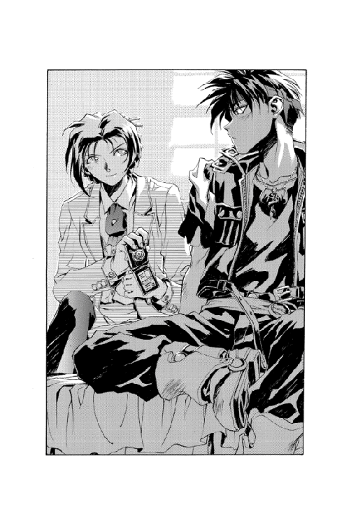
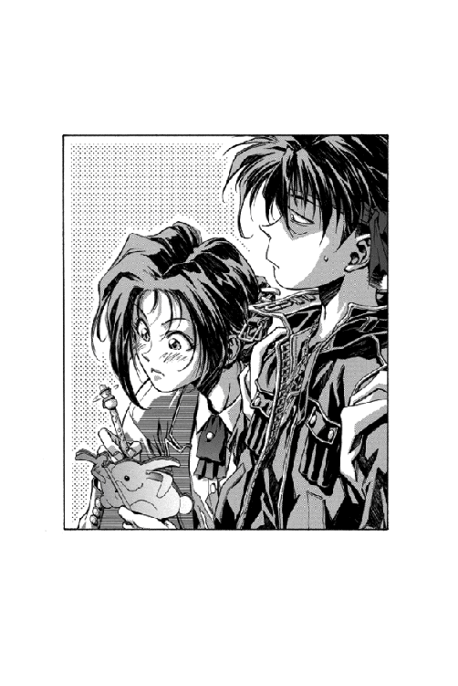
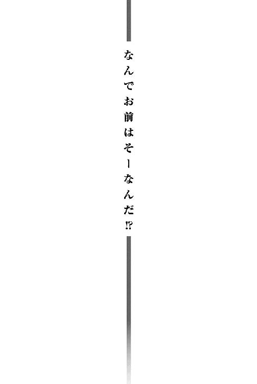
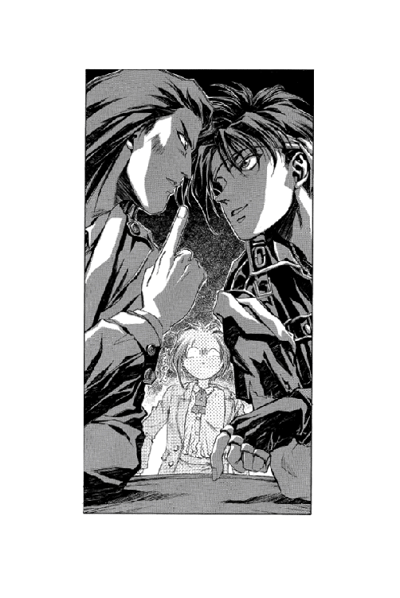

| 魔術士オーフェンしゃべる無謀編1 | |
| 秋田禎信 | |
| (2012) | |
「で、なんだったんだ？ 我が家にはなにが起こったんだ？」スウェーデンボリー魔術学校の校長にして史上最強の魔術士の一人、《魔王》オーフェン・フィンランディは嘆息した。目の前には何故かぼろぼろになった愛しき娘が三人。その背景に広がるのは、見るも無残なまでに変容したマイホーム。しかしまあ、彼にしてみれば幼いころから繰り返し見てきた光景である。あのころは平和だった。彼の《姉たち》が毎日喧嘩を繰り返していた、あのころは......。

CONTENTS
イラスト：草河遊也 Yuuya Kusaka
デザイン：ヴェイア Veia
「ざけんなコラ！ たいがいタワケタことばっか言ってっと、黄色い煙で燻し殺すぞ！」
商都トトカンタの小さな食堂──小さすぎて彼らの貸切だ──に、罵声が響き渡る。
テーブルの向かいから身を乗り出す、手皮のマントをまとった身長百三十センチほどの地人の少年をにらみ返しながら、オーフェンはゆっくりと言い返した。
「ほおう。ずいぶんと偉くなったよーじゃねえか。ボルカン」
年の頃二十歳くらいの、黒を基調とした格好の黒魔術士である。目は鋭い──というよりも斜視に近い。彼はテーブルの上に両手をついてこちらをにらみつけているボルカンから視線を外し、そのとなりにいる分厚い眼鏡をかけた、やはり地人の少年へと向き直った。
「なあ？ 鳥頭の兄貴ならともかく、お前なら覚えてるよなあ、ドーチン──お・ま・え・ら・が、俺から借りた金！ とうの昔に返済期限が過ぎてんだよ！」
「あの......『お前ら』って、お金を借りたのは兄さんなんですけど......」
弱々しい口調でドーチンがうめくと、そのとなりから、容赦ない一撃が彼の横面を張り倒した。
「情けないぞ！ ドーチン！ 血を分けた兄を売るとはっ！」
殴り倒され、椅子から転げ落ちて、ドーチンがぼやくように言う。
「い、いや──その──でも、受精卵はそれ自体で血液を作ることができるから、兄弟のみならず親子だって血を分けたってわけじゃあ──」
「そんなわけの分からんことを言っても兄はごまかされんぞっ！」
「でもこれは科学的な──」
テーブルの上と下とで口論する兄弟をにらみ据えつつ、オーフェンは怒りで肩を震わせて、どんとテーブルをたたきつけた。
「うるせぇっ！ くだらねえことはどーでもいいんだよっ！ とにかく、お前らが借りた金──」
と──オーフェンがテーブルの上のボルカンの脳天をがっしとつかんだとき、唐突に声がかかった。
「あのう......」
三人がいっせいに振り返ると、そこにはひとりぽつんと女の子が立っている。二十歳より少し前というところだろう。おどおどと胸元で手を組み合わせて、なにかに怯えているふうだ。彼女は短く切った黒髪の先をふるふると震わせながら、
「あなたたちは、傭兵なんでしょうか？」
「はあ？」
オーフェンは顔をしかめ、聞き返した。
「傭兵だあ？ 今時、ンな物騒な商売してる奴なんて──」
が、彼女はまるっきりなにも聞いていないのか、いきなり腕を振り上げ──
「お願いっ！ 話を聞いてくださいっ！」
テーブルの上に思いっきり、全体重を乗せたエルボーをたたき込む！
「だああああっ！」
真っぷたつに割れてボルカンごと床までめり込むテーブルから後退るように、オーフェンは逃げた。見るとドーチンもなんとか逃げ出したようだが、ボルカンは完全に床下まで埋もれている。その彼の上に突っ伏すような格好で、女はじっと動かなくなった。不安になって顔を近づけてみると、うつ伏せのまま、しくしく泣いている。
「あ、あの──」
オーフェンが声をかけると、彼女は小さくつぶやいた。
「肘をくじいてしまいました......」
「い、いや、そんなことを言われても──」
「ひどいっ！」
彼女はバッタのように跳ね上がると、すさまじい勢いでオーフェンの鼻先に右フックを放つ！
「ひええええっ⁉」
彼は悲鳴をあげながらなんとか避けた。その彼女の向こうで、ドーチンが、恐らくこの事態では最も常識的な行動と思われたが、床下からボルカンを掘り出しているのが見える。
彼女が続けて放った左ジャブまで避けると、彼女は、その空振りした自分の拳を見つめながら、ぽろぽろと涙をこぼしはじめた。
「ひどいわっ！ 話すら聞いてくださらないなんてっ！ 鬼よっ！」
そのまま両手に顔をうずめ、わっと泣き出す──
「い、いや、話があるんなら、できれば手を出さずに話してくれないと──」
しどろもどろにオーフェンが言うと、彼女はぴたりと泣くのをやめ、顔を上げた。
「話を聞いてくださるんですのねっ！」
ゔ............
オーフェンは胸中でうめきつつ、彼女を見返した。彼女の混じり気のない、きらきらした双眸を見つめながら、オーフェンは既に射すくめられ、身動きがとれなくなっていた。
「助けていただけるなんて、こんなに嬉しいことはありませんわっ！」
と、表情を輝かせる彼女に、オーフェンは『待った』をかけるように手をあげて、
「いや、その──まだ助けてやるなんて一言も──」
「ええっ⁉」
ひどく驚いた顔で、彼女。その背後で、ようやく息を吹き返したらしいボルカンが腕をまくるのが見えた。
「このアマ、いきなりなにをしやがる──」
後ろから突進してきたボルカンの頭を、まるっきりそちらの方向を見もしないで、彼女はがしっとわしづかみにした。
「でもさっきは一生めんどうをみてくださると──」
訴えかけるようにそう言いつつ、ボルカンの顔面の真ん中に拳を打ち込む。鼻血を出して後ろに倒れるボルカンを見ながら、オーフェンは激しくかぶりを振った。
「言ってないぞ！ ンなこと！」
が、彼女は完全に無視して続けた。
「実はわたくし──」
言いながら、倒れたボルカンを起こしにかかる。白目をむいたボルカンの頭を小わきに抱えて指を鳴らしている彼女を、後ろからドーチンがあわてて制した。
「ち、ちょっと待ってよ──君さあ、その──暴れずに話ができないわけ？」
「暴れずに？」
彼女はまったく理解できないという口調で、
「なんのことですの？」
むろん、これを言うまでにしっかりとボルカンの首を両腕で固めている。
「いや、だから、なんのことって......」
「ゔえええええええ......」
と、これはボルカンの声。ひどく不自然な方向に首をねじ曲げられ、泡のまじったよだれをたらしている。
「わたくし、よく人にはひっこみ思案で損をしているって言われますの」
ドーチンはそのときまでには、すでにあきらめの表情になっていた。
「まあ......人は自分の欠点になかなか気づかないものだって言うしね」
「......そーゆう問題か？」
オーフェンは一歩退いた眼差しで聞き返したが、誰も答えなかった。
「ゔえええええええええええええ......」
ボルカンがもう一度うめき、急にぐったりとなって手を力なく床に落とす。
と、その瞬間──ぴくり、と彼女の表情がひきつった。
「ひどいっ！」
気絶したボルカンを持ち上げ、床にたたきつけると、げしげしに蹴りはじめる。
「わたくしがせっかく勇気を出して助けを求めているとゆーのにっ！ 話の最中に寝るなんてっ！」
「ああああああ」
暴れだした彼女からなるたけ離れようと、オーフェンとドーチンは連れ立って後退りした。ドーチンが、頭を抱えてうめいている。
「平和が欲しい......」
「わたくしを誰だとお思いですのっ！ チャコール・グレイ家の次期当主！ ミシリム・チャコール・グレイがこーまで頭を下げているというのにっ！」
ボルカンごとテーブルを抱えて店をぶち壊しながら、彼女はそう叫んだ。早々に裏口から逃げ出しにかかっている店主の背中を見送りつつ、オーフェンの頭に閃きが走る。
「チャコール・グレイ？──って──」
刹那──
「待てっ！」
店の入り口から、鋭い声。
オーフェンはじめ、店の中の視線すべてがその入り口へと向かう──ちょっとした段差のあるその入り口には、いつの間にか数人の男たちが立っていた。全員がまるっきり色気のない光沢なしの黒のスーツを着ていて、濃いサングラスをかけている。袖口のカフスまでもがお揃いで、金の菱形の真ん中に赤い紋様が記されていた。
一番最初に声を発したのはミシリムだった。
「なんですの、その格好は。おっさんくさい」
「知り合い？」
オーフェンが聞くと、ミシリムがかぶりを振った。
「いいえ。あんなじじむさい連中は知りませんわ」
「でも、精神年齢は低そうだね。あのグラサンなんて特に」
ドーチンが横から言う。ミシリムは納得したような顔でうなずいた。
「とっちゃんぼーやですのね」
「ぃやかましいっ！」
男たちの中のひとり──ひときわ体格のいいのが、いいかげんたまりかねたように声を出した。
「黙って聞いてれば、じじむさいだのなんだのっ！ これは職業的な──ほれ、つまり──制服なんだから仕方がないだろうがっ！」
「典型的な悪役の格好だな」
オーフェンが評する。
フン、と黒のスーツの男は鼻を鳴らして、少し落ち着いたのか口調を整えた。
「なんとでも言うがいい......さて、ミシリム・チャコール・グレイさんですね？」
と、彼がミシリムのほうに向き直る。沈黙の一瞬、ミシリムの足元で、もそっとボルカンが起き上がった。ぼろぼろになりつつもなんとか立ち上がり、
「こ、このクソアマ──」
つぶやいた瞬間、ミシリムが茫然自失のていで、どさっとテーブルをボルカンの頭上に落っことした。カエルが馬車に踏まれたような音を立てながら、ボルカンはテーブルの下敷きになって見えなくなった。
ミシリムが、愕然としたように叫ぶ。
「......さては、あなたたちが──この前からずっとわたくしの後をつけまわしていた奴らですのねっ！」
「まあ......そういうことです」
「なぜっ！ 撒いたはずですのに、どうしてわたくしがここにいることをつきとめたんですのっ！」
「いや......その──」
と、男は困ったように、派手に壊れた店内を見回してから答えた。
「近くを通りかかれば、あなたがいる場所はすぐに分かるし......物音とか悲鳴とか──」
「分かったわ！ スパイがいるのねっ！」
知ってか知らずかボルカンの頭を踏み付けながら、彼女が叫ぶ。
「いや、そーじゃなくて......」
「ごまかそうとは、どあつかましいっ！ スパイは誰ですのっ！」
「え、ええと、あの──」
「ああ、うるせいっ！」
と、いきなりオーフェンは天井に向かって手を差し上げ、強烈な光熱波を放った。爆音が店を揺るがし、天井の漆喰を粉塵にして撒き散らす。そのままくるりと向き直ると、さすがにミシリムも黒服たちもぴたりと静かになった。オーフェンは続けた。
「よくは分からんが──必要なことはだいたい分かった。そこで質問だ。俺の協力が欲しい人は？」
「へ？」
「だから俺の手助けが欲しいのは誰なんだよ」
「ええっと......」
互いの顔を見合わせつつ、ミシリムと黒服たちとがいっせいに手をあげた。オーフェンはそれを見てから満足してうなずき、
「いくら出す？」
「え？」
一番大きな声を出したのはミシリムだった。
「この場合、人道上、当然、か弱きわたくしに助勢すべきでは......」
「それは、どーか知らんが......」
オーフェンは冷たく彼女を見返して、
「いくら出す？ 持ち合わせがないならモノでも可。ただし売れないものは駄目」
「肩たたき券」
「最近あまり動かなくなったウチのじーちゃん」
「売れるかっ！」
オーフェンが怒鳴ると、ミシリムの足の下からボルカンのずんぐりした手があがり、
「とりあえずこのアマをどかしてくれたら──」
「くれたら？」
「もっと借金をしてあげます」
「いるかっ！」
オーフェンは叫び、ぶつぶつと続けた。
「ったく、ロクな連中じゃねーな。競りにもなりゃしねえ。ドーチン、お前は？」
いきなり聞かれてドーチンは、ぎくりとしたようだった。
「え、えっと──あのミシリムってひとに踏まれている兄さんを」
「ああ」
「助けなくていーです」
「おいコラ！ ドーチンっ！」
と、ボルカンが最後の力を振り絞って顔を上げる──その脳天を、どげし！ とミシリムが蹴りつぶした。
「なんてひとたちですの！ 人の命がかかっているとゆーのに、それをお金で取引しようなんてっ！ 人間のクズよっ！」
だん、だん！ と小気味よくボルカンを踏みつぶし、地人の身体は再び木の床にめり込んでいく。
「死んじゃったかな、兄さん」
あまり心配そうではない口調で、ドーチンがつぶやく。
「さあな」
似たような口調でオーフェンも返事した。
「さて！ 茶番はそこまでにしてもらいましょうか！ ミシリムさん──」
黒服たちが、ずいと前に出てくる。それにあわせてミシリムは、ボルカンを踏むのをやめて、さすがに神妙に冷や汗をたらしながら後退りした。それを見てドーチンが嘆息し──のろのろと、兄を回収しに歩いていく。ドーチンは黒服たちとミシリムの間を通り抜けて、ずたぼろになったボルカンを床から引き抜き引きずっていった。
しん......とした眼差しでそれを見送ってから、こほんと咳払いし、黒服のリーダーは、さっとスーツの上着を脱いだ。
「さて......わたしも、荒縄のコンコーイと呼ばれた男です。ここであなたを取り逃がしたとあっては、我が主人にも面目が立ちません」
「あらなわ？」
オーフェンは思わず聞き返した。ふふ、と笑いながら、そのコンコーイとやらが答える。
「つまり──」
とポケットから、こよりのような一本の紐を取り出し、片手で器用に二の腕に巻き付け、
「ふんっ！」
気合を入れるとともに力こぶが盛り上がり、その紐がぷつりと切れる。コンコーイは得意げにしめくくった。
「まあ、こんなものですよ」
「発想がまたじじくせえなあ」
「うるさいっ！」
「それに、それだったら麻紐のコンコーイの間違いじゃねえか」
オーフェンは指摘したが、コンコーイはまったく気にしないふうで、
「はっはっ。これだから俗物は困る......これは麻紐ではなくて、ちゃんと特注して作った、ちょっと細めの荒縄なのだ」
「そこまでして......」
「うるさいなあ。わたしん家の斜向かいのウィリアムさんなんて、犬くらいの大きさの子熊をいじめまわして熊殺しと名乗ってたぞ」
「......いや、それで満足ならいーんだけどな」
オーフェンはあえてそれ以上は追及せずに、ほかの連中の顔を見回した。気絶したままの兄のほおをぴしぴしと叩いているドーチンは、明らかにこれ以上深入りするよりは、とっとと兄を起こしてずらかったほうがいいと思っているようだ。ミシリムは一転、深刻そうに自分で自分の身体を抱き締めている。
コンコーイは、さらにミシリムに近寄っていった。
「さて、ミシリムさん。我が主のもとにお連れする前に、少々わたしとお手合わせ願えますかな？ これも主人の命でしてね」
「な、なんですって？」
ミシリムは素人芝居じみたオーバーアクションで叫んだ。
「なんの力もない、身を守るものといえば毅然とした態度と少々の機知しか持ち合わせていない無力な女の子をいたぶり殺そうなんてっ！」
「い、いや、いたぶり殺すとまでは──」
「鬼っ！ 悪魔っ！ 人類の敵っ！」
「あっ、うわっ！ たっ！ お、おい、こら！ ナイフとフォークだけは投げるんじゃない！ 危ないっ！ あ、ジョーイ！ 俺を置いて死ぬんじゃないぞ！」
頭にフォークが突き刺さった仲間を介抱するコンコーイを眺めつつ、オーフェンは、その向こうでボルカンが目を覚ますのに気が付いた。地人はいったんびくっと身じろぎしてから、重い扉を押し開けるようなうめき声を出す。
「く、くそ、あのアマ......」
「あ、兄さん、気が付いたね」
ボルカンの首がひどく不自然な方向に曲がっているような気もしたが、オーフェンにとってはどうでもいいことではある。
ボルカンはむっくりと起き上がるといきなり、げし、とドーチンの鼻面に拳を打ち込んだ。
「な、なにすんのさ、兄さん！」
「うるさいっ！ さっきのことを忘れるとでも思ったかっ！ それに、なんで俺ばっかり殴られてなけりゃならんのだっ！ だいたいなんだ！ 話をするときにはまっすぐこっちを見ろ！」
「いや、曲がってるのは兄さんの首なんだけど......」
「屁理屈を言うなっ！」
またドーチンを殴り倒してからボルカンは、ふと気になったように横目で、いつの間にか同レベルに皿やら椅子やらを投げあっている黒服とミシリムとを見やった。
「あいつら、なにやってんだ？」
殴り倒されてまだうめいているドーチンのかわりに、オーフェンが答える。のんきに。
「いや......俺もよく分からんのだが、あの黒い服を着た連中が、あのミシリム・チャコール・グレイってのを荒縄で縛り上げてなぶり殺しにするんだそーだ」
「するかっ！ ンなこと！」
と、これはどうやら聞いていたらしいコンコーイの声。
それは無視して、ぴくり、とボルカンの表情が変わる。
「チャコール・グレイ家？ トトカンタでも有数の名家じゃないかっ！」
突然すっくと立ち上がり、ボルカンは黒服たちに向き直った。
「貴様らっ！ か弱き令嬢をよってたかって亡き者にしようとはっ！ 恥を知れ！」
「......ついさっき、その令嬢に半殺しにあったくせに」
だがボルカンはドーチンのつぶやきを完全に無視して、黒服たちに突進していった。
「おーい、ちょっと待──」
オーフェンはふと気になって声をかけたのだが、それも聞こえていないらしい。
「くらえ正義の鉄拳！ 貧乏人には塩を売り、大金持ちには恩を売れ！ 根性の腐ったハイエナども、このボルカノ・ボルカン様が現金書留で送り殺してくれる──」
「──だから言ったのにな」
荒縄（麻紐ではなく）で兄弟ともども背中合わせに縛り上げられたボルカンとドーチンを眺めつつ、オーフェンはあごに手を当てて言った。
「お前が一対五で勝てるわけねーだろ」
「うるさい！ 信念と正義さえあれば──」
その背中で、ドーチンがぼやく。
「だから負けたのかもしれない。だいたい、なんでぼくまで縛られるんだ」
「なにを言うかっ！ 兄と苦楽をともにしようという家族愛があってこそ──」
「......って、苦痛しかともにしてないような気がするんだよなあ」
「なんだかなあ」
オーフェンはぼんやりとつぶやいた。まだ皿を投げあっているミシリムらを見ながら、
「ちゃんと金になるんだろーな、これは......」
不安げに言う。が、とにかくなにかをしなければ始まらない。オーフェンは嘆息まじりに両手を掲げ、声高に叫んだ。
「我は呼ぶ破裂の姉妹！」
ぐわっ──
と、場の空気がひしゃげて膨らむ。空気そのものの爆発、とでもいうような衝撃波が、無差別に店の中に炸裂した。
「にええええええっ！」
ミシリムや黒服らが、各々勝手な悲鳴をあげつつ、逃げ惑う──が、そんなものはおかまいなしに衝撃波は、すでに半壊しかけていた食堂を完膚なきまでにぶち壊し、テーブルの類いをなぎ払う！
魔術の効果が終わり、店の中が静まると、内装はめちゃくちゃになっていた。ミシリムも黒服も、瓦礫に埋もれてぴくりともしない。オーフェンはつかつかと歩いていくと、無造作にミシリムの足を引っ張って掘り出した。目を回しているらしい彼女をそのまま手早くかつぎ上げると、
「おし。行くぞ」
ボルカンとドーチンに言う。
ドーチンが、信じられないといった口調で聞き返してくる。
「た、助けてくれるんですか？」
オーフェンは不機嫌顔で答えた。
「たりめーだろ。借金の分、てめーらにも働いてもらわねえとな。役に立てば、このご令嬢を手助けする報酬から立て替えてやるぜ」
「──立て替える、だと？ じゃあ報酬から差っ引くってことか？」
ボルカンが悲鳴をあげた。こんなときだけは、妙に頭の回転が速い。
「コラ、魔術士！ 同じ仕事をするんなら、山分けが筋だろーがっ！」
「なにが筋だ！ てめえらなんぞ置き去りにしてってもいいんだぜ！」
「くそ！ 貴様なんぞに助けられるつもりはないっ！ このマスマテュリアの闘犬ボルカノ・ボルカンは自力で脱出してやるからな！」
「勝手にしな！」
短く叫ぶとオーフェンは、失神したミシリムをかついだまま出口から出ていこうとした。と──その背後でいきなり、ごん！ ととてつもなく鈍い大きな音が響く。
振り返ると、床に落ちていたジョッキで背後の兄を殴り倒したドーチンが立っていた。
「さあ行きましょう。とりあえずうるさい兄を黙らせましたから、ぼくに取り分プラス一ですね」
「............」
オーフェンはなにも答えず、とにかく通りに飛び出して、空いている馬車を探しはじめた。
「待てえええええい！」
ドーチンにボルカン、ミシリム、そして当然オーフェンの四人を乗せた馬車は、トトカンタの街道を明らかに違反と思われる速度で疾走していたが、追っ手はそれ以上に速かった。あのコンコーイとかいう黒服が、黒っぽい毛並みの牝馬に乗って追いかけてきている。
これだけのスピードというのは馬車上からでも脅威だったし、気絶したミシリムが落っこちないように押さえ付けているのもかなりの労働である。
ちっ──とオーフェンは舌打ちした。手綱を握る御者の肩をつかみ、
「おい！ もっと急げねえのか？」
とはいえ、答えは分かり切っていた──見下ろすと、車輪がもうかなりガタガタ鳴っている。これ以上スピードを上げたら車体が分解するかもしれない。
案の定、御者はかぶりを振った。
「い、いやあ──無理ですよ」
もう既にかなり青ざめた表情で、年とった御者はつぶやいた。街中でこれだけのスピードを出しているところを警備隊に捕まれば、職業免許を停止されるくらいではすまないかもしれない。
「......ううん......」
と、手狭な馬車の上で、ミシリムがうめき声をあげて目を覚ました。そして、はっと起き上がってあたりを見回し、
「ああっ！ とうとうさらわれてしまったのねっ！」
「違うっ！」
オーフェンはぐるりと振り返ると、逃げ出そうとしているミシリムの首根っこをひっつかみ、そのまますごみを効かせた顔で言う。
「いいか──じたばたするんじゃねえぞ。あとで報酬さえ払ってくれれば無事に家まで送りとどけてやる」
それを聞いて、彼とミシリムとを見比べながら、ドーチンがぽつりとつぶやく。
「いやあ......その言い方は、誤解を招くと思うなあ」
「じ、じゃあ、お嬢さん、わたくしめにあなたの身をお守りする栄誉をお与えください」
「......急に言葉に熱意がなくなったね」
「うるさいなあ」
オーフェンがぼやくと、ミシリムはなんとか納得したようだった。だが、後方から追ってくるコンコーイの顔を一瞥して、表情に不安の色がよぎる。
「なんとか、あれをくいとめる手はないものでしょうか。わたくし、あの黒スーツを見るだけでムカムカしてきますわ」
「うーん......まあ、テはあるけど──なあドーチン。ちょっとこっち来てみ？」
「？ はあ」
気絶したままのボルカンを馬車の床に打ち捨てて、ドーチンはこちらに寄ってきた。オーフェンはドーチンを後ろの座席に座らせ、コンコーイのほうを指さして、言った。
「あれが見えるか？」
「え、ええ。でもなんだかぼくいやな予感が──」
「気のせいさ。ところでミシリム。こっち向いて」
「はい？」
ミシリムは振り返り、そして──どう見てもわざととしか思えなかったが、裏拳でドーチンの後頭部を打ちすえた。その勢いで、ドーチンの身体は、すっ──とすべるように馬車から転げ落ちた。
「──え？」
ドーチンの声だけがぽつんと取り残される形で、馬車上につぶやかれる。ドーチン本人は、いまだ信じられないような表情で地面をバウンドし──後ろから追いかけてきていたコンコーイの馬に激突した。
「でももしかしたらこれでぼくに取り分プラス二いいいいいいぃぃぃぃぃ......」
落馬するコンコーイと、悲鳴（歓声かもしれない）をあげるドーチンとを遠く後ろに眺めながら、オーフェンはにっこりとミシリムを見た。彼女はぐったりと脱力し、その場に手をついて──
ぶるぶると唇を震わせながら、彼女はつぶやいた。
「わたし──まったく偶然の、過失の、運命的な、まるっきり人為を介してない、罪のない事故とはいえ──」
「い、いや、そうかなあ」
オーフェンは首をひねってつぶやいたが、彼女はまるっきり聞いてはいなかった。
「事故とはいえ、人を死なせてしまったわ！」
「うーん......でも、地人ってのはえらく頑丈だし、そー簡単には死なないと思うけど......」
オーフェンはとりあえず慰めたほうがいいだろうと、ミシリムの肩に手を置こうとした。が、彼女はぽろぽろと涙を流しながらがくんと肩を落とし──落とした手の先が、馬車の床で寝込んでいたボルカンの腕にたまたま触れて──
「わたしが人を傷つけてしまうなんてっ！」
彼女はそう泣き叫びながら、ボルカンの腕を手羽折りに極めた。悲鳴をあげながら、ボルカンが目を覚ます。
後ろの騒ぎなど聞こえないほどに緊張している御者は、いまだスピードを落とすタイミングがつかめずに、どこまでも馬車を疾走させていった。
馬車はチャコール・グレイ家の屋敷にたどり着いた瞬間、限界を迎えて崩れ落ちた。商売道具を失い、おいおい泣いている御者を尻目に、ミシリムは屋敷の門をくぐっていった。
「......立派なお屋敷だな」
後ろからついていき、オーフェンが言うと、ミシリムはびっくりしたように振り返った。
「あら、ついてきたんですの？」
「いや......まさか報酬払わないつもり？」
「あら、あら」
ミシリムはまるっきり無意味な返事をすると、子供が熊の縫いぐるみを抱えて歩くようにボルカンを抱えて──ただし関節技を極めながら歩いていった。
と──その後は無言で広い広い庭を抜けて、屋敷の前まで出る。見上げるばかりの真っ白な屋敷に、オーフェンは思わず感嘆の吐息をもらした。
その彼らの前に──すっと、人影が現れる。
「なんだ、生きてたのか」
オーフェンは声をあげた。
「......どしてそーゆうひどいことが言えるんですか」
ドーチンが陰鬱に聞いてくる。
屋敷の前には、頭を包帯でぐるぐる巻きにしたコンコーイと、その横に、やはり包帯と絆創膏だらけのドーチンが並んでいた。そして──そのさらに後ろにもうひとり、こちらは全然見たこともない男。
「ミシリム！」
その男はコンコーイとドーチンを押しのけ、こちらに向かって両腕を広げた。金髪を短くした、筋肉隆々の若者である。
彼を見て、ミシリムが驚愕の声をあげた。
「ヒル！」
ついでにボルカンも大声をあげる。
「なぜ俺の首をひねるうううう！」
動かなくなった地人の身体を地面に下ろし、ミシリムは感極まったようにその男──ヒルとやらをじっと見つめはじめた。
「なあ......なにがどうなってるんだ？」
オーフェンは首だけ回してドーチンに聞いた。ドーチンは、よくしゃべれるように口元の包帯をずらしてから、
「......あの方が、アンドン交易の御曹司、ヒルだそーです。こちらのお嬢さんとは婚約者だそーでして」
「で......わたしはヒル様に雇われている」
コンコーイの言葉に目をぱちくりさせながら、オーフェンは不思議に思い、聞いた。
「えっと......なら、お前があの女を荒縄でなぶり殺しにする必要なんてねーじゃねえか」
「だから、ンなことは最初からするつもりないってのに」
「まあ......見てれば分かりますよ。ぼくは話を聞いて頭が痛い......」
ドーチンがそう言い、ミシリムとヒルのほうを指さしたので、オーフェンもそれにならってふたりを見やった。
まず最初に口を開いたのはミシリムだった。
「ヒル......会いたかった。どうしたの？ 突然何か月も姿を消して──」
「ぼくは、君に相応しい男になるために修行をしていたのさ」
ヒルは言うと、優にソファーの背ほどもある胸板をぐっと広げた。
「さあ、勝負だ──ミシリム、おいで！」
「ヒル！」
ミシリムは涙を流しながら叫ぶと、ヒルの腕の中に飛び込んだ。
「ヒル！ 会いたかった！」
すぼぅんっ！──叫びつつ、腋の下の急所に強烈な肘を打ち込む。ヒルは二、三歩も退きながらなんとか耐えて、
「ぼ──ぼくもさ！」
「あなたなしの生活なんて考えられないっ！」
ぱんっ！ と、これは牽制の平手打ち。そして、
「ああっ！ わたしをもう放さないでっ！」
だんっ！──絶妙なコンビネーション・ブローがヒルのあごを捉える！
ヒルはぐらりと身体を傾かせ、地面にひざをついた。
「ほほう。今のは効きましたね」
のんきな口調で、コンコーイが言う。それを受けて、オーフェン。
「うん。あの坊や、まるっきり反撃の糸口が見つけられない。試合の流れについていけてないんだ。これは良くないな」
「あの......解説してる場合じゃ......」
オーフェンは無視して、体勢を低くしてしまったヒルの顔面にミシリムの飛びひざ蹴りが極まるのを見つめた。
腕組みして、まるっきり見物客のていでオーフェンは言った。
「ふむ──それにしてもあのお嬢さんは筋がいいな。今のアッパーを見たか？」
「今日はまだ見せていませんが、スウェイバックも神業ですよ。なにしろ彼女はもと王宮拳闘士の家系チャコール家と、天候見張り役の家系グレイ家の遺伝的ケッサクですからね」
「天候見張り役？」
「だから目がいいんです。おっ、出ましたね。あの幻の右が出ると、ヒル様も弱いですからねえ。しかし、極め付けは十八歳の誕生パーティーのときに一度だけ見せたレッドホットシューティングスターハリケーン──」
「......どんな技だ、それは」
オーフェンはうめきつつ、まだ死闘を繰り広げているミシリムとヒルに近寄っていった。すると──ミシリムが目ざとくこちらに気づき、標的をこちらに変えて突進してくる！
「ほい」
オーフェンは落ち着き払って、地面に転がっていたボルカンを放ってやった。ミシリムは餌を投げられた犬みたいにボルカンに飛びつき、えらく複雑な関節技に極めて、それを後ろに放り投げ、脳天からたたきおとした。恐らくこれが、レッドホットなんとかという技なのだろう。
オーフェンはそれを尻目に、芝生の上に倒れてグロッキー状態のヒルの上にかがみこんだ。ヒルは、ふらふらの口調でつぶやいた。
「う......ミシリム。部下が手傷を負わせた後ならなんとかなるかもしれないと思ったのに──」
「修行ってな、それのことかい。まあいいや。おい、ヒル。あの女をおとなしくさせたらいくら出す」
「へ？」
ヒルは虚を突かれたような声を出したが、しばしして──
「ぼくらの結婚式に招待してあげるよ」
「ンな危険な催しに参加できるかっ！ 金だよ、現金オンリー！ いつも朗らかキャッシュでポンだ！」
「なにそれ......」
後ろで、ドーチンがつぶやく。
「う......なら──こんくらい」
ヒルは震える手で、空中に数字を描いた。それは、まあ──まずまずの金額だ。
「よし」
オーフェンはうなずくと、くるりと立ち上がり、今はボルカンを木の枝にぶら下げてサンドバッグにしているミシリムに向き直った。
おもむろに手をあげて──
「我は放つ光の白刃！」
彼の手から放たれた光熱波がボルカンを直撃し、爆風と熱波がミシリムを吹き飛ばす！
ど──おおおぉぉぉぉ......ぉぉんんん......
あまりにも長いエコーのかかった爆音は、チャコール・グレイの庭園に生々しくこだました。あとには、黒焦げになったボルカンと燃え上がる庭木、そしてもみくちゃになって倒れているミシリムだけが残った......
数日後。
「......あ」
「なぜ逃げる」
道でばったりと出くわしたドーチンを取り押さえ、オーフェンは脅すように言った。
「で？ そろそろ金を返すあてはできたのか？」
「答えは知ってるくせに」
自分の足の下でうめくドーチンに、オーフェンは陰険な声音で答えた。
「知ってようがなんだろうが、あのヒル・アンドンのサギ野郎、こっちが注文どおりにカタつけてやったってーのに、報酬よこしやがらねえ。おかげで一文なしなんだよ」
「サギって......それはごく当然の反応だと思うけど......」
「あんでだよ」
「なぜと聞くかなあ。あのミシリムってひと、病院送りになっちゃったんでしょう？」
「いいじゃねえか。世の中のためだ」
「それは否定しないけど......」
複雑な表情で、ドーチンはつぶやいた。
オーフェンは、ほとんど踏みにじるみたいにしてドーチンをのぞき込んだ。
「なんにしろ、ンなこたぁどうでもいいんだよ。ちゃんと郵便で自動発火装置送り付けて仕返しはしたから。で、ボルカンの野郎は今なにしてる？」
「ええと......橋の下で三日ほど寝込んだら、だいたいケガは治ったみたい」
「なんだ、生きてたのか」
「そゆことを言うかな......で、兄さんなら野良犬を飼い慣らして、子供を襲って小遣いをまきあげる計画を立てて喜んでたけど......」
「......ま、いーけどな。それで、いつごろになったら借金は返ってくるんだよ」
「額と利率とを考慮して......ぼくの計画じゃあ、四十年後くらいかな」
「待てるか、タコ！」
オーフェンは怒鳴ると同時に、思いきりドーチンの身体を馬車道に蹴り出した。これ幸いと通りの向こうに逃げ出すドーチンの背中を見送ってから、オーフェンは天を見上げた。
「なんだかなあ......また、儲けなしかよ。慈善事業の才能でもあんのかね、俺は」
別に彼の独り言に応えるためというわけでもなかろうが、通りに一陣の風が吹きこむ。風に髪を撫でさせながら、とりあえずオーフェンは、風に転がされてきたゴミを蹴り返した。
（てめぇら、とっとと金返せ！：おわり）
「ひゃあああうぅ、おおおぇあおあうっ！」
人語を越えた悲鳴をあげつつオーフェンは、古びた白大理石の遺跡の壁に身を隠した。ちゅんちゅんっ──と、幾十、幾百という鉛の弾丸が、音速を超える衝撃波を撒き散らしつつ遺跡を蹂躙する。
壁に隠れて頭を抱え込んだオーフェンの耳に、また炸裂する爆竹のような音が響いた。立て続けに、だだだだ、だだだだという銃声が鳴り響く。
「ボルカン、ドーチン、生きてっかあー？」
オーフェンは嵐のようなその騒ぎに負けじと、大声で呼びかけた。が、返事はない。逃げたんじゃねえだろうな、と彼は仲間のふたりのことを呪った。
「なんで俺がこんなメに......」
ぶつぶつと、歯の根のあわない震え声で毒づく。二十歳になるかならないかくらいの、旅馴れた軽装の男である。黒髪、黒目の、ごくごく平均的な人間の平民だ。拗ねた感じの目は今は恐怖にひきつっている。黒を基調にしたシャツの襟ぐりから、剣にからみついた一本脚のドラゴンをかたどった銀細工のペンダントがはみ出していたが、これは黒魔術士の証しである。
（ままよ──）
オーフェンはとにかく祈りのしぐさをして、天を仰いだ。自分を襲うあの化け物相手には、よほど威力のある魔術でもないかぎり、効きそうにはない。必死の形相で彼は祈った──
「神でも悪魔でも父ちゃんでも母ちゃんでも、猫でも犬でも紐でも包丁でもコオロギがびっしり浮かんだプールでも、くそったれ、俺を助けてくれるモンならなんでもいいんだ！とにかく俺の幸運がこんなところで打ち止めってなことだけはありませんよーにっ！」
捨て鉢になって怒鳴るように吐き捨てると、彼はいきなり呼吸を整え、すっと目を閉じた。
このキエサルヒマ大陸の魔術士は、例外なく音声で魔術をかける──つまり呪文の声がとどかないところまでは魔術の効果も及ばない。彼は肺の中にめいっぱい空気を吸い込むと、隠れている場所から転がるようにして飛び出した。銃撃の源のほうに向き直ると、両手を前に突き出し渾身の力を込めて叫ぶ──
「我は放つ光の白刃！」
かっ！──
と、膨大な白光の奔流が、彼の両手から膨れ上がった──網膜を焼くようなその輝きは手近な瓦礫やら壁やらを粉砕して吹き飛ばし、目標に向かって真っすぐ流れ込んでいく。閃光は、それまで弾丸を撒き散らしていた目標に触れて、初めて爆音をあげた──大爆発が広大な遺跡を震わせる。
ずううううん......と、最後の地鳴りがやみ、オーフェンはほっとため息をついた。
「よし──」
「なにが『よし』かあああっ！」
突然、横から飛び出してきた黒い塊に蹴飛ばされ、オーフェンはあっけなく吹っ飛んだ。あわてて起き上がると、毛皮のマントをまとった身長百三十センチほどの『地人』が、憤然と両手を腰に当てて仁王立ちしている。
「てめえボルカン！ なにしやがる！」
オーフェンが怒鳴りかえしつつ立ち上がると、そのボルカンなる地人は背負っている長剣を抜いて詰め寄ってきた。
「なにもくそもあるかっ！ 商売モノになんてことしやがる──」
「ふざけんな！ 俺は死ぬトコだったんだ！」
「お前の命がいくらほどだってんだ！ あれにかけられた賞金に比べりゃ、クソみたいなもん──」
「ほおうっ！ そのクソみたいな人間に借金も返せずただ働きしてる、しみったれた肉の塊がよくも、ンなコト言えた義理だな！」
「黙れこの金貸し魔術士！ 木の杭で打ち殺すぞ！」
「うるせえぞ福ダヌキ！ ビン詰めになって川に流されっぞ！」
ぎゃあぎゃあ口論を続けるふたりのところに、そろそろともうひとり、分厚い眼鏡をかけた地人が近寄ってくる──毛皮のマントは地人たちの伝統的な民族衣装だが、彼もまたそれを着込んでいた。
その地人の少年は、まだわめき散らしているボルカンのマントをくいくいとひっぱり、神経質そうな声を発した。
「ねえ、兄さん──」
どうやらこの地人たちは兄弟らしい。
ボルカンはうるさそうに、
「なんだよドーチン。今このひょろ長の魔術士をゴムのタイヤで締め殺してやろうと──」
「わけの分からんことを──」
オーフェンはいらだたしげにそうつぶやきながら、ボルカンの弟──ドーチンに視線を転じた。地人の少年はびくびくと眼鏡の奥の双眸を怯えさせ、さっきまで弾丸を撃ちまくっていた物体がいたほうを指さした。
魔術が炸裂した後で、いまだもうもうと粉塵が立ち込めている。だが風が吹いて、さあっとその白煙が薄れたとき──のそっと、その真ん中で、なにかが動くのが見えた。
「まさか──」
信じられない思いで、オーフェンがうめく。見れば地人の兄弟はただ啞然と、その物体を凝視している──
煙の中からそれは、ぬっと顔を出した。
「俺の魔術が全っ然効いてねえ──」
ドラゴン──それも、地上最強の破壊力を持つ蒸気ドラゴンである。もっとも姿を見せたのはまだ子供の、体調二メートルにも満たない程度のものだが。ざらざらした硬そうな皮膚に覆われた身体で、のそのそと、ドラゴンはこちらを見つめている。
その姿を一言で表すならば、塔を背負った小型のサイである。腰のあたりから背中に突き出したその『塔』は機械的な音を立てて蒸気を噴き出している。その付け根から数本の角のようなものが生えているのだが、これを銃身として、この化け物は鉛の弾丸の一斉射撃を行うことができるのだ。
「はぅあ──」
息を呑み込むような悲鳴をあげて、オーフェンはぺたんとその場に尻餅をついた。前にいるボルカンとドーチンも同様である。そのまま動くこともできず、オーフェンは死を覚悟して硬直した。
だがドラゴンはすぐには攻撃に出ず、のたのたと短い足を動かしてこちらに近づいてくる。やがて手がとどくほどまで迫ってきて、ドラゴンは、ぱくっとボルカンのマントの裾にかみついた。
「なにやってんだ、こいつ......？」
オーフェンが、マントをくわえたままもぐもぐと口を動かすドラゴンを指さして聞くと、ドーチンが答えた。
「......じゃれついてるんじゃないかな？」
「ンじゃ、さっきまでの発作は？」
と、ほぼ全壊した遺跡を指さす。ドーチンは考え深げにうなずいて、
「愛情表現かと」
「はた迷惑な......」
オーフェンはぼやいて、ドラゴンを見下ろした。ドラゴンは白い腹を見せ、ごろりと仰向けになってボルカンの靴に頭をすりつけた。
あの地人どもに金を貸したのは、いつのことだったろう？
冗談でなくオーフェンは、このごろそれが思い出せなくなってきていた。モグリの金貸しなど、しょせんはその日暮らしの風来坊に過ぎない。だが、あのふたりに会ってから、自分の人生が本当に瞬間の連続になったような気がする。
はあ、と彼はため息をついた。文無しの地人が、借金の返済のために持ってくる『商売話』の数々──立場上、どうしても付き合わざるを得ないのだが、今のところどれひとつとしてうまくいったためしはない。というか、そもそもうまくいく可能性のあった話すら、ほとんどなかった。
（あげくの果てにゃ、ドラゴンの密輸かよ！）
と胸中で悲鳴をあげつつ、ボルカンのマントにくるまって、平和な様子で眠りこけているドラゴンの子供を見やる。
ミスト・ドラゴン種族──絶滅寸前で保護されている、大陸最強の生物のひとつ。ドラゴン種族の特徴である魔術こそ、ほとんどたいしたことはないのだが、驚異的なのは生態そのものだった。
この怪物、石やら金属やらを食べて、それを体内で細かく加工し、それを背中の『角』というか銃身からぶっ放すことができる。あの一斉射撃をマトモにくらえば原形を止めておけるような物質はこの大陸にはないし、むろん魔術で防げるような次元のものでもない。
火にあたりながらボルカンとドーチンがなにやら話している。聞くともなしに、オーフェンは耳をすました。
眠るドラゴンを背もたれにして、ボルカンが大声をあげる。
「ちょろい仕事だ！ なあドーチン」
「............」
ドーチンは困ったような顔をちらりと上げたが、なにも答えなかった。無言のまま、たき火であぶった干し肉をかじっている。
「あのペットを引っ張って、トトカンタ近くの好事家に会いにいけばいいってだけなんだからな。うむ──これはマネージメントの勝利とゆーやつだろう。俺様の」
「............」
オーフェンはのそりと半眼で立ち上がった。
ボルカンはこちらの挙動には気づかずに、誇らしげにトーンを上げていく。
「まあ、こーゆう才能というのは存在するわけだな！ お前や、金の亡者の魔術使いごときじゃあ、こうまで大胆にして確実な商売を用意することなんぞできんだろ！ つまり天稟の差というやつでこれは逆立ちしても──」
両腕をあげて叫ぶボルカンの後頭部を、オーフェンは合図なしに思いっきり蹴り倒した。当然──ボルカンはそのままの姿勢で、ぼさっとたき火の中に突っ伏すことになる。
「ぎゃあああああぁぁぁぁぁぁぁっ！」
炎の中でいったんクロールしてから、煤で真っ黒になってボルカンが起き上がった。ばたばたと地面に顔をすりつけて、髪についた火種をもみ消す。一段落ついてから、ボルカンは叫んだ。
「な、なに恐ろしいことをしやがる！ この金貸し魔術士！」
「やかましいっ！ ぬわぁにがマネージメントの勝利だ！」
オーフェンは怒鳴りつけて、再びボルカンの鼻の頭にブーツの先で一発入れた。ボルカンが倒れる向こうで、ドーチンはひとりでため息をつき、兄が顔を突っ込んだせいでばらばらになった薪をまた火の中にまとめている。
オーフェンはボルカンの首を締め上げつつ、宙づりにした。この騒ぎの中でも、まだぐっすり眠っているドラゴンを見下ろしながら、
「この二日間であのドラゴンが何回暴れだしたと思ってやがるんだ？ 十二回だぞ！ そのたんびに死ぬようなメにあって──目的地まであとどれくらいあるか知ってんのか！」
「い、いえ──あの──いっしゅう......かんほどかと......」
「ざけんな！ 俺は降りるぞ──目的地には、てめえらが責任もって連れていけ！ その報酬で金を返すのも忘れんなよ！」
オーフェンは吐き捨てるようにそう言うと、頭からたたきつけるようにボルカンをほうり出した。ごん！ と、恐らくたまたま地面に突き出ていた石に当たったのだろうが──とにかく地面に激突してボルカンはぐったりと動かなくなる。気絶したらしい。オーフェンはそのままくるりときびすを返し、てきぱきと自分の荷物をまとめはじめた。
「あ、あのう──」
と、気を失った兄の身体をまたいで、ドーチンがこちらに寄ってきた。
「あんだよ」
「ええと......その、やっぱりあの生き物って、かなり危険なんですか？」
オーフェンはそれを聞いて、ザックにものを詰める手を一瞬止めた。陰険な目付きでドラゴンのいるほうを見回し──答える。
「まだあれは子供だがな。はっきり言うぞ──腕の立つ黒魔術士が一小隊組んだところで、あの蒸気ドラゴンには手も足も出ねえんだ」
「そ、そんなに......？」
ドーチンが眼鏡の奥で蒼白になる。
オーフェンは、いびきを立てはじめたドラゴンを見つめながら、
「そーだよ。外皮は硬いの一言だ。ナタで打ったところで傷ひとつつかねえ。おまけに特殊な体液が身体の表面を湿らせていて、こいつが熱エネルギーの伝導を著しくカットするとくる。知能も動物的ではあるが恐ろしく高い。あの一斉射撃に対してはこっちは防御のしようもねえし、あの背中に背負った『塔』な、あれはいわゆる蒸気機関になってんだ。あいつを超回転させて、強烈無比な雷撃を発生させることもできるとかなんとか。ドラゴンてのは地上に六種類いると言われているが、まず間違いなく最悪なのがあの──」
と、ぴたりと指で示す。
「ミスト・ドラゴンだ」
その指の先で、彼の言葉に応えるようにドラゴンは眠ったまま背中の『塔』から蒸気を噴き出した。
蒸気ドラゴンの名前の由来でもあるその白い水蒸気は、溶け込むように夜気に消えた。
「そんなに怖い生き物ですか？」
日中、死ぬようなメにあったばかりだというのも忘れたのか、ドーチンはあっけらかんとした声を出した。
「こんなにおとなしいですよ。ほらほら。あごを掻いてやると尻尾を振るんです」
はあ──とオーフェンは嘆息をまじえつつ、
「俺はもう、やめだ。やってられっか。このバケモンはな、成長すれば一海里沖に浮かぶ鉄鋼船すら爆沈することがあるんだぞ。ンなもんの発作をいちいち素手で抑えられるか」
と──
その瞬間、空を裂き、見えないなにかが飛来する。
ひょう！──
音はオーフェンの手先を縫うように通り抜けた。
「な............？」
オーフェンは、さっと振り返って、あたりを押し包む夜の闇を見回した。彼の手元をかすめていったのは──矢だった。何者かが、こちら目がけて矢を射ったのだ。
続いて、第二、第三の矢が次々と飛来してくる。風を切る音だけが彼らの周囲を駆け抜けて、本当に小さな風を起こした。
うぎゃあ、と悲鳴をあげて、ボルカンが跳び起きる。気絶している間に、眉間に矢が突き立ったらしい。
「な──なんだなんだ、いったい！」
だらだらと血を流しながら、ボルカンが叫んだ。
「くそ──なんとなく、ちょっと矢が刺さってるよーな気がするぞっ！」
「気がするって、お前──」
オーフェンは、呆れた思いでつぶやいた。
「普通は死ぬもんだぞ」
かたわらで、うんうんとドーチンが同意している。もっとも、地人というのはそもそも不必要に頑丈にできているから、このくらいは平気なのかもしれない。
「死ぬかっ！ これくらいでっ！」
むちゃくちゃなことを言いながらボルカンは、この騒ぎでもまだ眠ったままのドラゴンの背中に、むんずと右足を乗っけた。雨のように飛んでくる矢の中で親指を立てる。
「不死身の怪人とマスマテュリアで讃えられたこの俺だ！ たかだか三十グラムほどの矢尻が刺さったくらい、なんのこともないっ！ この俺を倒したいのなら、お月さんでも脳天に落としてこいってんだ！」
その瞬間、たき火と星明かりに照らされた周囲に、影が落ちる。
ごわん、と大きな音を立て、ボルカンの脳天に落っこちてきたのは、月でこそなかったが、巨大な鉄製のシチュー鍋である。ぷちゅ、とあっけなく、鍋の下にボルカンは沈んだ。
ボルカンの姿がなくなって、ぴー！ とドラゴンが悲鳴をあげる。いつの間にか起きていたらしい。
「なんでこんなもんが......？」
鍋を見下ろしながら訝しむオーフェンとドーチンの前に、すっ──と、数人の人間の気配が現れた。
弓を構えた上半身裸の、にやけた男たち数人を引き連れて、奥に──いやでも目立つ、首領格の女。
左目に眼帯、右ほおに十字傷をつけた、黒髪の女である。年齢は二十五より少し上といったあたり。手足は筋肉質なのに妙に細い。腰に剣を下げ、ぼろぼろになった真っ赤な防剣ジャケットなど着ているが、かなりの美女である。
「野盗......ってトコか？」
オーフェンが聞くと、女はにやりとした。
「お迎えと言ってほしいね。わざわざ出向いてきてやったんだからさ」
「なんだと？」
聞き返すと、女は、ちらとドラゴン──巨大なシチュー鍋の周りを、ぴーぴー鳴きながら回っている──を眺め、
「正しくはその怪物を迎えに来たんだけどね」
「......やっぱ野盗じゃねえか」
オーフェンは毒づいた。蒸気ドラゴンは、いわゆる絶滅の危険性を持った保護生物である──少なくとも王室令でそう定められている。だがそうなればむしろその生物の価値は上がるわけで、このドラゴンなどもトトカンタ近くに住むとある好事家が剝製にして倉庫の奥にコレクションしようと、莫大な賞金がかけられていた。
手に入れれば──そして、その好事家のところに持っていくまでに命があれば、一財産どころの騒ぎではない。だからボルカンも（単細胞に）この蒸気ドラゴンの輸送などという話に飛びついたのだろうが......
オーフェンは嘆息まじりにあたりを見回した。現れた連中は、その首領格の女を含めても五人。相手がへたな武器でも持っていないかぎりは、なんとかさばける人数だ。
「退却したほうがいいぞ」
と、オーフェンは胸元のペンダントを掲げてみせた。
「黒魔術士と事を構えるほどの準備はしてねえだろう？」
「確かに......ね」
眼帯の女は、あっけなくうなずいた。
「その紋章は《牙の塔》のものね。《塔》の魔術士が、どうしてドラゴンの密売なんてことをしてるのか知らないけど」
「ほっとけ。密売のことは本業じゃねえ」
「食い詰めて裏街道に転げ落ちる最中なのです」
と、後ろからドーチン。オーフェンはくるりと振り返り、ためらいもせずに地人の少年の顔面に靴の裏を当てながら、
「お・ま・え・ら・が・貸付金を焦げ付かせたせーだろうが！」
「......まあいいわ。とにかく、あたいたちにとっても魔術士の機嫌を損ねてケガなんかしてもつまんないし──取引をしたいのよ」
「取引？」
オーフェンは、眼帯の女のほうに向き直った。四人の部下──よく見ると四つ子みたいに顔が似てるが──を従えて、彼女はにやりと笑みを見せた。
「そのドラゴンを買いたいのよ。十万──ソケット紙幣で」
「ソケット......？」
オーフェンは思い切り嫌な顔をした。ソケット紙幣──要するに塩引換券のことだが、硬貨と違って土地によって価値が変わる。持ち運びには便利だが、取引には硬貨を用いるほうが喜ばれるのが普通だ。
「十万は安いとは言わないが、このドラゴンに一体いくらの賞金がかけられてると思ってんだ？」
「でもそれは、あんたたちが、その依頼人のところまでドラゴンを無事輸送できたらの話でしょう？ あとどれくらいの距離があるのか知らないけど......それほど見込みのある話には思えないわね」
むう、と黙り込んでオーフェンは、今はシチュー鍋を角のある鼻先で押しのけようとしている蒸気ドラゴンを見やった。確かに一理ある。あと一週間もこの化け物の『愛情表現』とやらに付き合わされていたら、命がいくらあろうと足りるものではない。
それに十万という数字も、地人どもへの貸付金を穴埋めするには十分以上の金額ではある。総合的に考えれば、破格でも不足でもない──いわゆる妥当というやつだ。
「よし。いいだろ。十万だ」
と答えた瞬間、背後から声があがる──
「おい！ ふざけてんなよ、魔術士！ 勝手に話を進めやがって！」
声はシチュー鍋の下から聞こえてくるようだった。どうやらボルカンらしい。
オーフェンははたと考え込むようなふりをしてから、振り返りもせずに言った。
「なんだ。心霊現象か」
「人を勝手に殺すんじゃないっ！」
「ま、幽霊なんぞほっといて、金はどこにあるんだ？ ええと──」
「ヘルベチカよ」
「なるほど。で、ヘルベチカ。金はどこにあるんだ？」
「あたいらのヤサにある──けど、あの声はお前の仲間だろう？ 助けなくていいの？」
女首領──ヘルベチカは、少し怖じけづいたような視線をこちらに投げながら、そんなことを言ってきた。それに便乗するように、ボルカンの声。
「そうだ！ いや、その──そうですよ、魔術士！」
「なんか弱気になってるなあ」
と、シチュー鍋のほうを振り返りながらドーチン。鍋はやたらと重いのか、さっきからドラゴンが必死に押しているのに動こうともしていない。
オーフェンは肩をすくめた。
「死人に仲間はいないなあ」
「生きてる！ 俺は生きてるぞおっ！」
「死んだ奴はみんなそう言うんだ」
「コラ！ 陰険金貸し！ とっとと助けねえと、収支帳簿と照らし合わせ殺すぞ！」
「うるせえなあ。おい、ドーチン手伝え。あの鍋いっぱいに石いれて永久に黙らせてやる」
「ひー！」
あっけにとられているヘルベチカ以下五人を尻目に、オーフェンはシチュー鍋に手頃な石をほうり込みはじめた。
結局、ボルカンは救出されることになった──理由はまず、ドーチンがいきなり怖じけづいて「やめましょうよ」と言い出したこと、そして深さ二メートルもある鍋に石を詰めるのは意外と重労働だったこと、最後に、ヘルベチカらが、あの鍋は料理に使うものだから返してくれと言い出したからである。
「なんで料理用の鍋を武器になんかしてんだ」
ヘルベチカたちのアジトへ案内される途中、山道をえんえん登りながらオーフェンが聞くと、彼女はきっぱりと答えた。部下たちがひいこら言いながら押している車輪つきの投石機を指さして。
「投石機で飛ばせるようなちょうどいい岩なんてなかなかないし、買ったらいくらすると思ってるのよ」
なるほど、とつぶやいてオーフェンは質問をやめた。
『武装強盗団ウェディング・テキスト』
「......なんで看板なんか出してんだ？」
アジトとは名ばかりの、山奥の廃屋──その玄関に町道場の看板よろしくぶら下がっている標札を指さして、オーフェンは聞いた。
と、ヘルベチカは意外そうに、えっと声を出して、
「ふ、普通はそういうもんなんじゃないの？」
「なんでですか」
と、これはドーチン。ドラゴンの背に乗ったボルカンの前を、馬の轡をとる従者よろしくついてる。ドーチンはぶつぶつと続けた。
「だいたいなんで、野盗にチーム名なんてつけてんですか。それに、このアジトはなんなんです？ 山のてっぺんなんかに、でんと構えちゃって。森林レンジャー部隊とかに包囲されて火でもかけられた日にはなす術もなく全滅じゃないですか」
「そ、それは......」
しどろもどろに、部下のひとりが口を出す。
「構造上どうしても......」
「馬鹿！」
ヘルベチカが叱責すると、その部下は殴られたように肩をすぼめて引っ込んだ。それを見て、ははーんとオーフェンは声をあげた。
「それについては、俺が説明してやるよ。扉を開けて入ってみな、お前ら」
「え？」
「ちょっと待て、できればあんたから──」
そう言ってこちらに手を伸ばしてくる部下その二を、オーフェンは無視した。
「ほれ、行け。行ったら一回だけ飯をおごってやる」
「なにいいいっ！」
大声をあげてボルカンが、ばっとドラゴンの背中から飛び降りる。地人は駆け寄ってくるとほとんどすがりつくみたいにこちらのベルトを引っつかんで続けた。
「ホントだな？ ホントなんだな！ 飯って、ちゃんと皿に載ってるやつだよな？ 河原に連れてって『さあ好きなだけ虫を採って食っていいぞ』ってゆーのは、もうやんないって言ったもんなっ？」
「あんた、そんなことやってたの......？」
後ろから、ヘルベチカ。オーフェンはあさっての方向に視線をそらしつつ、
「いや、冗談のつもりだったんだけど、こいつが必死になって食べられそうな虫とそうでないのとをより分けてる様を見てたら、さすがにいたたまれなくなって止めたんだが......」
そんなことを言っているうちに、ボルカンは、びしとアジトの入り口に向き直った。
「よし！ ドーチン行くぞ！ 久しぶりに火を通した食い物が食えるかもしれんっ！」
「いいけど......」
疲れたような眼差しで、ドーチンが応じる。その横で、ドラゴンが心配そうに、くーと声を発していた。どうやら──
（こいつも気づいたらしいな）
オーフェンは胸中でつぶやいたが、なにも口には出さなかった。
ボルカンが、きらきらと瞳を輝かせながらこちらを振り返る。
「では不肖わたくし、行って参ります。心の友オーフェン様」
「あいよ」
オーフェンはこっそりと舌を出して答えた。ボルカンはドーチンを引き連れ、そのまま後ろ向きに、とことことアジトの入り口へ向かっていく。
「あなたさまの御慈悲は決して忘れません」
「分かったって」
くー！ と、これはボルカンを見送るドラゴンの声。多分引き留めているつもりなのだろうが、ボルカンには通じていない。
「ランチセットくらい注文してもよろしいでしょうか？」
「まあ......いいだろ」
「ひょっとして、ライスに塩までかけて食べてもいいとか」
「勝手にしろよ」
「追加注文は......？」
「認める。ただし二皿まで」
「ああ！ ありがたき幸せ。では心の友オーフェン様！ 行って参ります」
ボルカンたちはもう入り口までたどり着いている。オーフェンはにっこりと手を振りながら答えた。
「ああ。あばよ」
「あばよ......？」
つぶやきながらもボルカンとドーチンは、扉を開けてそのまま建物の中に踏み込んでいった。
「へ──？」
そして、一瞬だけ時が止まる。硬直した地人たちの後ろ姿を眺めながら、オーフェンは事もなげに言った。
「ま......こんだけ大掛かりなトラップはなかなかねえけどな。確かに構造上、山のてっぺんに造るしかねえよなあ」
ぴい！ とドラゴンが悲鳴をあげる。
ボルカンらが開けた扉の向こうは、いきなり断崖絶壁にも近い急勾配の坂になっていた。建物そのものは真正面の壁一枚しかない構造で、その奥はなんにもない。不用意に玄関に踏み込めば、そのまま坂を真っ逆さま、というわけである。
「ひいいいいいああああああああああっ！」
「絶対もどってくるからなあああ！ ちゃんと飯おごれよおおおおお！」
ふたりして坂を転げ落ちていく兄弟を見送って、オーフェンはぶんぶんと手を振った。
「俺だけは幸せになるから安心しろよー！」
「くっそ......」
毒づく声に向き直ると、ヘルベチカだった。険のある輪郭を怒りに歪めて、わなわなと身体を震わせている。
「お前がひっかかるはずだったのに......！」
「馬鹿こけ。風で屋根がへらへら揺れてるような建物に、俺が足を踏み入れるとでも思ったのかよ。それよりも、こんな罠にひっかけようとするくらいだから、約束の金は払うつもりないらしいな」
「いえ......もちろん払うわよ」
不敵に笑いながら、ヘルベチカが剣を抜く。その周りでは、部下たちが素早く弓に矢をつがえていた。
「ただし......ソケット紙幣は場所によって価値が変動するからね──こんな山奥じゃ紙切れ同然よね」
「なるほど......それで十万ソケット」
「そ。どう？ 取引は成立したわね」
「ざけてんなよ。投石機に弾も入れらんなくて鍋を使ってるような連中が、十万ソケットも持ってるわけねえのは分かってたさ。魔術士をかつごうとしたらどーなるか思い知るんだな。こいつは俺ひとりでトトカンタまで連れて──あれ？」
と、指さした先にドラゴンの姿がない。オーフェンはきょろきょろとあたりを見回しながら叫んだ。
「なんだ？ どこ行った？ 都合よく野盗なんか現れたからクソ地人どもを適当に厄介払いして、報酬は俺が独り占め♪ とか考えてたのに──」
「本物の外道か、あんた......」
恐れおののくように、部下その三。
「現役の盗賊に言われる筋合いはねえっ！ こう見えて俺はけっこー心優しいナイスガイなんだからな！ ちょっと動物好きだし！」
「動物好きが保護動物を密売してんじゃないわよ！」
ヘルベチカが叫ぶ。だがオーフェンはへこたれず、
「やかましいっ！ じゃあ世の動物愛好家ってのは人食い熊まで保護すんのかっ！ 食人植物の伐採にまで抗議すんのかっ！ 俺は猫好きだが、あんな怪獣は管轄外だ！ 知ったこっちゃないっ！」
と、適当に振り回した指先が、たまたま──ぴたりと、ドラゴンのいる方向を指し示す。気づいてオーフェンは、背筋が凍りつくのを感じた。
「げ──ちょっと待──それはまずいっ！」
「あああっ！」
ヘルベチカを含めた盗賊五人が、悲鳴をあげる──ちょうど、ボルカンらが消えた入り口から、ドラゴンが真っ逆さまに坂を転がり落ちていくところだった。
「ぴいいいいいいいいぃぃぃぃぃ──」
後追いの身投げみたいに、ドラゴンの声が絶壁に反響して落ちていく......
「ああああああああ」
ドラゴンの姿が消えて、ぺたんとヘルベチカが地面に座り込む。
「せっかく──せっかく貧乏強盗団のあたいたちにも、必殺の究極兵器が手に入ると思ってたのに......」
「なんだ、金にするつもりじゃなかったのか」
と、しごく落ち着いてオーフェンは聞いた。きっとこちらをにらみつけて、ヘルベチカが怒鳴る。双眸には涙すら浮かんでいた。
「当たり前でしょ！ あれを飼い馴らせば、王都の軍隊とだってやりあえるわ！」
総勢五人の強盗団が王都の騎士団と戦わなければならない局面があるとは思えなかったが、その辺はオーフェンも聞き流すことにした。
「まあ、別に否定しねえが......」
「なによ偉そうに！ あのドラゴン、地人を追って自殺しちゃったじゃないさ！ なにもかもおしまいよっ！」
「いや......ホントにそう思ってる？」
オーフェンは、ドラゴンが消えた場所を見やりながら、あごに手を当ててつぶやいた。
「え......？」
「俺が『まずい』と思ったのはさ......まさか、あそこまでドラゴンがあのボルカンの福ダヌキになついてるとは思わなかったからな」
「ど、どういうことよ......」
聞き返しながらも、こちらの言わんとしていることを彼女も薄々とは感づいているらしい。ゆっくりと立ち上がりながら見ている。
オーフェンは冷や汗をたらしながら答えた。
「つまりさ。あのドラゴンのことだから、谷底に転げ落ちたくらいじゃ死ぬわけねえんだよな。転がって転がって、ボルカンのトコにたどり着いてよ。ンで......まあ、見つけるわな。ドラゴンにしてみりゃ、感激の再会だ」
「え、ええ......」
「どうなると思う？ 多分、激烈な『愛情表現』が待ってるぜ」
彼がつぶやくと──まるでそれに応えるように、ヒイイイィィィィ......ンと、なにやらかん高い音が聞こえてくる。まるで──蒸気タービンが回るような。
その音の意味など知らないだろうが、それでも恐怖に身をすくませて、ヘルベチカが聞いてきた。
「なんで......あのドラゴンは、あの地人になんかなついちゃってるのさ」
「そりあえず自分と同じように頑丈だから、親と間違えてるんじゃねえかな？」
「ンな無茶な理屈があるかああっ！」
ヘルベチカ含め、強盗団ウェディング・テキスト一同が叫ぶ。
だが理屈が無茶かどうかは別として、その叫びをかき消すように先刻からのかん高い音は、その響きを大きくしている。ヒイイイイイ──と、大気をびりびりと痙攣させるようにまで高まって──
「蒸気ドラゴンの、伝説の『神の槌』だ」
緊張した声で、オーフェンはつぶやいた。気のせいか、谷底からボルカンたちの悲鳴が聞こえてきているような気がする。『愛情表現』が始まる──
かっ──！
谷底から天空へと昇るようにして、極大の電光が突き抜ける！ 一条の輝きはそのまま空の雲にまで達し、ただの雲を一気に雷雲にまで変えてしまった。
「どひいいいいいいっ！」
盗賊のひとりが、悲鳴をあげる。今の電光が、手近な木に火をつけたのだ。次いで、谷底から連続する『銃声』──さらには、また始まるタービン音──
「逃げろあああぁぁぁぁぁっ！」
第二の超雷撃が山の一角を吹き飛ばすと同時、オーフェンと強盗団の五人は、悲鳴をあげながら山道を駆け降りていった。
「ようやく終わった......か......」
隈のできた目を腫れぼったくして、オーフェンはつぶやいた。朝日が山を照らしている──雷撃で吹き飛ばされ、いまだ山火事が衰える兆しもない峰を。
「ああああ......なんにもなくなっちまった......アジトすら......」
呆けたような表情と口調で、ヘルベチカ以下五人が互いにぼやきあっている。彼女らとは少し離れて、オーフェンはドーチンと並んで見送っていた──
上機嫌でのっしのっしと──ぼろぼろになって失神しているボルカンの襟首をくわえ、彼を引きずりながら山の中へと去っていく蒸気ドラゴンの背中を。
ドーチンが、ぽつりとつぶやく。彼もまた、毛皮のマントを煤と泥まみれにしている。オーフェンも、それは変わらなかったが。
「ミもフタもない生き物ですねえ......」
「ああ」
「なんであんな怪獣が保護生物なんでしょうかねえ」
「そうだな」
簡単な同意を返す以外、オーフェンは答える気力も残っていなかった。
それからしばらくして、山火事の火がまだ煌々としている山道の向こうへとドラゴン──と兄──が消えてから、それまでとたいして変わらない声で、またドーチンがつぶやく。
「兄さん、生きて帰ってこれるかなあ」
オーフェンは、ぴくりと表情を動かした。
「大丈夫だろ。あいつが、ランチセットと追加注文一皿の約束を忘れるとは思えん」
「......二皿じゃありませんでしたっけ」
「なんか言ったか？」
「......いえ、なにも......」
あとにはただ、本当にミもフタもない白けた空気だけが残っていた。朝もやの冷たさに触れながらオーフェンは、ぼんやりと──ただし固く誓っていた。
「もー二度と、あいつの仕事にはつきあわねーからな......」
（とにかく一回死んでこい！：おわり）
「おはよう」
と言いつつも、なにが早いのだかよく分からなかったが──窓から入り込んでくる陽の光からすればもう昼近いようにも思える。彼はぼんやりと、やぶにらみの眼差しをしょぼしょぼと寝ぼけさせていた。寝起きはいつもそうだが、頭痛すら感じるほどつらい。
「......おはよう」
あいさつが返ってくる。彼が寝ているベッドのかたわらに椅子を引き、足を組んで腰掛けている女からである。自分より多少年かさかというくらいの、黒髪の女。スーツを着ていて、なにかを観察するようにこちらをじっと見ている。彼女は続けて口を開いた。
「いつも昼まで寝てるわけ？ ミスター・オーフェン」
ああ、とうなずいて、彼──オーフェンと呼ばれた二十歳ほどの男は、さほど上等ではないが清潔なシーツをはねのけた。ベッドの頭にかけてあった黒いシャツをもさもさと着込みながら、ふと気づいたように──
「誰だ？ お前」
女は、くすっと笑った。懐に細い手を入れなにかを取り出そうとしながら答えてくる。
「王立治安警察隊所属、派遣警察官の──」
「と──ちょっと待った！」
オーフェンは、慌てて制した。寝ぼけた気分も吹き飛んでしまった。
（冗談じゃねえぞ──）
モグリの金貸しである彼は、基本的に警察というのは鬼門である。いつも着ている黒革のジャケットを着込み、大急ぎで頑丈なブーツをはく。最後に銀製のペンダント──大陸黒魔術の最高峰《牙の塔》出身の魔術士であることを示すドラゴンの紋章を身につけ、バンダナまでも額に巻いてから、
「よし──これで逃げる準備はできた。どうぞ続けて」
「逃げる必要はないわよ」
と、彼女は懐から身分を示すバッジを取り出してみせた。
「わたしは派遣警察官ですからね──あなたがこの街でどんな非合法な商売をしていようと興味はないわ。もっとも、あなたが殺人犯か誘拐犯──あるいは、政治犯だというなら別だけど、そういうふうには見えないしね」

「なるほど......」
オーフェンは、それでもまだ警戒は解かずにじっと彼女を見やった。あまり馴染みのない知識を、無理やり記憶の底からひっぱり出す──派遣警察は大陸各地に支部を持ち、逃亡犯や、地方地方の司法組織では手に負えないような大掛かりな犯罪を取り締まる。権力的に地方警察より強い権能を持つわけでは決してないのだが、組織力や情報力では断然上回り、人材の育成にも力を入れている。
まあ、ひらたく言えば、司法エリートの集まりである。
そこまで思い出すと、彼女が自己紹介を再開した。
「治安警察官のコンスタンス・マギー──人にはコギーと呼ばれるほうが多いけど」
にこっとして、左手を差し出してくる。ほんの指先に触れる程度に握手すると、オーフェンは自分も名乗った。
「知ってるようだったが──俺はオーフェンだ。家名はない。どうやってこの部屋に入ってきたんだ？」
「この宿の亭主に頼んで鍵を借りたのよ」
「バグアップの野郎......」
オーフェンは馴染みの亭主を喉の奥で呪うと、いらいらと続けた。
「で、俺になんの用だ？ 寝顔が見たかったわけじゃねえんだろ？」
「見たくもないってほどでもないけど。可愛い寝言言うのね、あなたって」
「うるせ」
オーフェンはしかめ面で応じた。彼女──コンスタンスが軽く肩をすくめて続ける。
「ある犯罪者の逮捕に協力してほしいのよ」
外は見事に晴れていた。実際、馬鹿みたいなくらいの晴天である。宿を出てぼちぼちと歩き、後ろからついてきているコンスタンスが、そろそろこちらの速足のペースに慣れたかという頃──
「......アホらし」
青果屋でリンゴを一個買ってからようやく、オーフェンは返事した。別に無視していたわけではない。考えていたのだ。
だが、いまいちよく分からなかった。
「なんで民間人の俺が、あんたの手伝いなんぞやらにゃならねんだ」
「犯罪捜査には市民の協力が──」
あとからついてきながら、コンスタンス。オーフェンはリンゴをかじりながらそれを制した。
「悪いが俺は市民じゃねえ。登録してない」
コンスタンスが呆れたように嘆息する。
「どうでもいいわよ。つまり、わたしがあなたに目をつけたのは──」
「待った！」
「またぁ？」
彼女の悲鳴じみた声を無視して、オーフェンは通りの人込みの中から目ざとく、あるものを見つけだしていた。
ちらりと見えた──毛皮のマントの裾。そこに向かってオーフェンは、食べかけのリンゴを思いっきり投げ付けた。
「うわぁっ！」
当然──というかなんというか──リンゴはまったく関係のない通行人の頭に命中したが、オーフェンは気にもしなかった。いきなり飛んできたリンゴに目を白黒させている通行人に向かってまくし立てる。
「邪魔だ！ いるな！ どけ！」
ここまできっぱり言われると、反論する隙も見いだせなかったのか──通行人は、とりあえず身体をかわして道を開けた。オーフェンはサンキュー、と手で合図すると、人込みでごった返す街道を突き進んでいった。
「ああ──畜生、邪魔だっつってんだろ！」
結局、ほかの人込みのせいで行き詰まる。後ろから、コンスタンスが追いついてきた。
「ち、ちょっと、なにやってんのよ？」
周囲の視線を気にしながら、彼女が言ってくる。オーフェンはにこりともせず、
「仕事だよ。俺の」
「......通行人を蹴散らすのが？」
「違うよ。それにまだ蹴散らしてねえだろ」
オーフェンはそう言うと、ぴたり止まった。続ける。
「これからだ」
「............え？」
訝るコンスタンスを無視して、オーフェンは、すっと腕を挙げた。
「我は流す天使の息！」
彼が叫んだ瞬間、小屋程度ならそのまま倒壊しかねない強烈な突風が、右手の指し示すほうへと吹き流れていく。穂が風に倒されるように、道を歩く人込みがいっせいに同じ方向へとなぎ倒された。悲鳴やら罠声があちこちからあがる。
「ち、ちょっとぉ！ なに考えてんのよ！」
コンスタンスが、ほぼ悲鳴に近い叫び声をあげるのが聞こえる。
が、オーフェンは無視して駆け出した。魔術の風で、人込みは完全にふたつに割れている。道に倒れている者もいるが、そんなのは無視してオーフェンは勢いよく目的に向かって踏みつぶして走った。
彼は走りながら、前方の一点だけを見据えていた。
「てめえら、よくものこのこと現れたな！」
目標に数メートルといったところでオーフェンは立ち止まり（転んだ子供につまずいたのだ）、びしっと指を突き付けた。その指に導かれるように、往来の視線がそちらへと流れていく──
そこには、黒髪をぼさぼさにした身長百三十センチほどの『地人』がふたり、びっくりしたように立ち尽くしている。伝統的な民族衣装である毛皮のマントを羽織り、ひとりは腰に剣を下げ、もうひとりは分厚い眼鏡をかけていた。
地人のひとり──剣を下げたほうが、こちらに向かって叫び返してくる。
「ンだとコラ！ いきなり天下の平和を壊しやがって、天変地異かてめえは！」
「ぬかしてんじゃねえぞ、ボルカン！ いいかげん言い飽きたが、そっちはまったく聞き飽きてねえようだな！ てめえらが俺から借りた金、返済期間は三か月前にきっちり切れてる！ こんだけ経ちゃ、生まれた赤ん坊がつかまり立ちするぞ！」
「するか馬鹿！ 離乳食だって食えるか！」
「それは食べられるんじゃないかなあ......」
背後でぽつりとつぶやく眼鏡を、ボルカンと呼ばれた地人──剣を持ったのが殴り倒す。
オーフェンはかまわず叫んだ。
「ンなこた、どーでもいいんだ！ 往来にのこのこ姿現しやがって、この福ダヌキが、身の程を知りやがれ！」
「てめえコラ！ 道を歩いた程度で文句を言われる筋合いはねえぞっ！」
「言うかタヌキ！ ここは借金をしてない真人間用の道だ！ てめえは橋の下で苔でも飼ってろ！」
「今度は人種差別か金貸し魔術士！ この帝国野郎、じゃがいもで蒸し殺すぞ！」
なおも言い合いを続けながら、オーフェンはふと、背後に気配を感じた。ちらと肩越しに見やると、半ば放心したような表情で、コンスタンスが立っている。
別に、彼がいきなり人込みを吹き飛ばしたのに驚いた、というわけではないらしい。森の中でいきなり熊とでも出くわしたように、目を見開いてこちらを見ている。
（............？）
その気配に少し驚いて見ていると、彼女は、かくん、と肩を落とし──いや、肩を落としたのではなく、素早くスーツのポケットに手を突っ込んだのだ。そして、声を張り上げる。
「流浪犯罪人、ボルカン、それにドーチン！ ついに見つけたわよ！」
「な──？」
オーフェンは声をあげた。だが彼女は説明もせず、ポケットから手を出して、その手につかんでいたなにかを地人たちに投げ付ける。
「ぎゃああっ！」
次の瞬間、重そうな黒塗りのダーツを二本眉間に受けて悲鳴をあげたのは、ボルカンの背後にいた、これまた通行人だった。
「ああっ──ごっ、ごめんなさいっ！」
コンスタンスもまた悲鳴じみた声をあげる。と──ボルカンらに向かって指を突き付け、
「ずるいわよ！──小さくて当たりにくいなんてっ！」
「知るかああっ！」
と、これはボルカンの声。コンスタンスはさらに続けた。
「開き直るつもりっ⁉ こうなったら仕方ないわ──このまま無制限に被害が広まるよりは、多少の犠牲には目をつむって──」
と、ひとりで炎を燃やす彼女の肩を、オーフェンはあわてて手でつかまえた。
「こらこらっ！ 言ってることがむちゃくちゃだぞ、あんた！」
とりあえず、叫んで制する。と──
彼女は、きっとにらみ返してきた。
「なによっ！ 『被害は少なく、楽しく逮捕』っ！──なにか間違ってる⁉」
「い、いや、そーじゃなくて、普通、被害は出さねえもんだろ」
「言われなくても分かってるわよ！ 一応は、通行人に当てないようにするつもりはあるんだから。これが警官の倫理ってやつよ！ 教科書に載ってたんですからね！」
「警官の倫理なら、通行人の見える道で飛び道具なんぞ使うな！」
「往来で魔術まで使ったあんたに、そんなこと言われる筋合いないわよ！」
通行人たちは、いつの間にか口論の輪が別に移ったので、視線を地人たちからこちらへと変えていた。通行人たち──いや、やじ馬たち──あるいは被害者たちの好奇の視線にさらされながら、オーフェンはさらに叫んだ。
「馬鹿こけ！ 俺は少し手加減した！ てめえの飛び道具なんぞ、加減もできねえじゃねえか！ 見ろ、当たった奴、顔面血まみれで痙攣してっぞ！ 毒でも塗ってたんだろ！」
「今のはただの痺れ薬よっ！ そっちこそ、なにが手加減よ！ あんたの魔術に吹き飛ばされて、道の向こうに立ってたアベックが川に落ちたのが見えたわよ！」
気づいてるんなら助けろよ......というようなつぶやきが、人だかりのあちこちから聞こえてくる。同じく強風の魔術で吹き飛ばされた通行人のうめき声なども聞こえてきたりしているのだが、オーフェンは決然と無視した。と、決心するように表情を引き締めて──
「みなさーん！」
手でメガホンを作り、いきなり周囲にアピールするように声を張り上げる。
「この女は警察官のくせに民間人を射殺しましたよー！」
「なんてことを！ まだ死んでないわよ！」
「『まだ』......？」
これも、通行人のつぶやき。
なんにしろ、その間に地人たちがとっとと逃げ出していたことにオーフェンが気づいたのは、被害者が『まだ死んでない』ことを証明しようと、コンスタンスが警察式の気付け──被害者の中指を手首まで反り返らせる──を始めたときだった。
「さて──オーフェン」
とりあえず手近な──もっとも、あまり手近すぎると駆けつけてきた地元の警察官に捕まりかねないため、数ブロックほど移動はしたが、ともあれ食堂である。ちなみに事後処理だけはやっておいた（ケガ人はとりあえず無視、ダーツの餌食になった通行人は、やじ馬の中から医者を見つけ出して無理やり押し付けておいた。見舞いの花も手配してある）。
「これで分かったでしょう？」
と、テーブルの向かいから真面目な表情で言ってくる彼女に、オーフェンはうなずいてみせた。
「ああ。よぉく分かった」
酢漬けのウインナーをフォークで刺しつつ、
「警察官の質ってーのが、必ずしも均一じゃないってことが」
「どーゆう意味よ、それは......」
目を細めて、コンスタンス。ただしその問いかけに答えてほしくない程度の自覚はあるのか、すぐさま続けた。
「つまりわたしは、あの地人たちを追っているわけ。専任でね。だからあなたに協力してほしいの」
「専任......ねえ」
オーフェンはしなびたウインナーを口の中にほうり込んだ。
「あいつらが、ンなたいした犯罪をしてたとは思えんのだが......」
「なに言ってるのよ！」
どん！ とテーブルをたたいて、コンスタンスが立ち上がる。彼女は怒りに瞳を燃え立たせ、テーブルの表面を爪で引っ掻きながらわめき散らした。
「あの地人たちがしでかしたこと──考えるたびに虫酸が走るわ！ あいつらはね、わたしの知るだけでもひとりの人間の人生を台なしにしたのよ！」
と、表情を凄絶な笑みに変え、上着のポケットからひときわ大きい、黒塗りのダーツを取り出してみせる。
「逮捕は生け捕りが原則だけど──わたしは絶対にあいつらを許したりはしないわ。野生の馬をも一撃で昏倒させ、運よく目覚めても二度と真っすぐ歩けなくなるといわれる羊殺しの猛毒『フェルテ・ベルナール』......うふふ、二年前に裏ルートで手に入れて、ついにこれを使うときが来たのよ......」
「警官が持つな、ンなもの......」
オーフェンは半眼でつぶやき、がたんと椅子を引いて立ち上がった。テーブルの上に硬貨を置きながら、
「なんにしろ、抹殺するってんなら、俺はお断りだぞ。あいつらにゃ貸付金を返済してもらわなけりゃならねえんだ」
「や、やーね」
彼女はいきなり真顔にもどって、ダーツをしまいつつ手を振った。
「解毒剤なら用意してあるわよ。十二時間以内に注入すれば、ほぼ無害になるんだから」
「......ほぼ？」
「三日ぐらい地獄の苦しみを味わうらしいけど......で、でもその代わり、初めの半日は極楽よ♥ 麻薬みたいなもんだから」
「............」
オーフェンは頭の中で打算して、
「ま、いいか。じゃ、頑張ってな」
「ええっ⁉」
コンスタンスが悲鳴をあげる。
「手伝ってくれないの？」
「あのな。なんで俺が、ンな一文にもならないことを──」
「そんなのってないわよ！ 派遣警察官に捜査の内情しゃべらせといて！」
非難の叫びをあげながら、コンスタンスも席を立つ。オーフェンは言い返した。
「お前が勝手にしゃべったんだろーがっ！」
「あなたも止めなかったじゃないっ！ そ、そう！ 分かったわよ──親切顔で近寄ってきて相手の警戒を解き、得るものを得たらさっさと逃げ出すわけね？ あんたってそーゆう奴なのよ！」
「人を年寄り相手の詐欺師みたいに言うんじゃないっ！」
「わたしが年寄りですって⁉」
「誰が言った、ンなこと！」
「言っときますけど、わたしはまだ二十一よ！ 花も盛り、匂いたおやか──」
「話を聞けええいっ！」
オーフェンは頭を抱えてわめいた。
教訓として残ったのは、女と口論しても勝てるわけがないということだ。
オーフェンはぶつぶつとこぼしながら、さっきとはほかの通りを歩いていた。あまりひとけのない、川沿いの道である。彼から半歩ほど遅れて、コンスタンスがついてきている。見ると彼女は満足そうにこにこしていた。
「善良な市民はかくあるべきよね♥」
「国家権力の暴威に屈してしまった......」
結局、捜査には協力することになってしまったのだ。オーフェンとしては、いつ約束したのか覚えていないのだが、いつの間にかイエスと言ってしまったらしい。
と、オーフェンはぽつりと聞いた。
「ところで、コンスタンス──」
「コギーでいいわよ」
「じゃコギー。警察官と民間人のけじめはつけておくぞ」
「............？」
彼女がきょとんとした顔を見せたので、オーフェンは深々と嘆息した。
「だからなぁ、君がボスで、俺はあくまで協力者ってことだよ。それと、報告書には俺の名前は書くなよ」
「そ、そう？」
コンスタンスはなぜかがっかりしたようだった。
「楽できると思ったのに......」
「腐れ官憲」
ぼそりと、オーフェンはつぶやいた。幸い彼女には聞こえなかったようだが。
代わりに彼女は、つと表情を真剣にした。
「ところでオーフェン、あの地人たちとは長いんでしょ？ 知ってることを教えてほしいんだけど。習性とか。ほら、午前二時からしか活動しないとか、生肉しか食べないとか」
「......ヤマネコ捕獲してるんじゃねえんだけどな......」
オーフェンはもごもご言いながら続けた。
「奴らがこの街──トトカンタ市に姿を見せたのは、半年前のことだ」
彼が説明を始めると、コンスタンスは神妙にうなずいてみせた。ウサギの形のメモ帳など取り出して、いちいちメモしはじめる。
「ふんふん」

ペンの尻に雪だるまの人形がくっついているのも気にかかるところだったが、オーフェンはあえてなにも言わないでおくことにした。
そのまま続ける。
「なんか知らんが金に困ってるよーだったんで、最大利息で貸し付けてやることにした。他所では知らんが、俺んトコでは相手と額に応じて利息を変えることにしてんだ」
「ふんふん」
「ところがまあ、奴らときたら返済期限が切れたってーのに平気な顔してやがる。だからまあ俺のほうから焚き付けて、なんとしてでも金を稼いでもらって、返してもらおうとな。つまり俺は被害者だ──ここんとこ、下線引いといてくれよ」
「ふんふん」
彼女のペンが言われるままにアンダーラインを引くのを見て、オーフェンは満足した。彼らが歩いているのは、マスル水道と呼ばれる市内川を左手に沿う道である。オーフェンが知るかぎり、あの地人たちを最も簡単に発見できるのが、この水道だった──つまり、この水道の橋の下に、あの地人たちは住み着いているわけである。日によってどの橋か違うのだが。
川の風を黒髪に受けながら、オーフェンは続けた。
「ま......俺があいつらについて知ってるコトっつったら、その程度だな。マスマテュリアから来たんだろうが、その地人領のどこらにいたかってのは知らない。親には勘当されたようなことを言ってたな」
「ふんふん」
「タチが悪いのが、あのボルカン──兄貴のほうだ。たいていのことじゃ壊れねえから、どんなに強烈にヤキ入れようが大丈夫だが、その分曲がった性根も修復不可能ときてる」
「ふんふん」
「弟も弟で、ロクなもんじゃねえし──隙を見て逃げ出すだけ、ボルカンより油断がなんねえ。なにしろあの福ダヌキども、一度本気で殺してやらんと──」
「ふんふん」
「............」
うなずきながらメモをとる彼女の横顔を見やって、オーフェンはふと、不安にかられた。ぼそりと、続けてみる。
「ところで俺の先生は窓際が好きでな」
「ふんふん」
コンスタンスはまったく変わらぬ顔でメモをとっている。
「先生にだけしか見えない精霊ルヒタニ様とリンパ腺で交信ができるんだそうだ」
「ふんふん」
「......おい、コギー」
「ふんふん」
「............」
オーフェンは無言で、さりげなく身体をひるがえすと、そのまま彼女の後頭部にブーツのかかとをたたきつけた。
「きああああっ⁉」
両手を前に出して、コンスタンスがなす術もなく転倒する。彼女はいたく驚いたふうで、目に涙を浮かべながら絶叫した。
「な、なにすんのよ、いきなりっ！」
「やかましい！ てめえ、なんも聞かんと適当にメモしてるだけだろ！」
「な、なに言ってんのよ、メモってゆーのはそもそも後で読み返すためにあるんじゃない──って、あ！」
と、ここでメモの最後の部分を読み返し、
「人が聞いてないのをいいことに、なにいいかげんなこと言ってんのよ！ 官憲侮辱罪適用するわよ！」
「ンな罪があるか！ ったく──お前本当に警察官なんだろうなっ！」
「当たり前でしょ！」
「どこに説得力があるんだよ！」
オーフェンは思いっきり怒鳴ってから、いきなり力つきたように嘆息した。そのまま、彼女を置いてすたすたと道を歩きだす。
「なんだかなぁ......派遣警察ってのは、こんなのにバッジをやっちまうほど人材不足なのか？」
立ち上がって、コンスタンスが追いついてくる。彼女は後頭部を押さえながらぶつぶつと毒づいてきた。
「思ったより乱暴者ね。いきなり女の後頭部にかかとを食らわせる？」
「男も女もあるか。魔術士ってのは、基本的に性差廃絶主義者なんだよ。知っとけ」
オーフェンは言ったが、彼女は納得しなかったようだった。当たり前だが。
「にしても......予告もなしに蹴るなんて」
「分かったよ。次からは蹴るぞって言ってから蹴ることにすっからな。文句言うなよ」
「............」
コンスタンスは、いったんは疲れたようにあきらめたみたいだったが、
「確か、傷害罪とか暴行罪って罪がなかったかしら......」
ぶつぶつと始めた。オーフェンは、ちらと視線だけ彼女のほうにやり、
「ふっふっ......重傷を負わせんかぎり、重犯罪にはならんのだ。未熟者」
「うう──天国のお父さんお母さん、法の網を逃れる邪悪を滅ぼす力をわたしにください......」
「むちゃくちゃな言われようだな」
しくしく泣き出したコンスタンスを見ながらオーフェンはぼやいた。と──
「いやお嬢さん、確かに、邪悪は滅ぼされるべきなのだ」
どこからか、聞き慣れた声。オーフェンはぴたりと足を止め、右手を自分の髪の中につっこむようにして目を閉じた。
そのまま、陰険な声を絞り出す。
「待ち伏せしてやがったな」
「当然だ、この金の亡者。今までよくもこのマスマテュリアの闘犬ボルカノ・ボルカン様をさんざんコケにしてくれたな！」
オーフェンは、ゆっくりと目を開けた。見渡すかぎり、街道にもマスル水道にも地人の姿はない──それどころか、ひとっこひとりいないというところだ。
「どこにいやがる？ 福ダヌキ」
問うオーフェンの腕に、後ろからコンスタンスが触れてきた。彼女は困ったように、
「ね、ねえ、オーフェン......」
だが彼女の声を無視して、地人の哄笑が響き渡った。
「はあーっはっはっはっ！ 戦いにおいては姿を見せない者が勝つのだ！ それがゲリラの戦い！」
「いつから都市ゲリラになった、宿無しが」
「あのさ、オーフェン──」
しつこく腕をひっぱろうとする彼女を無視して、オーフェンはさらに続けた。
「なんの芸もねえタヌキ風情が！ ただ頑丈なだけなら、蝋人形のほうが燃えるだけマシってもんだ！ とっとと出てこねえと、キャベツに石つめて食わすぞコラ！」
「はっはっ！ 歌え歌え！ しょせん俺の居場所が分からないお前は歌うデク人形！」
「こんのタヌキ──」
コンスタンスはとうとう、彼のバンダナを後ろからひっぱった。がくんと頭を後ろに倒され、オーフェンは喉を詰まらせ、うめいた。
「な、なにすんだよ！」
「なにしてる、はこっちのせりふよ。さっきから姿が見えないって言ってるけど──」
「あ、馬鹿！ 言うな！」
オーフェンはあわてて制したが、彼女は、なんでよ、という顔であっさりと続けた。
「道の目の前でフタが開いたままになってるマンホール、あからさまに怪しいじゃない。声もそこから聞こえてくるわよ」
と、彼女の指先が示した先には、確かに下水道の入り口が開きっぱなしになっている。
「ああ......」
オーフェンは顔に手を当ててうめいた。
「言っちまいやがって──知らないふりをしておいて、相手が至福の絶頂に達した瞬間、容赦なく致命的な一撃をたたきつけるのが快感なんじゃねえか」
「......その陰険な性格、なんとかなんないの？ あんた」
彼女は半眼をつぶってから、いきなり、きっと険しい目付きを作った。
「とにかく！ 流浪犯罪人ボルカンとドーチン！ 長かった二年間の逃走劇も、ここでお縄よ！ 派遣警察官のコンスタンス・マギーが引導を渡してあげるから、今すぐ出てらっしゃい！」
言いながら彼女は、既にスーツのポケットに手を入れていたりする。確か、例のとてつもない神経毒を仕込んだダーツの入ったポケットだ。
しいん......と、あたりが静まり返る。ごくり、とオーフェンは唾を呑んだ。ボルカンらがマンホールに隠れているのは疑いもない──さっきから声が妙に反響しているし、そうなれば地下にいるに決まっている。だが、そこから顔でも出そうものなら、コンスタンスのダーツは間違いなく（当たるかどうかは疑問の余地があるとオーフェンは思っていたが）それを狙うだろう。
（勝負は一瞬──コギーだって、そんな物騒な劇薬をそうそう持ってるわけがねえから、一度投げればダーツも打ち止めだろ）
が──案外何事もなさそうに、ひょっこりとマンホールからボルカンとドーチンが顔を出した。コンスタンスの身体が、ぴくりと動く──だが、それよりも早く、ボルカンの声のほうがこちらにとどいていた。
「誰だ？ お前」
「............」
凍りついたコンスタンスに、横からオーフェンは半眼で聞いた。
「ひょっとして......その二年間の逃走劇とやらで、お前さんは一度もあいつらに追いつかなかったのか？」
「は──話したくないわ」
一筋の汗をたらしながら、彼女が言う。オーフェンは続けて聞いた。
「あの抜け作どもを、一っっっっ度も捕まえそうになったことがないわけ？」
「じ──重要なことじゃないでしょ、そんなことは」
オーフェンは嘆息し、ぼそりと言った。
「無能警官」
ぐらっ......と、とうとう彼女が身体を傾かせる。
「そ──そんなこと言われる筋合いはないわよっ！」
「じゃあほかになんて言やぁいいんだっ！」
「おちゃめさん♥ とか、おてんばさん♪ とかいろいろあるでしょっ！」
「その『おちゃめ』とやらで、いちいち市民を射殺してた日にゃ、司法制度が滅びるわ、馬鹿たれ！」
「死んでないって言ってるでしょおっ！」
「だからなんだってんだ！──って、まずいっ！」
彼は、いきなり気づいたようにマンホールのほうに向き直った。
「しまった！ またさっきと同じパターンで福ダヌキどもに逃げられた！」
「あんただって、わたしと大差ないじゃないの！」
オーフェンはとりあえず彼女を無視して、既に地人たちの姿のないマンホールへと駆け寄った。どうやらボルカンらは、下水道の中に逃げ込んだらしい。
「ああ......」
コンスタンスが、絶望的な声をあげる。
「とうとう二年間の清算ができると──派遣警察官の職務として立派にあの地人たちを地上から葬り去れると思ったのに......」
「こらこら。それこそ警官か、おい」
オーフェンは彼女の肩に手を置いて、
「それに......別にまだ逃げられたわけでもねえぞ」
「え......？」
聞き返す彼女の声には答えずに、オーフェンはじっと待った。耳を澄ます──マンホールの奥から反響しつつ聞こえてくる水の音、足音、悲鳴、詈声──そして、備え付けの鉄梯子をばたばたと上がってくる物音。
数秒後、マンホールからずぶ濡れになったボルカンが顔を出した。
「な──なんなんだ、下水道って、ホントに水しかねえじゃねえか！ 通路もありゃしねえ！」
ぽこんと兄に続いて顔を出して、ドーチン。
「地下水流を利用した下水道だからね。普通の下水と違っていつも勢いよく水流が──」
「なんでそれを最初に言わないっ！」
「だ、だっで、言おうとしだら兄さんが梯子から手を滑らせて──それだけならまだじも、ぼぐの足までづかむもんだから、ぼくまでいっじょに──」
ボルカンに首を絞められつつ言い訳を続けるドーチンを見下ろしながら、オーフェンは低い声音でコンスタンスに言った。
「ホントーにお前、一度もこいつらを捕まえられなかったわけ？」
「そ、それも昨日までのことよ！」
コンスタンスは、ぱっと胸をそらして、ずぶ濡れの地人たちに指を突き付けた。
「もう逃がしはしないわよ！ 当局の実力を甘く見ないことねっ！」
「............」
オーフェンは、かなり疑わしげな目付きで彼女を見ながら、ボルカンに聞いた。
「なあお前ら、この姉ちゃんが派遣警察官だって言ったら、信じるか？」
「まさか」
ボルカンは即答。ドーチンはしばし迷ってから、
「鼻で笑っちゃいますね」
「なんで犯人にまで、ンなこと言われなきゃなんないのよ！ わたしはコンスタンス・マギー！ れっきとした二等管よ！」
「まあそれはいいとして......聞くの忘れてたんだが、こいつらがした犯罪って、なんなんだ？ 派遣警察に付け狙われるなんざ、並大抵のことじゃねえはずだろ？」
オーフェンが聞くと、コンスタンスはきらりと目を輝かせた。ボルカンとドーチンは、身に覚えがないようで互いに顔を見合わせていたが。
コンスタンスは、ぼそりとした声でつぶやいた。
「無銭飲食......」
「......え？」
言うまでもなく軽犯罪である。オーフェンは理解しかねて眉をひそめた。が、彼女はかまわずに続ける。
「風紀犯罪......」
まあつまり宿を持っていないことを言っているのだろうが、これもたいしたことではない。が、続けるにつれて、コンスタンスのトーンは高くなっていく。
「禁止区域での発火行為──無賃乗車──拾得物隠匿、投棄物への探偵行為、保険法の無視！」
順に、公園でのたき火、乗合馬車の乗り逃げ、拾い食い、ゴミあさり、街に市民として登録していないこと、くらいの内容になる。
「あのう......」
ドーチンが聞くが、それを無視して彼女はさらに続ける。
「公共物破損に家畜泥棒に空き巣に子供相手の恐喝、置き引き、等々！ 南のコーンネアでは文化財の下に住み着いて、銅像の足を折ったでしょ！ おまけにあちこち地域を移動して！ せめて一か所にとどまってくれれば地方警察の仕事だったのにっ！ せっかく晴れて派遣警察官に配属されたのに、いきなりあんたみたいなのを二年間も追いかけ回さなけりゃならなくなったわたしの青春はめちゃくちゃよっ！ どーしてくれんのよっ！」
「知るかあああああっ！」
ボルカンが絶叫じみた声をあげる。ぽつりと、オーフェンはつぶやいた。
「塵も積もれば、か......」
虚しい思いで続ける。
「にしても......こいつらが少なくともひとりの人生を狂わせた、って──ひょっとしてお前本人のコト？」
「そぉよ」
憮然とした表情で、コンスタンス。じりじりと、地人たちに近寄っていく。
「青春を返してもらうわよ、この流浪犯罪人──昨夜一晩一睡もせず、じぃぃぃぃっくりダーツの針を磨いておいたんだから。ぶすぅと刺さってもらうわよぉ」
少しビビったように身を退きながら、オーフェンは独りごちた。
「......その情熱があれば、今さら取り返さんでもあと二十年くらいは青春が続きそうな気もするが......」
「なにを落ち着いてるんですかぁ。助けてくださいよお」
ドーチンが涙ながらに訴えてくる。オーフェンはしみじみと嘆息した。
「ドーチン......」
「な、なんです？」
「公務執行妨害は軽犯罪じゃすまないんだ」
「薄情者ぉぉぉぉっ！」
地人たちが口々に叫ぶ。同時に、コンスタンスの取り憑かれたような、けたたましい哄笑がマスル水道に響き渡った。そのまま彼女は、両手に一本ずつ持ったダーツを、投げもせず直接地人たちに突き刺しにかかる──
その次の瞬間には、地人たちは首筋にダーツを一本ずつ食らって昏倒していた。マンホールから小柄な地人たちを引きずり出しつつ、彼女は歓喜して叫んでいた。
「やったわっ！ ついに！──ついに職務を全うしたのよ！ 初めて！」
「あーはいはい、よかったねえ」
オーフェンは、もうあえて反論はしないことにして、彼女を手伝ってボルカンの身体をマンホールからひっぱり出した。なんだかもう、可哀想な気分になっていた。
（ようするにこいつ、左遷されてたんだな、ずっと）
勝手に決めつける。だが、どうせそんなところだろう。
「まあなんにしろ、安心したよ。あんたがさんざ脅すから、ホントに神経毒なんて使うのかと思ってたけど、結局はただの痺れ薬みたいだし」
ボルカンらの症状──白目をむいてはいるが、呼吸は確かだ──を見ながら、オーフェンは言った。
と──
それまでにこにこしていたコンスタンスの表情から、さあっと血の気が退く。
「わたしが使ったのは、確かに『フェルテ・ベルナール』だけど......」
「──へ？」
オーフェンが聞き返すと、彼女はぶつぶつと、独りごちるようにして続けた。
「そおいえば......この症状って、ただの弛緩剤よね──でも、手持ちのダーツは使いきってるし──だとしたら『フェルテ』はどこで使ったのかしら......」
「まさか──」
オーフェンは思い当たって、両手をわななかせた。
「さっき、通行人に当たったやつ──」
「きゃああああああっ！ さっきの人、どこぉぉぉぉっ⁉」
「この無能おおっ！ おいっ！」
「な、なに？」
「蹴るぞっ！」
言うが早いか、オーフェンの回し蹴りが彼女を捕らえていた。
なんにしろ──
派遣警察官コンスタンス・マギーとの出会いは、そんなものだった。
（ひとの話を聞きやがれ！：おわり）

トトカンタ市の裏路地街──人口密度は高いくせに、夜中になれば妙に暗い。街灯が少ないせいもあるのだが、建物の造りとして、あまり窓を大きくしていないということもある。ペイサンからピュルモンまでの七本のストリートと、あと無数の路地からなる街並みが、ここ裏路地街と呼ばれる界隈である。
追いはぎなどの危険性は、二十数年前、市街警察が路上管理部隊の結成を高らかに宣伝して以来、ほぼなくなったと言っていい。にもかかわらず未だに夜中の裏路地街を出歩く市民の姿がないというのは、それ以前の裏路地街の惨状を物語っていた。
だから──その夜オーフェンがひとりで歩いていたときも、路上には人の姿は見られなかった。
「さて......」
と独りごち、足を止める。年の頃二十歳そこそこの、黒髪の男である。黒い双眸は皮肉げに吊り上がっており、お世辞にも愛嬌のある容貌ではない──が、若いせいだろう、さほど凶悪そうな印象もなかった。全身黒一色の格好で、胸元には剣にからみついた一本脚のドラゴンの紋章がぶらさがっている。これは最高の黒魔術士の証明でもあった。
と──裏路地の、彼からは少し離れたところから、声があがる。
「気づいていたのかな？」
「あんたが俺を尾行していたことをか？──なら、少し前から視線は感じていたね」
「わたしが尾行を始めたのは、昨日の午後からだが」
「そう......その頃からだ」
「ふむ......」
話しながら人影は、彼に近づいていく。暗がりの中でよく分からないが......長身の男。オーフェンは油断なく向き直った。
そろそろ男の顔が判別できる範囲に入っていた。眼差しを鋭く細めた三十歳ほどの男。あまり長髪にはしていない灰色がかった黒髪をすべて後ろに流して、がっしりした身体つきをロングコートで隠すようにしている。男は試すように首を傾げ、オーフェンに聞いた。
「こんな夜更けに、散歩だったのかな？」
「いいや。あんたを燻り出そうと思ったのさ。ひっかかったんだか......ひっかかったふりをしてるのか、知らないがね」
「謙遜するなよ。ひっかかったんだ。わたしとしては、少し様子を見てから名乗り出ようと思っていたのさ。君がオーフェンだな？」
男が断定したので、オーフェンは黙ってうなずいた。男も似たような仕草でうなずき返してから、続ける。
「わたしはダイアン・ブンクト──こういう者だ」
言いながら、彼がコートの懐から出したバッジに、オーフェンははっきりと見覚えがあった。嫌な予感を隠しもせずに表情に浮かべ、うめく。
「げ──てことは、またあいつか⁉」
だが男──ダイアンは素知らぬ顔で、
「君のことは、彼女の報告書で読んだ」
と、自分の背後を手で示す。彼が指した暗がりから、およそこの裏路地には似つかわしくない声が飛び出してきた。
「やっほー。わたしぃ。元気してた？」
そのせりふとともに姿を現したのは、ダイアンが手にしているのと同じ、派遣警察官の身分証を誇らしげに掲げた若い女──コンスタンス・マギーそのひとだった。
そして翌日──
「......報告書には俺の名前は出すな、と言ったろーが！」
まず、小声でオーフェンが毒づく──が、コンスタンスは気楽なものだった。
「書かなかったわよ──『名も知れぬ市民Ａ』としか。上司が勝手に調べたの」
「......派遣警察ってのは、いちいち部下の報告書の裏付けとるほど暇なのか？」
「そんなことはないんだけど......なんていうかさ、ほら。どこにでもいるでしょ？ 石頭に岩顔面の男上司って」
「いわがんめん？」
オーフェンは聞き返したが、コンスタンスは無視した。
「『お前が市民の協力を得たくらいで任務を達成できたとは思えん』って、きかなくてさ、興信所から人を雇って調べたらしいのよ」
「お前さんはその間なにやってたんだ」
「んと......向こうの言い分にも説得力はあるなと思ったから、じっとしてた」
「自認してどぉするんだよっ！」
両手をわななかせてオーフェンが叫ぶと、横手からひどく冷静な声が割り込んだ。
「お前たち──テーブルの下で、さっきからなにをしてるんだ？」
「............」
オーフェンは、安食堂のテーブルの下にはいつくばった姿勢のまま、そこをのぞき込むようにしているダイアンを指さした。
「こいつが『岩顔面』か？」
「まさかぁ」
と片手で口元をおおい、もう片方の手でぱたぱたやりながら、コンスタンスが笑う──ちなみに彼女もオーフェンと同じく、テーブルの下に四つんばいになっている。
「見れば分かるでしょ──こっちは陰で『むっつり詐欺師』とか呼ばれてんの。マゴニガルっていうもうひとりの部長刑事が『岩顔面』なんだ♪」
「どっちでもいいけどよ......」
オーフェンはうめきつつ、テーブルの下からはい出した。ダイアンを横目で見ながら、
「俺を拘束するつもりなら、この無能警官が無関係の民間人に神経毒塗ったダーツ投げ付けたことも取り調べでぶちまけるからな」
「誰が無能警官よ」
と、コンスタンス。
「お前しかいねえだろ」
オーフェンは刺々しく言いながら、彼女に視線を転じた──この前会ったときと変わらず、しっかりとスーツを着込んだ、こざっぱりした印象の女である。
「まあ別に、わたしも君を取って食おうというつもりはないんだよ」
ダイアンの、口の端に笑みを浮かべたせりふに、オーフェンは嘆息した。
「取って食われてたまるかよ。でもどうせ、こいつがからんでるとなると、ロクでもねえことなんだろが？」
と、コンスタンスを示す──指をさされて『こいつ』呼ばわりされ、さすがに彼女もムッとしたようだったが、ダイアンが口を開くほうが早かった。
「そのことについては......話が長くなる。とりあえず、かけないかね？」
彼はダイアンの勧めるままに椅子に腰を下ろした。ダイアンが寄ってきたウェイトレスに簡単な注文を済まして、話を続ける。
「先週は、君の協力によって彼女は任務を達成できた」
「で、俺は商売をフイにした──金を貸していた福ダヌキどもを拘置所に持ってかれちまったからな」
オーフェンが皮肉げな声をあげるが、ダイアンはにやりともしない。
「感謝しているよ。協力にはね。正直、あんなくそボケた任務でも、彼女にとっては十分以上に手に余っていたようだから。逮捕があと一週間遅れれば、署長に身売りでもしないかぎり首が飛んでいただろう」

「ほ、本人を前にそこまで言いますか？」
引きつった顔で、コンスタンス。ダイアンは、そちらにも表情を変えなかった。
「当人のいないところで話してほしいか？」
「もっとひどいこと言われそうだから、いいです......」
コンスタンスが、いじけたような口調でつぶやいた。
オーフェンは胸中ザマミロと思いつつ、
「あの極楽ダヌキども、いったいいつ釈放されるんだ？ 今は身柄をトトカンタ警察に預けてあるんだろう？」
「来週の頭には出てくるだろう。そもそも、拘置するほどのこともなかったんだ。あれを追っていたのは、単に我々派遣警察のメンツの問題だけだったからな」
メンツの問題で逮捕してほしくないもんだとは思ったが、オーフェンはあえてなにも言わなかった。
「それで......ここからが本題なのだがな」
ダイアンが声を静める──とはいえもう既に十分トーンの低い声音ではあったが。オーフェンははっきりと聞き取れるように、テーブルの上に身を乗り出した。見ると、コンスタンスもつられて顔を突き出している。
「実は......彼女のお守りを頼みたいんだ」
みっつの顔面が突き合わされたテーブルの上で、ダイアンはきっぱりと言いきった。
「......あん？」
オーフェンが聞き返す。ダイアンはもう一度、ゆっくりと言い直した。
「お・も・り──この馬鹿以下の無能を、せめて人様に迷惑をかけない程度に世話してやってもらいたい」
「馬鹿以下......」
コンスタンスがつぶやく。
「あ──あのなぁ」
オーフェンは顔を引っ込めると、当惑しながら口を開いた。
「なんで俺が──民間人の俺が、この逆噴射式迷惑無能警官のバックアップなんてしてやらにゃなんねえんだ？」
「ふむ。なかなかうまいことを言うな」
「あのぅ......」
男ふたりの会話の隙間から、ほおに一筋汗をたらして割り込もうとするコンスタンスを、彼らは完全に無視して続けた。
「つまりだ、ごく単純に結果の問題なのだ──少なくとも先週、君の協力を得たら、彼女は任務を達成できた。それまで、どんなベテランの警官と組んでも万引き少年を大声で脅して追っ払うくらいの仕事しかできなかった、この給金泥棒が、だ」
「だが、それでもまだほかにできる仕事くらいあるだろう──無理に犯人を追跡するような任務じゃなくても、全身にロウを塗って、よく道端に立ってる警官人形の代わりにするとか......」
「二十分以上棒立ちになっていると貧血を起こすらしいのだ──この上司の経歴に泥を塗るしか能がない、体力なしの竹ひご女は」
「つくづく使えねえんだな──なら、便所掃除にでも回しとけよ、こんな常識の代わりに炸薬が詰まってるような暴発警官」
「ほほぅ。暴発警官......そうきたか──では超有能無能者というのはどうかな」
「なるほど......なら、『寄るな！ 血を飲むと無能が感染る！』てなネタもありだな」
「なかなか、うまいことを言う」
「いやぁ、なんかあんたとは他人って気がしないなぁ」
「はっはっ......おや？」
ダイアンは機嫌よさそうに笑ってから、ふと気づいて声を落とした。コンスタンスが座っていた椅子に、彼女の姿がない。
ダイアンは慣れた様子で、ぱっとテーブルの下をのぞき込み、
「......なにやってんだ？ お前」
オーフェンもならってテーブルの下を見ると、そこにはコンスタンスがひざを抱えて床に座り込み、虚ろな瞳でなにやらぶつぶつつぶやいていた。
「まあ、そんなわけで、あの福ダヌキどもが拘置所から出てくるまで、お前さんに付き合うことになったから」
オーフェンが言うと、コンスタンスはどうやらまだなにか引きずっている様子で、ぶつぶつなにかを言っている。
「なんで急にわたしと組む気になったの？」
「え？ あ──いや、ダイアンの御大と、あれから意気投合してな」
オーフェンは乾いた笑みで、そう答えた。
実は、あの後ダイアンが申し出た礼金の額に面食らったオーフェンが、『こいつクビにして俺を派遣警官に雇ってくれ』と言い出し、ダイアンがかなり真剣に悩んだなどという一幕もあったのだが、幸いコンスタンスはそのときまだ忘我の境をさまよっていて聞いてはいなかったらしい。
とりあえずあれからダイアンは帰り、オーフェンらが歩いているのは裏路地街のストリートのひとつ、ペイサン・ストリートである。オーフェンは懐から一通の封筒を取り出し、ごまかすように言った。
「ほれ──御大から、今回の任務ってやつを預かってるぞ」
「読んで......」
パットの入った肩をしゅんと落として、彼女。ちょっといじめすぎたか、とバツの悪い思いで、オーフェンは封筒の口を開けた。
──そしてその場で地面にたたきつけた。
「お・ま・え・ら・は・なぁ〜！」
「な、な、なに？ 急に怒りだして......」
「読め！」
オーフェンは封筒とその中身を地面から拾い上げ、コンスタンスに突き付けた。おっかなびっくり、彼女が指令書に視線を落とす。
「えーと......捕縛目標──連続殺人犯ナンバー十七。通称『スカルコレクター』......容疑者としてあげられる人物名はなし。逮捕状はトトカンタ市警に発送済み。受け取ること」
「ンな危険な話を民間人に押し付ける奴があるかああっ！」
オーフェンは思いきり怒鳴りつけた。コンスタンスはかなりビビったようではあったが、
「あ、待って──もう一枚入ってた。ええと......こっちは『切り裂きポチョムキン』て書いてあるけど......」
「切り裂き......ポチョムキン？」
「うん。ほら、どこの街にもひとつくらいはあるでしょ。いきなり人間を骨も残さず消し炭にしちゃう炎の犬とか、猫をいじめてると迎えにやってくる死神おじさんとか、そーゆう噂。切り裂きポチョムキンってゆーのは、トトカンタで六年ごとに人を殺すっていう伝説的な通り魔で、風よりも速く走って......」
「いや、俺が聞きたいのはそんなことでなくて、なんで、ンな子供の噂話に出てくる通り魔の捕縛命令が、派遣警察の指令書に......」
「子供の噂、なんて馬鹿にしちゃあ駄目よ。ちゃんと都市伝説って呼んでほしいわ」
「同じだ同じっ！ ったく、派遣警察ってのはどーいう組織なんだよ！」
「そーいえば謎よね......わたしも派遣先に指令がとどくだけで、本部を見たことないし」
「いかん......本当に不安になってきた......」
オーフェンは額を押さえて独りごちた。
「ひょっとして......黒魔術士をうまいこと利用できそうだから、ロクでもない任務を全部押し付けようって魂胆じゃねえだろうな......」
オーフェンはぼやいたが、どう考えても、それ以外には考えられないことではあった。
「いやぁぁぁぁぁっ！ 絶！ 絶っ！ 絶っっっっっ対！ いやあぁぁぁっ！」
「やかましい」
オーフェンは無造作な蹴りで、頭を抱えて絶叫するコンスタンスを黙らせた。裏路地街のペイサン・ストリート──件の連続殺人犯、というか通り魔だが、それが出没するらしいという通りである。正確には、ペイサン・ストリートから裏道へと潜っていく無数の路地のいくつかが、そうだということなのだが。
なんにしろ、後ろから蹴られて転んだコンスタンスは、目に涙を浮かべて跳ね起きた。
「冗談じゃないわよ──囮になるなんて⁉」
「あのな──」
オーフェンは自分のこめかみに手を当てると、諭すように言った。
「一番効率のいい方法なんだよ！──資料によれば『スカルコレクター』が狙うのは女だけ！ それも、夜間ひとり歩きをしている若い女に限られるんだ」
実を言えば、かのトトカンタが誇る（？）通り魔的頭蓋骨収集家に関する情報というのはその程度のものしか集まっていない。男であるらしいということ──この通りのあたりに出没するらしいということ──女を狙うということ──死体からは頭蓋骨が抜き出されているということ。
これで実際に被害者の死体が発見されていなければ、誰も本気で取り合わないような話ではある。
「そんなヤバそーな奴をおびき出すのに、わたしをエサにしようってーのっ⁉ 鬼っ！ 人でなしっ！」
いやいやをするような仕草で叫ぶコンスタンスを正面に、オーフェンは、ふっ......と笑みを漏らす。
「なあ、コギー」
愛称で呼ばれて、別にどうしたというわけでもないだろうが、彼女はびくりと動きを止めた。恐る恐る、口に出す。
「な──なによ、この暴力者。もーいいかげん蹴りは食らわないわよ。それとも、この期に及んで性差廃絶とかなんとか言い出す気？ あれから女友達五十人にアンケートとったんだからね──その結果、やっぱり女性は大事にされるべきだって満場一致で──」
だがオーフェンは気にもせずに無表情でつぶやいた。
「どたばた警官」
と──
ぐらり──とコンスタンスの頭が揺れる。
オーフェンはなおも続けた。
「ゾウリ虫の脳寄生──たそがれ失敗女──猪の勘違い大暴走！ ノミがついてないだけの猫の手レベル！」
彼がすべて言い終わるころには、コンスタンスは真っ白に燃え尽きたように、アスファルトにくずおれていた。再びフッと笑い、オーフェンは独りごちるように言った。
「人をこき下ろすには、ここまでやらんと」
「あ・ん・た......ねえ......」
震えながら、コンスタンスが起き上がる。
「人が傷つくのを見て楽しいわけ⁉」
「そりゃ楽し──いや、そうでなくてだな、こんな程度で鬱になるなんざ、てめえに自信がない証拠なんだよ」
「あそこまで言われれば誰だって......」
「うるせえな。俺なんざ誰になんて言われようと自分のペースを崩さない自信があるぞ」
「ホントに？」
疑わしげな眼差しで、コンスタンス。オーフェンは胸を張ってきっぱりとうなずいた。
「おうよ」
「でもそれは単に傲慢なだけなんじゃ......」
「そー言われても、全然気にせん」
「......あんたの恐ろしさが分かったよーな気がするわ、わたし......」
コンスタンスが疲れたような口調でつぶやく。オーフェンはとりあえず、ほめられたのだと思うことにしておいた。
「ううう......でも、なんだかんだでごまかされたような気もするのよね......」
ぶつぶつ言いながらコンスタンスは、真夜中過ぎのペイサン・ストリートをひとりで歩いていた。
一応彼女も、スーツのポケットの中にダーツの鞘を常備している。ダーツの尖端には即効性の弛緩剤が仕込まれていて、これは派遣警察官の標準武装でもあった。
「でもでも、夜中に無差別に女に襲いかかって頭蓋骨抜いちゃうような奴相手じゃあ、はっきり言って心もとないよう......」
と──唐突に、耳元で声が響く。
『......うるせいぞ、黙って歩け！』
「............」
コンスタンスはうるさそうな目で、後ろ髪の中に手を突っ込んだ。そして、歩きながら、髪の中に隠してある小さな円筒形のものを耳元にずらす。二本の筒が束になっているもので、声はその一方から聞こえていた。
「あんたねー、可哀想にも囮になってる、職務に忠実で素行も愛らしい婦人警官の身をちょっとは案じてくれないわけ？」
『それより、どんな因果か無差別殺人狂の逮捕に協力するハメに落ち込んだ一般市民の身のほうを案じてもらいたいもんだ』
それを聞いて、コンスタンスはぴくりと目の端を、ストリートのわきの背の高い建物の屋根へとねじ上げた。
「なにが一般市民よ。モグリの金貸しなんかがいけ図々しい──」
『いつか俺から金借りてみやがれ──借金のカタにサーカスに売り飛ばしてやっからな』
「ふふぅん♪ せいぜい地の果てまでも追いかけてくることね。わたしが司法特権で大陸鉄道にでも乗っちゃえば、あんたなんかが追いついてこれるわけがないでしょ」
『こっっのクソアマ......』
その呪詛を最後に、黒魔術士の声が途絶える。コンスタンスはもう一度、建物の屋根を見上げた。屋根の上に人影が見える──その影は一度彼女のほうに呪いでもかけるような仕草をすると、さっと死角へと姿を消した。
その人影のところまで、彼女の髪の中から、二本の糸──送信用の筒からのものと、受信用の筒からのもの──が伸びている。ひとことで言えば糸電話というやつで、糸のもう一端は屋根の人影──つまりオーフェンが持っている。それで連絡を取りながら、屋根の上を伝うようにして、囮の彼女をトレースしているわけである。
三十分ほど前、糸が出窓に引っ掛かってしまい、外すのに死ぬほど苦労したが、それさえなければ便利な小道具ではあった。
と──ふと、思いつく。
「ねえ、オーフェン......」
彼女は小声で口に出した。黒髪に埋もれている円筒から、返事がくる。
『あんだよ』
「ふと気になったんだけど......コレクターが出てきたら、わたしどうすればいいわけ？」
『犯人は捕まえるもんだ』
............
コンスタンスは、ぴたりと立ち止まった。
「わたし......が⁉」
『それが一番手っ取り早いな』
「で──でも、コレクターだけならまだしも、最悪の敵・切り裂きポチョムキンが──」
『............』
オーフェンは、しばし沈黙してから、
『まさか......本気で言ってるのか？』
「当たり前でしょ......それとも、ポチョムキンのほうが与し易いとでも思ってるわけ？」
『そーゆうこっちゃねえっ！ 派遣警察官がデマ話を真に受けててどーするっ！』
「デマじゃないわ！ 伝説よ！ いい？ ポチョムキンの名前の由来はね、人を殺すときに必ずポチョムキンと叫ぶっていう──」
『ンなことは聞いてねえよ！ とにかく、標的はコレクターに限定すっからな──』
「そんな身勝手な！ ポチョムキンの危険さを知らないから、あれを野放しにしておこうなんて言えるのよ！ あれは百メートルを二秒で走るのよっ！」
『............』
「それとね、マンホールの上に立つのが好きなんですって。好物は香料入りのワインとビスケット──」
『もぉいい。分かった......コレクターにしろポチョムキンにしろ、出てきたら俺が捕まえてやっから、頼むから黙っててくれ。くそ......どーせ男なんざ汚れ役ばっかりだ』
「しっかり汚れてね♥」
『くっ............！』
オーフェンがうめく。ようやく一本とれて、コンスタンスは満足げに息をついた。
「にしても......なんなのかしらね、このスカルコレクターってのは──頭蓋骨なんて集めて楽しいのかしら」
資料を眺めながら、彼女はつぶやいた。
『今までの被害者は発見されているだけで七人だ。みんな女。遺体には暴行された形跡もなく、ただ頭部のみに損傷を受けている』
「少なくともレイプされることだけはないってわけね。だからって嬉しくもないけど」
『被害者の身元にはなんの関連性もない。いつも通る道を待ち伏せされているわけでもなく、計画的な要素を感じさせないのに手掛かりは残さねえ。一番やっかいな手合いだな』
「確かにそうねぇ......ヤだわ。まったく」
『そだな。あ、おい──』
「なぁに？ よく聞こえな──」
ぷちっ──
小さな音が、すべての会話を遮る。コンスタンスは、背筋に悪寒を感じて振り向いた。
そこには、いかにも独身者じみたよれよれのシャツを着た男が立っている。四十過ぎというところか。無表情な顔に、やたら長い前髪を垂らし、右手には、自作の凶器だろう──長さ三十センチほどの鉄棒にくくりつけられた、フックのようなものを提げていた。
そのフックが、糸電話の糸を切ったのだと、コンスタンスは悟った。切れた糸が、夜風にさらわれてどこへともなく消えていく。
「あ──」
彼女は絶句して、立ち尽くした。男が、構えるようにフックを動かすのが見える。月明かりを受けて、フックは凶悪な輝きを発した──彼女は悲鳴をあげかけた。
「いや──」
刹那──
「我は放つ光の白刃！」
かっ！──夜のしじまを引き裂く閃光が、コンスタンスと男のちょうど中間の地面で燃え上がった。純白の火柱のように熱波を巻き上げて、轟音が地面を揺るがせる。
爆光の中で、コンスタンスは自分のすぐ前に、ぽとっとなにかが落ちてきたのを見た。最初は、なにか鳥でも落下してきたのかと思ったが、彼女の眼前でたいした音も立てずに立ち上がったのは、黒魔術士の背中だった。どうやら、屋根の上から飛び降りてきたらしい──事もなげに、この男は。
「オーフェン──」
彼女のつぶやきには答えずに、オーフェンが前方の男に向けて声を出す。
「スカルコレクター──だな？」
と、それまで──光熱波を足元に食らったときでさえ──無表情だった男の顔が、ぴくりと反応する。オーフェンが早口で続けるのを、コンスタンスは背後で聞いていた。
「容疑は殺人罪──そして殺人未遂は現行犯だ。逮捕する」
だっ──その瞬間、男──スカルコレクターが走り込んでくる。だがコレクターのフックの攻撃を、オーフェンはあっさりと右腕で受け流していた。同時に左掌を敵の腋の下に差し込み、叫ぶ。
「我は撃つ光靂の魔弾！」
と、オーフェンの左掌に光の球が生まれ──それはコレクターの身体に容赦なくめり込むと、そのままとんでもない勢いで通り魔をはるか後方まで吹き飛ばした。コレクターの苦悶の悲鳴があたりに響く。
「あ......あ......」
あまりのことにコンスタンスがその場に座り込むと、オーフェンはコレクターのところに向かいかけた足をぴたりと止め、こちらに振り向いてきた。
「なにやってんだよ。あいつを取り押さえっぞ」
「で、で、でも......」
「でももくそも──しまった！」
オーフェンが叫ぶ。彼が気づいたほうを見やると、通りの向こうでスカルコレクターが立ち上がろうとしているところだった。そして、あれだけの打撃を食らったとは思えないような動きで、路地から逃げ出していく。
「手加減しすぎたか。コギー、行くぞ！」
「え──ええ」
コンスタンスは震えながらも、なんとか立ち上がった。黒魔術士と並んでコレクターを追いかけながら、聞いてみる。
「あなた......通り魔が怖くないわけ？」
「もっと怖い連中を山ほど知ってる」
苦々しい口調でオーフェンが答える。
「《牙の塔》なんざ殺し屋の巣窟だぜ」
「あ......あなたも？」
不安な声音で、彼女は聞いていた。オーフェンは振り返りもせず、
「かもな」
その返事を聞いて、聞かなきゃよかったとコンスタンスは後悔した。別に、本気でこの金貸しが人殺しかもしれないと思ったわけではなくて、なんとなく聞いてしまっただけなのだが。
彼の返事には、どこか傷ついたような響きがあった──ような気がした。
気まずい思いでコンスタンスはつぶやいた。
「あの......助けてくれて、ありがと」
「感謝してくれるのは構わんがな、警官なんだから、ちったぁ恥じろ」
彼のその言い方に、コンスタンスはかちんときて立ち止まった。それに付き合うように、黒魔術士も歩を止める。
「どうせわたしはね──あんたなんかに比べれば、できの悪い人間なんでしょうよ」
なじるように彼女は言った。が──
「............」
オーフェンは特になんの反応もなく、また前方に向き直って走り出した。コンスタンスも、やや遅れぎみにそれについていく。
（なによなによ──）
彼女は胸中で毒づいた。走りながら。
（なんにも言わないで無視しちゃって──普通、ああ言われれば、肚の底でどう思ってようと、慰めのひとつくらい出てくるもんでしょうが──）
つぶやくうちに虚しくなってくるのが自分でも分かったが、彼女はつぶやきをやめなかった。うつむいて走りながら、
（魔術士なんてどーせ才能ひとつで苦労知らずにのし上がってきた連中なんだから──自分が世界で一番偉いとでも思ってるんでしょ。ちょっと傷ついたそぶりなんて見せて、あれもあてつけがましいわよ──おまけに冷血漢で、乱暴者で、口が悪くて態度がでかい──）
と、前を見据える──彼女ははたと、足を止めた。
「あれ......？」
オーフェンの姿がない。
きょときょとと見回すと──黒魔術士の代わりに、道の隅に例のスカルコレクターが倒れていた。どうやらここまで逃げてきて、力つきたらしい。
「オ──オーフェン......？」
彼女はどこへともなく呼びかけた。が、返事はない。黒魔術士は完全に気配を絶っているようだった。
（見捨てられちゃったのかしら......）
特に根拠はないが、それはあまり現実感のない想像のような気がした──あの黒魔術士は確かに自分勝手だし怒りっぽいかもしれないが、決して短気なのではない。彼女が少しぐらいすねてみせたからといって、いきなりこちらに愛想を尽かすということはないように思える。
（......！ まさか──）
はっと、コンスタンスは気づいた。まさか、オーフェンがいきなり姿を消したのは──
（わたしに手柄を立てさせるため──わたしに自信をつけさせようとして？）
だとしたら──
彼女は、ぱっと振り向いた。
「ごめんなさい！ オーフェン、わたし、謝らなくちゃ──」
「やかましいいっ！ このウスノロの海亀女あああっ！」
怒声とともに、黒魔術士の頑丈なブーツが暗がりから飛び出してくる。
「にああああああっ！」
振り向いたところにその蹴りを、顔面にモロに食らい、コンスタンスは悲鳴をあげた。なす術もなく尻餅をついて、痛めた腰をさすりながら叫ぶ。
「なにすんのよおっ！」
「なにもくそもあるかっ！ てめえがぼやぼやしてっから、コレクターの野郎、とっくに逃げ出しちまったぞ！」
「ええっ⁉」
コンスタンスは声をあげて、さっきまでスカルコレクターが倒れていた場所に顔を向けた。確かに、路上には既にその姿はない。
彼女は真面目な顔でつぶやいた。
「わずかな油断が死を招くっていうのは、おおむねこんなことだったのね⁉」
「ホントに死ね、お前はっ！」
彼女が地べたに座ったままでいると、オーフェンは、とにかくスカルコレクターが去ったであろう方向に駆け出そうとした。
「追いかけるぞ！ ここで取り逃がしてまた犠牲者が出たりしたら、寝覚めが悪くって仕方ねえ」
「......尻餅ついた女の子がすぐに立ち上がれるとでも思ってんの？」
「お・ま・え・は・なぁ〜！」
と──オーフェンが、いいかげんに堪忍袋の緒を切りかけたように見えた、その瞬間──
黒魔術士は、横に跳んだ。
というより、コンスタンスにはそう見えた──数メートルほども身体を飛ばして路地の壁面に激突したオーフェンが、そのままぐったりと動かなくなるまでは、まさかこの黒魔術士が倒されることもあり得るなどとは、思いつかなかったのだ。
（え──？）
彼女は、そろそろと立ち上がりながら、胸中で疑問符を浮かべた。オーフェンは額からおびただしく出血して、意識は保っているようなのだが、脳震盪で身動きできないらしい。彼を後ろから横殴りにしたのは──気配もなく暗闇にたたずむ、スカルコレクターだった。コンスタンスの目の前で、コレクターが血のついたフックを掲げる。
「オーフェン......」
彼女は、ぼやくような口調でつぶやいた。コレクターはゆっくりとこちらに近寄ってくる──黒魔術士には目もくれない。コレクターの狙いは女だけなのだと、コンスタンスは思い出していた。
「に────」
オーフェンの声が、ほとんど切れ切れに夜道に漏れるのが聞こえる。
「にげ──」
逃げろ、と言いたいのだと、コンスタンスは悟った。確かに、それが最良の策なのだろうとは思う。が──
コンスタンスは、ポケットからダーツを二本、右手で取り出した。それを構えながら、
「取引をしましょう、コレクター──わたしに逃げられたくはないんでしょう？ わたしだって抵抗もせずに殺されたくはないけど、少なくとも逃げないでおいてあげる。その代わり、わたしを殺せたとしても、彼には手を出さないこと。いい？」
「馬鹿っ──たれ──」
否定の声をあげたのは、コレクターではなく、オーフェンだった。コレクターはなにも答えず──こちらの言葉に反応すらせず──近寄ってくる。ゆっくりと、フックを揺らしながら。
（面目躍如したいわけでもないけど──）
二本のダーツを右手の中で平行に構えながら、コンスタンスは独りごちた。
（あの脂ガエルに身売りなんて御免だし）
脂ガエルというのは署長のことだが。
コレクターとの距離は、もうあまりない。相手がフックのとどく間合いに入る前に、ダーツで仕留めなければならないわけだが、距離が開きすぎていても急所を外れる可能性が高かった。できれば、二メートル以内まで待ちたい。フックがとどきかねない距離だが。
ぐっと、ダーツを握る手に力を込める。その刹那──
夜のしじまに、奇声が轟いた。
『ポチョムキィィィンン！』
「......は？」
コンスタンスが、間の抜けた声をあげる。
スカルコレクターには聞こえもしなかったのか、反応していない──と、路地の中に風を切るようなかん高い音が満ちた。ひゅおうっ！ と姿もない黒い影がコレクターの背後まで飛んできたかと思うと──
どぅ！
スカルコレクターの身体が、一瞬だけ痙攣するように震えた。そして......
「うふふふふふふふ......」
いきなりの声に、コンスタンスはダーツを取り落としかけた。
見ると、いつの間にかコレクターの背後に、ひとりの紳士が立っている──山高帽にイブニング姿の、ハの字髭の中年男。ステッキなど持って、震えたきりぐったりとなったコレクター──暗がりで分かりづらかったが、爆圧でも食らったように眼窩から鼻孔から体液を垂れ流して絶命している──を片手で支えている。
「じゃあねぇ。次は、七年後かな？」
紳士はかん高い声でそう言うと、両足をそろえてくるりと振り返り、そのまま信じられないようなスピードで──それこそ風よりも速く──路地の彼方へと消えていった。コレクターの死体を抱えて。
啞然とした口調でコンスタンスはぼやいた。
「切り裂き......ポチョムキン......？」
「ンな......馬鹿な......」
のろのろと、額の傷口を押さえながら、オーフェンが立ち上がる。コンスタンスは呆然とつぶやいた。
「都市伝説って......奥が深いわー。あ。オーフェン、ごめんね。ポチョムキンが人を殺すのって、七年ごとだったみたい」
「ンなことはどーでもいいんだが......」
オーフェンが、つぶやく。彼女は、あ、と思いついたような声を出して勝手に続けた。
「でも大丈夫♥ ガーリック・トーストって三回唱えると逃げていくんだって」
「......なんでもいいんだが......通り魔の死体がなくなっちまった場合、俺への報酬はどうなるんだ？」
冷たくぼやくオーフェンのせりふに、コンスタンスは、一瞬だけびくっとした。
「ひょっとして......任務失敗ってことなのかしら──」
「報酬......は？」
しつこくつぶやくオーフェンを無視して、コンスタンスは、月に向かってガッツポーズを取った。
「こうなったら仕方ないわ──今度は切り裂きポチョムキンを逮捕するのよ！ 奴は男を狙うみたいだから、今度の囮は──」
「やるかぁぁぁぁぁっ！」
オーフェンの絶叫を聞きながら──いや、聞く耳持たずにコンスタンスは、ポチョムキンの逮捕計画で、しばらく黒魔術士に仕返ししてやろうと思っていた。
（なんでお前はそーなんだ⁉：おわり）
「今度こそ決着をつけますわよ！」
「望むところだ！」
「もう容赦しませんからね！」
「俺のせりふだ、この尻やせ色気なし！」
「なんですって──いや、いいわ。どうせすぐ思い知ることになるんですからね──決着をつける方法は──」
「決まってる！ どっちかが地上から消え去るまでだ！」
「ふん！ こっちから言い出そうとしてたくらいですわよ！」
「場所は、どうする？ どこで決着をつけるんだ？」
「注意力も散漫ですのね！ あそこに街の明かりが見えるでしょう──」
それは昔のこと──つまり、ほんの昔のことなのだが、そのときから始まっていたことではあった。とある男女が恋に落ちたのだが（誰にでもあることのようだが）、周囲に反対され（それこそ、滅多にあることなのだろうか？）、ふたりは駆け落ちし（馬鹿だとは思うが）、そして行方が知れなくなった（いなくなれば、それでおしまいだ）。それについてはそこで終わったのだが──
それは、そのときから始まっていたことではあった。
夜のとばりを引き裂くように、平和なトトカンタ市に破壊音が轟いた。雲のかかった月明かりは薄く、闇が濃い。星もなく風もなく、雨もなくひとけもない──真夜中。
「......出てきた、か」
音の聞こえたほうを見上げ、オーフェンは嘆息した。二十歳ほどの、どことなく皮肉っぽい造作の男。黒魔術士であることの証しである銀製のペンダント、剣にからみついた一本脚のドラゴンの紋章が胸元にぶら下がっている。世を拗ねたようなやぶにらみの双眸は、かなりアクの強そうなものを湛えていた。
「そうね」
と、隣を歩いている女が同意する。すらっとした、小ぎれいな女である。ぱりっとしたスーツ姿で、彼と同じほうを眺めている。オーフェンは、彼女──コンスタンスのほうに顔を向け、愚痴るように言った。
「ったく、なんで俺がこんなこと......」
「なんでって──手伝ってくれる約束でしょ。忘れたわけ？」
「あれは、先週だけのつもりだったんだ」
コンスタンスは、そこでなにか隙を見つけたのか、すっと胸をはって言った。
「既成事実ってゆーのは、こうやって積み重ねていくのよ」
「詐欺師のせりふだ、それは......」
オーフェンはぶつぶつと文句を言いながらも、音の聞こえたほうへと足を向けた。ひとけのない夜道を速足で進みながら、ちらりとコンスタンスがついてくるのを待つ。
破壊音が響いてから、街は、にわかに騒がしくなっていた──破壊音は終わらないし、各所に待機していた警察官らが呼び子を鳴らしながら出動を始めている。
「こうなったら、犯人め──手加減なんぞしてやらんからな」
陰険な声で断言する。後ろをついてきているコンスタンスから、ぽつりと声があがった。
「どっちにしろ手加減なんて器用なコトできないくせに」
その後は、彼はもうなにも口に出さず、ただひたすら走りつづけた。なにかが壊れる音──ガラスの割れる音──悲鳴が聞こえる方向へ、勘を頼りに進んでいく。勘は確かだったのか、音はどんどん大きく、近くなってきていた。それとともに、道路もあちこち、破壊の傷跡が見えはじめる──路面は砕かれ、塀は崩され、家が半壊している。気絶して倒れている人影もそこらに見えた。
オーフェンは、これが最後だろうと見当をつけた曲がり角を曲がった。魔術の構成を頭の中に浮かび上がらせながら、いつでもそれを放てるように右手だけ身構える。
それは、いきなり視界に飛び込んできた。
「死ねやおああああぁおああっ！」
数メートルほどの空中に浮かんでいる、太った中年の女が、指を広げて両手を突き出す。ぐぉっ──と、空気がひしゃげる音が鼓膜を叩き、それとともに不可視の衝撃がアスファルトをめくりあげる。砕けたアスファルトが爆竹の破片のように飛び散った。
爆音が、近くの家の窓ガラスにひびを入れるのが見える。
破壊されたアスファルトの真ん中には、赤い帽子をかぶった十四歳ほどの少年が立っていた。アスファルトをも砕く衝撃をその身に受けて、苦悶の表情を浮かべながら、
「死ぬもん──ですくぁぁっ！」
気合の声をあげると、宙に浮かんでいる中年女に向けて、こちらも両腕を突き出す。
「こちらこそ、殺してさしあげてよっ！」
少年の掌から、ふっ──と、銀色のボールのようなものが膨れ上がり、次の瞬間には空中に飛び上がっていった──上空にいる中年女の目の前まで飛んでいき──
「はっ──⁉」
刹那、少年は彼の気配を感じたのか、オーフェンらのいる背後へ顔だけ向き直った。ぎらりと目を輝かせて、
「何者です⁉」
「神妙にしなさい！」
澄んだ夜気に、さらに透き通るようなコンスタンスの声が響き渡る。彼女はスーツの懐から身分を示すバッジを取り出して掲げた。
「派遣警察官のコンスタンス・マギーよ。それと、こっちは──」
彼女の手が、こちらを示す。
「パートタイマーの警官だ」
と、オーフェンはぶっきらぼうに続けて、ざっとつま先を路面に滑らせた。少年は、手首を一振りして先刻放った銀のボールを手元まで引き寄せると、
「立ち去りなさい──あなたたちごときが立ち入れる争いではありませんわよ！」
その後を継いで、宙に浮かぶ中年女。
「とっとと消えうせろってんだ」
オーフェンは黙って、ふたりを眺めた──ふたりが争いつつ移動してきたらしいそのストリートは、ぼろぼろに壊れて瓦礫の河原と化している。
少年が、いらだった女声で叫ぶ。
「このまま立ち去るのであれば、危害は加えません──しかし、それができないとあらば、あなたがたには抗すべくもない本物の『力』というものを見せてさしあげてよ」
「全部ぶっ壊してやるぜ」
「黙りなさい！」
と、これはコンスタンス。彼女は、びしとふたりを指さすと、
「トトカンタ市を騒がす、連続テロ犯！ 現行犯で逮捕するわよ！ なんだか妙な力を使うみたいだけど、こっちにはこーゆーときのための凶暴兵器があるんですからね！」
「俺のことか......？」
オーフェンのつぶやきに、彼女は答えなかった。さらに声を張り上げる。
「おとなしくお縄につきなさいっ！」
「肉のある人間ごときが！」
少年が、目を吊り上がらせて怒鳴る。中年女も、似たような顔で、
「ナマ言ってんじゃねえぜ！ 消し炭にされてえのか⁉」
「............」
オーフェンは無言で、つまらなそうに挑発のしぐさをした。左手で、くいと手招きする。
「生意気な！」
少年が叫んで、銀のボールをこちらに放った──ボールは途中で弾け、銀色の飛沫に変じる──
そして、中年女。
「あの世で後悔しな！」
と、両手から、炎の渦が吹き出す──が、オーフェンはまったく動じず右手を掲げた。
「我は放つ光の白刃！」
純白の輝きをまとった熱と衝撃の波動が、迫りくる銀の飛沫、そして炎の渦をあっさりと押しもどしてふたりを包み込む。
「うひああああっ⁉」
爆裂する光熱波の中に、少年と中年女の悲鳴は消えた。
「わたくしたちの力が通用しないなんて......どういうことなのかしら」
「おかしいぜ。黒魔術士ごときが」
「なんにせよ、観察しておく必要はありそうですわね」
「ふん──まあ、そうしといてやるけどよ。言っとくが、俺はてめえなんぞと馴れ合うつもりはこれっぽっちも──」
「あら嬉しい。わたくしの言いたいことを代わりに言ってくださるわけですのね」
「この──！ いや、今はいい。とにかくあの野郎の正体を確かめるのが先決だ......」
「......で？」
コンスタンスの冷たい声が、殺風景な取調室の中に染みとおる──同じせりふを、これで三十二回目になるか、とオーフェンはいちいち数えていた。
無表情なコンタンスの正面で、帽子を取り上げられた例の少年──そんなに殴った覚えはないのだが、顔中腫れ上がらせている──が泣き叫ぶようにしていた。
「だ、だから俺は知らないんだってばよ！」
取調室には、四人の人間がいる──オーフェンが昨夜（いや、今日だ）逮捕した少年。それを取り調べているコンスタンス、さらに取り調べの様子を逐次書き留めている若い男の警官、そしてオーフェンである。
しん......と、取調室は静まり返っている。しばしして、コンスタンスがつぶやいた。
「......で？」
ちらと見ると、少年の両手が、わななくのが見えた。表情は恐怖に引きつっている。
後ろから、ちょいちょい、とオーフェンは彼女の肩をつついた。
「あの......さ、コギー」
「なぁに？」
きょとんとした顔で、彼女が振り返る。オーフェンは手で示して、彼女を部屋の隅まで連れていった。ほかの人間には聞かれないよう小声で囁く。
「なんてゆーか......取り調べのやり方に問題があるよーな気がするんだが......」
だが、コンスタンスはむしろ目を輝かせた。
「すっごいでしょ？」
と、どこか得意そうに言ってくる。
「どんなに強情を通しても最後には絶対に自供してしまうという『むっつり詐欺師』ダイアン・ブンクト部長刑事の得意技を真似してるの。証拠不十分で釈放された奴が三日三晩部長に問い詰められる悪夢に悩まされたあげく、また自首してきたっていうエピソードがあるんだけど......聞きたい？」
「いや......いい」
オーフェンは、疲れた声で断った。にっこりと、コンスタンスがうなずく。
「分かった♪ あとにするわね」
「いらん、ちゅーに......」
オーフェンは頭を抱えてうめいた。
派遣警察と地方警察の違いを説明するとなると、細かいところにまで及べばめんどうなことになる。だが要は、その自治体の範囲までしか活動しない地方警察に対し、派遣警察は大陸規模の捜査網を持つと思えばいい。また、地方警察の要請を受けて、派遣警察が特殊犯罪の専門官を派遣する場合もあり、それが派遣警察の名称の由来だった。
コンスタンス・マギー──通称コギー──は派遣警察官であり、今回は後者のケースとして働いていた。
特殊犯罪──今回の場合は、テロの可能性もある破壊活動に対するスタッフとして指令書を受け取ったのが、彼女だった。近ごろトトカンタ市を騒がせている、毎夜毎夜の破壊活動──つまり昨夜と同じ騒ぎが毎夜続いているわけなのだが、それに対する捜査である。
オーフェンは、ちょっとしたいきさつで、彼女の手伝いをしている。もちろん民間人が警官の手伝い事をするなど認められるわけがないので、市警には派遣警察官の一員だということにしていた。まあ、ともあれそんなわけで、彼らはトトカンタ市警の取調室を借りて被疑者の取り調べをしているわけだった。
コンスタンスは少し口をとがらせた。
「でもやっぱり......まだまだ部長には及ばないのよね。たとえ無実であっても無理やり自供させる──あの人はそうやって今の地位を手に入れたんだから。理想の警官よね！」
「......そーか？」
オーフェンは疑わしげに聞き返したが、うっとりと瞳を潤ませたコンスタンスは聞いていなかったらしい。
向こうで、少年がわめくのが聞こえた。
「そんなところでぼそぼそ言ってないで、いいから聞いてくれよ！ 俺は知らないんだよ！ ちょっと部屋を抜け出して、仲間とシアターに行こうとしてただけなんだ！ いきなり意識がなくなって──気が付いたら、あそこの魔術士に死ぬほど殴られてたんだよ！だから──」
と、コンスタンスが、少年のほうに向き直る。彼女の声は、えらく素早くまた無表情にもどっていた。
言葉を詰まらせて、少年は言葉を切った。腫れたほおに、脂汗を浮かべている。硬直した時間が流れ......
「......で？」
コンスタンスのつぶやきと同時に、力つきたか、少年は椅子ごと後ろ向きに卒倒した。
「......結局、もうひとりの──おばさんのほうも、なんにも知らないみたい」
トトカンタ警察署の廊下の壁にもたれてぼやくコンスタンスの顔には、疲労の色が濃い。えらく長い取り調べの間中、ずっと慣れない無表情を通していたのだけでも大変だったろうが、彼女の仕事というのは取り調べだけでは終わらない。あの少年らの身柄を拘束しておく旨をトトカンタ市警に要請しておくには書類と報告書が必要だし、事務員が誤字を直し書類に清書した取り調べの記録を、最終的にチェックするのも彼女の仕事になる。そんなわけで、彼女の仕事がすべて終わるまでには、例のふたりを連行してきてからたっぷり十二時間以上が経過していた。
彼女は、手を当てて大きくあくびしてから、
「うう......徹夜明けは弱いのよね」
オーフェンもつられてあくびした。
「俺もだ──もう俺は帰っていいんだろ？ とにかく、暴れてた奴は逮捕したし」
「そうね......わたしも仮眠しよ。ここの仮眠室借りられるけど、使う？」
「いや、いい。宿に帰る」
オーフェンはかぶりを振ると、寝不足の頭を抱えながら、ふらふらとその場を後にしようとした。後ろから、コンスタンスが声をかけてくる。
「宿って、いつものとこ？ あとで寄ってもいいかしら」
「構わねえよ」
オーフェンは肩越しに手を振った。
「......そうですわ！」
「なにがだ？」
「あなた、頭が鈍くお出来ですの？ これだから下賤な出自の──」
「うるせえな、てめえは」
「ま、いいですわ。とにかくわたくし、必勝の手を思いつきましたのよ。つまり、あなたの命運も今宵かぎりということですわ」
「へん──てめえの浅知恵なんざ、お見とおしなんだよ。俺だって、てめえのその必勝の手とやらを逆手にとる方法は考えついてんのさ。今夜を楽しみにしてるんだな」
「ええ、楽しみにさせていただきますわ」
オーフェンが目を覚ましたのは、真夜中だった。
ぱちくり──と瞬きする。そして、
「これは......夢、だよな」
つぶやいた。ついでに、記憶に残るすべてのことを思い出してみる。
（警察署からの帰り道で......腹が減ったから屋台で串焼きを買ったよな......）
その後、宿にもどって昼寝して、夕方あたりに起き出したら、ちょうどコンスタンスが夕飯を食べに宿を訪ねてきた。ほかに安心して食事できるところを知らないらしい。そのあと彼女といっしょに、宿の亭主の一人息子を適当にからかって、九時ごろにまたなんだか眠くなってきたから、さっさと部屋に上がった。コンスタンスを彼女の下宿に送ることを忘れていたのを思い出したが、まあ彼女も子供じゃあるまいし勝手に帰れるだろうなどと考えながらベッドに入った。夢は見なかったと思う。見てても構わないが。そして目を覚ましたら──
「俺って空を飛べたっけか？」
ふと、そんなことをまともに考え込んでしまう──なんにしろ、彼は容赦なく飛んでいた。王都ほど明るくはないトトカンタの夜景を眼下にして、冷たい風の吹き荒れる空に、ただ浮いている。
紐で吊り下げられているのだとか、あるいは浮遊のための力が身体に加わっているのだとか、そういった感触はない。ただ──水に浮いているような感覚だ。
ぺたぺたと自分の身体を触ってみるに、しっかりと服も着ている。ブーツもだ。寝る前に脱いでいたはずなのだが。夢遊病という単語が頭をかすめるが、どちらにせよいくら寝ぼけたところで空は飛べまい。
と、耳元で声がした。
「ど──どういうことですの⁉」
聞き覚えがある。昨夜、街を破壊していた少年の口から漏れていた女言葉と、同じ声だ。声は、後頭部のすぐ後ろあたりから聞こえてくるみたいだった。
体重を支えるべき地面もなんにもないため身動きが取りづらいが、それでもなんとか苦労して、ぐるりと振り向いてみると、白っぽい顔と向きあうことになった。
少し間延びした、世間ずれしてなさそうな女の顔である。肌は白いというよりも、なんというか薄い──あまりに薄すぎて、向こう側が透けて見えるほどだ、瞳の光と、夜空の星の輝きとがダブって見えた──
「なんだ......幽霊か」
オーフェンはぽつりとつぶやいて、ぼりぼりと頭をかいた。ひい、と女が悲鳴をあげる。
「そんな──わたくしの支配を受けないなんてっ！」
「やかましい！ 人の頭蓋骨に身体半分突っ込んでわめくな！」
オーフェンは耳を押さえて怒鳴りつけた。実際、幽霊女は腰から下を彼の後頭部のあたりにもぐりこませている──どういう感触かと言われれば、抜歯の麻酔を受けるような心地で、重苦しくて気持ち悪い。
幽霊女は、少し怯えたようなしぐさで、
「あ、あのぅ......」
「あんだよ」
空に浮かぶのにもかなり慣れて、オーフェンは寝そべるような格好をした。
「こーゆう事態になったんですから、もうちょっと慌てるなりなんなりしていただけると、わたくしとしてもリアクションがやりやすいのですけれど......」
「うっせぇな。なんとなく、てめえの正体も見えてきてんだ。てめえ、昨夜はあのガキに取り憑いてやがったな？」
「は、はあ。まあその......」
「幽霊となると話は簡単だ。てめえ、白魔術士だろ」
「うっ──」
幽霊女は、衝撃を受けたように押し黙った。オーフェンは目を閉じて、
「時間と精神を操る白魔術士が──白魔術の城塞《霧の滝》で、肉体を捨てて生活するための訓練を受けてるって話は聞いていたが、ホントだとは思わんかった。俺の知り合いの白魔術士は、身体を持ってたしよ」
「......肉体士ですのね」
汚い話でもするように口元を歪めて幽霊女。
「肉体士？」
「語るも汚らわしい、怠惰な連中ですわよ。精神の極みを目指すことを忘れ、生まれたままの肉体に安住することを良しとする下賤な輩ですわ。それでいて、わたくしたち精神士を見下したふうな僭越な態度を取るんですから、お笑い草ですわね」
「つまり白魔術士には二種類あるってことかよ──普通の術士と、死人もどきと。幽霊、つうか、精神体になれば、こんなふうに」
と、彼ははるか遠くの地面を示し、
「こんなふうに空も飛べるわけだ。俺の知り合いはそんな話は一言もしてくれなかった」
「大かた、気づかなかったんでしょうよ──肉体士は肉に縛られている分、頭のめぐりが悪いのですわ」
「......一応、俺も分類されるとしたら、その『肉体士』とやらになるんだけどな」
「あら、まあ──」
と、幽霊女は鼻で笑った。
「これまた僭越なことですのね──たかだか黒魔術士ふぜいが、わたくしたち白魔術士と同列に分類されようなんてうきゃああっ⁉」
と、せりふを途中でいきなり悲鳴に変えて、幽霊女は絶叫した。顔色ひとつ変えず、オーフェンはつぶやく。
「どんな気分だ？ 取り憑こうとした人間に、逆に支配されるってのはよ」
「ひぁええおうおうああいっ？」
「本来なら魔術技能的に俺たちより上位にあるはずの白魔術士を、俺が恐れない理由はふたつだ──たとえどんな術をかけられたとしても、しょせんは人間が扱う術だから力でねじ伏せるのが可能であること。あと慢心してっから、やることがいちいち無策なんだよ。俺は《牙の塔》で特別に精神制御の訓練を受けさせられたからな。てめえ程度に支配されたりしねえよ」
「そ、そんな......」
ぜいぜいと息をあらげながら、幽霊女。もっとも呼吸などしてはいないはずだが、身体を持っていたころのしぐさというのは残ってしまうものなのだろう。
オーフェンは半眼で続けた。
「一言だけ言っといてやるが、他人を支配しようなんざ、こっけいなことさ。自分さえしっかり支配しときゃ、他人を支配する必要なんてねえんだよ。それをしたがるってことは、自分を御することができてねえ証拠だ」
「............」
幽霊女はじっと、こちらを見返している──その双眸に、疲労とともに、なにか理解するような輝きが灯るのが見えた。
「なんのために毎晩毎晩人の身体借りて暴れてるんだかは知らねえが──」
と、幽霊女が口をはさんでくる。
「あの......」
「ん？」
言いにくそうに、彼女は言ってきた。
「なんていうか、あなたがわたくしの支配を断ち切ったりするものですから、その──」
彼女は下を指さした──と、彼女が指し示すほうを見やると、遠かった夜景がゆっくりと大きくなっている。身体の力がかからないので気づかなかったが、それが意味することはひとつだ......
「あなた、落ちてますわよ」
「ひょいいいいいっ⁉」
今度はオーフェンが、絶叫じみた悲鳴をあげた。
「きゃあああああっ！」
とにかく、なにかの屋根をぶち破ったのだと思う──落下の衝撃から身を立て直すと、最初に聞こえたのは悲鳴だった。
とりあえずそれは無視して、起き上がる。
「痛ててて......くそ、とっさに魔術の障壁で防御しなければ死んでたな......」
「そんなことしても、普通は死ぬと思いますけど......」
呆れた声を出したのは、白魔術士の幽霊女だったが、オーフェンは無視した。顔を上げると、そこは見慣れた一室で、すぐ目の前にベッドがある。ベッドの上には壊れた屋根の瓦礫が積もり、そして隙間から、きょとんと女の顔がこちらを見ていた。
「ありゃ、コンスタンスか──なんでこんなとこにいるんだ？」
見回してみるに、そこはどうやら、彼がいつも利用している宿の一室のようだった。彼が泊まっていた部屋とは別室だが。
シーツで胸元を隠しつつ、コンスタンスがわめく。
「『なんで』──じゃないでしょ⁉ 遅くなったから、ここに部屋借りたのよ！ なんのつもりなの⁉ いきなり屋根から落ちてきて──夜ばい？」
宿には寝間着など置いてないのでオーフェンも寝るときにはそうしているのだが、彼女もスーツとブラウスを脱いだままの格好である。寝起きのぼんやりした顔で彼女は続けた。
「夜ばいなら、ちょっと待ってて──警察を呼ぶから。あと、わたしのスーツのポケットに麻酔を仕込んだダーツが入ってるから、それちょっと渡してくれない？ ちなみに罪状は、婦女暴行未遂の現行犯──」
「い、いや、ちょっと待てって」
「み、未遂で勘弁してほしかったら、ヤケになって犯行におよんだりしないことね！ 人生を捨てちゃ駄目よ！ お願い──ち、ちょっとぉ！ 近寄ってくるなんて反則よ！」
「やかましい！ これが見えんのか、これがっ！」
オーフェンはわめきながら、自分の後頭部から生えている（としか言いようがない）幽霊女を指さした。じっとそれを見て──口元に拳を当てて、コンスタンスがつぶやく。
「女連れで夜ばいなんて......オーフェン、あなたひょっとして特殊なこと考えてない？」
「違うわっ！」
叫ぶ。と、幽霊女が声をあげた──
「お待ちください！ 争わないでくださいまし──わたくし、目が覚めましたわ」
「.........え？」
ふたりで見やると、女は神妙な面持ちで、
「事情をお話しいたしますわ」
「わたくし、キャリアン・アージカと申します。オーフェン様に看破された通り《霧の滝》で白魔術士として生まれてきた者です」
彼女──キャリアンは、相変わらずオーフェンの後頭部から生えたままで説明を始めた。
「《霧の滝》？」
いつものスーツを着込んだコンスタンスが聞き返してくる。オーフェンは憮然と答えた。
「強力な白魔術士を恐れた貴族連盟は、そう呼ばれる城塞に彼らを監禁しているのさ」
「そうです──わたくしは、その中でも肉体を捨てる精神士の一員として訓練を受けました。それにより思考を薄汚い肉体より解き放ち、より高度な存在へと昇華したわけです」
「............」
まぁいいかと思い、オーフェンは反論しなかった。
彼女は続ける。
「ですが、わたくしも、人生でたったひとつの過ちを犯したのですわ──《霧の滝》には、肉体を捨てることもできず、身体を持ったまま怠惰に生活を続ける者もいます。それが肉体士なのですが、わたくし、よりにもよって、その肉体士の男を愛してしまったのです」
「ほほう」
オーフェンは相槌を打った。コンスタンスも、他人の身の上話は好きなのか、ずいと身を乗り出している。
「彼の名はルシオン──無論、わたくしたちの間のことを周囲は猛反対いたしました。精神士と肉体士の仲が、うまくいくはずがないと。ですが、わたくしたち若かったのですわ。決死の思いで《滝》を飛び出し──」
「え？ 飛び出し──って、そこって貴族たちが監視してるんじゃないの？」
コンスタンスの問いにオーフェンは答えた。
「白魔術士が本気になったら、いくら貴族連盟ったって止められるもんじゃないさ。ただ居心地がいいから、外に出ようとする者は少ないらしいけど」
キャリアンがうなずいて続ける。
「飛び出して、ふたりで生活を始めたんですの。ですが......」
「ですが？」
「精神士と肉体士の仲がうまくいくはずがなかったんですわ」
「......あっそ」
「ルシオンときたら、しょせんは肉体を捨てきれない俗物でしかありませんでした──あげくの果ては、このわたくしに、どこか適当な女に取り憑いて身体を手に入れてしまえ、ですって。とんでもないことですわ！ それに、そう言って彼が連れてくる女ときたら、そろいもそろって──」
と、なにやら思い起こすことでもあるのか、彼女は怒りの形相で拳を震わせた。
「そこでわたくし、あんな女に取り憑くくらいなら、と一計を案じまして、あのひとが寝てる間に、きちんとあのひとを精神士にしてさしあげたのですわ」
「それは......」
「むごい気がする......」
オーフェンとコンスタンスは、ふたりでつぶやいた。寝ている間に幽霊（もどき）にされてしまうのでは、殺されるのと大差ない。
「なぜか、あのひともそう思ったようでしたわ。その日以来わたくしたちの間ではケンカが絶えなくて、今では決着をつけようと他人に取り憑いては魔術で争う毎日......」
「なんで他人に取り憑くの？」
とコンスタンス。キャリアンはあっさりと、
「だって精神士同士の争いって決着がつかないんですもの。肉体があれば、それが壊れれば終わりですけど......」
「それで、この騒ぎか......」
オーフェンは、瓦礫のベッドに腰掛けながら、自分の頭の上を見上げた。そこにキャリアンがいる。
「ま、夫婦ゲンカなんてのは、周りが気をもんでるうちに勝手に鞘に収まっちまうものらしいが......ここまではた迷惑だと黙ってもいられんな」
「申し訳ありません......本気で思っておりますのよ。わたくし目が覚めたのです。自分がいかに低い次元で争っていたか、争いがどんなに見苦しいことか分かった気がしますわ」
「............」
コンスタンスが無言で『どんな手を使って分からせたのよ』と聞いてきている。が、オーフェンはあえて、適当に痛め付けて説得したと明かすつもりはなかった。
「ま、分かってくれりゃいいんだけどよ──としたら、ルシオン？ そいつにも伝えねえとな。どこにいるんだ？」
「さあ、それは──なにか考えがあるようなことを言っていましたけれど......」
と──
ばたん！ と唐突に扉が開いた。そこにはひとりの人影が立っている。よく見ると、その人影の後頭部からも、白っぽい軽薄そうな男の幽霊（ルシオンだろう）が生えていた。
「キャリアン──」
幽霊がつぶやきかける。キャリアンが叫ぶように言った。
「ルシオン待って、もう争いたくないの！」
だが、答えたのはルシオンではなかった。
「ふっふっふっ......」
ルシオンが取り憑いている、人影のほう。
「俺は力を手に入れたぞ......」
オーフェンはその人影には見覚えがあった。
「ボルカン......」
うめく。毛皮のマントをまとった、身長百三十センチほどの『地人』──
よく見ると、その地人の後ろに眼鏡をかけた、これまた地人が、びっくりしたような顔を見せている。弟のドーチンである。
ボルカンから生えているルシオンが、口を開いた。
「キャリアン──おめえが、その魔術士を支配することは分かってたからよ......俺は、そいつの天敵だっていう、こいつを見つけて取り憑いたんだけど......」
と、そこで彼の声は泣き声に変じた。
「なんでこいつ、支配できねえんだ⁉」
「落ち着いてルシオン！ どーやら、わたくしたちの精神支配は、めちゃくちゃに自分勝手で傲慢でマイウエイな輩には通用しないみたいですわ！」
「なんだそれは......」
オーフェンがうめく。横から、コンスタンスがつぶやいた。
「わたしからも説明してあげましょうか？」
「いや、いい......ところで、ルシオン？ なんでそいつが俺の『天敵』なんだ？」
「へ？ 人の心を読みながら街を探していたら、そんなことを考えてる奴が通りかかったもんだから取り憑いてみたんだけど......」
「ふっふっふっ......」
ボルカンが、笑い声をあげる──その意味を、オーフェンは素早く察した。
「やあ、金貸し魔術士。借りたものを返しにきてやったぞ」
ひゅごっ──
ボルカンが腕を一振りすると同時に、火炎の渦のようなものがオーフェンのほおをかすめた──避けたからよかったものの、じっとしていたら頭がなくなっていただろう。オーフェンもにやりとして──
「ほほう、福ダヌキ。俺が貸したのは、金のはずなんだがな──」
「いいや、俺は違うと思うぞ」
「なら──なんだ？」
「自分で考えろ大根頭！ 風呂焚いて垢すり殺すぞ！」
「はっはぁ！」
ふたりは同時に叫ぶと、まったく同じしぐさで両手を突き出した──両者の中間で暴発的な白魔術の力が膨れ上がり、炸裂する──
ごぎゃあんっ！──と、音にすればそのような、無音の衝撃が響く。宿屋の二階を半壊させて、ふたりはトトカンタ上空まで飛び上がった。
数十メートルも離れて、ボルカンが叫ぶ。
「やあ、悪いな借金取り！ どーやら俺は貴様を襲わなければならんらしい！ ああ、俺にもう少し力があれば、この忌まわしい支配を断ち切ることもできよーにっ！」
「分かってるさ、極楽ダヌキ！ 俺もなんだか、お前のルシオンと戦わなけりゃならんよーだっ！ 力のなさが恨めしいぜ！」
「違うううううっ！」
幽霊夫婦が、ふたりして悲鳴をあげる。
だがそんなものは無視して、オーフェンとボルカンは上空での追撃戦に移っていた。どうやら、取り憑いた精神士の白魔術士を完全に支配し返すと、空まで飛べるものらしい。
「死ねや帝国借金取りぃぃっ！ 黒い羽虫にたかり殺されちまえっ！」
「金を返して真人間になれぁぁっ！」
罵り合いが呪文となって、使っている当人にも今いち効果の知れない魔術となる──渦を描いた光の帯が空気と地面を引き裂き、銀色の毒液が突如として現れて、地上に雨と降り注ぐ──
たまらずに、キャリアンが叫んだ。
「や──やめてぇ！ わたくしたちの力を私闘に利用しないでぇっ！」
「言えた義理かっ！」
「ひ、人を支配するなんていうことはこっけいなことだっておっしゃった──」
「忘れたっ！」
「争いは見苦しい──」
「大きなお世話だっ！」
オーフェンはきっぱりと怒鳴り返すと、また大きな呪文を夜空に轟かせた。
長い戦いは、一晩続いて収まった。
「......争いというものが、本っっっ当に見苦しいものだということが分かったような気がしますわ」
「どこかの田舎にでも行って、のんびり暮らすことにするぜい」
と幽霊夫婦は、そんなことを口々につぶやいた。昨夜のことがよほどこたえたのか、精神体のくせに、どことなくぼろぼろになって見える。
「お幸せにー♪」
珍しく自分に被害がなかったせいか、コンスタンスは気楽に手を振った。幽霊たちは、ぺこり、と一礼して、トトカンタの空高くへと舞っていった。
彼らの姿が見えなくなってから、オーフェンは腕組みしてつぶやいた。
「ふむ。これで今回の事件も解決だな。俺さまさまだろコギー。もーいいかげん、これで手伝いは終わりだかんな。報酬もねえし」
じろり──と、コンスタンスが、こちらを見やる。
「あんたね──......」
「な、なんだよ。違うってのか、おい。あ──なんだよ、腕なんてつかんで」
彼女は──重々しく嘆息して、かぶりを振った。
「言っとくけど、この手を振り払ったら公務執行妨害がつくわよ」
言いながら、手錠をかける。
「へ？」
「なに分からないような顔してんのよ！ 決まってるでしょ⁉ 昨夜、あなたが壊した街の施設の損害、総額いくらになったと思ってんの！ 弁償しろとまでは言われないでしょうけど、器物破損および公共物破損の罪は軽くはつかないわよ！」
「げ──なら、ボルカンの野郎はどうなってるんだよ！ 俺だけってのは不公平──」
「もち、あの地人も逮捕したわよ、とっくに！ オーフェン──」
と、彼女はいきなりにっこりした。冷や汗をたらしながら、オーフェンが聞き返す。
「な──なに？」
「裁判の場でもないのに当局にたてついたわね──司法取引もパアね♥ いい度胸だわ」
「でぇっ⁉ お、おい、お前、昨日の夜ばいのこと根に持ってるだろ！」
「ふうん、やっぱり夜ばいだったわけね。不法侵入に、婦女暴行未遂追加──」
「どひいいいいっ⁉」
無論、この無理やりの借りで──
当面、彼女への滅私奉公は終わらないことになった......
（いいから死人は黙ってろ！：おわり）
オーフェンは深々と嘆息した。つかむともなしに触れているグラスの中に、琥珀色の液体が凍るように静まっている。トトカンタ市の名高い裏路地街──その中にある、とある宿屋。オーフェンが下宿同然に利用している馴染みの店で、バグアップズ・インという。
それはさておき、彼はまた嘆息した。年の頃二十歳ほど、中肉中背の、ただの男である。黒で全身をまとめていて、胸元には黒魔術士の証明である、剣にからみついた一本脚のドラゴンの紋章がぶらさがっている。
「あらあ、どうしたのぉ？」
背後から、化粧の派手な三十がらみのウェイトレスがしなだれるようにして話しかけてくる。ほかに客がいないから暇なのだろう。
オーフェンは片目を細めて女を見やると、低い声音でゆっくりと答えた。
「堕ちた理由を考えているのさ」
静かな酒場はうすぼんやりしたガス灯によって、その光景を浮かび上がらせている。
「堕ちた？」
女はそう聞き返すと、すらっとした脚をこれ見よがしに動かしてとなりの席に腰を下ろした。オーフェンは、ああとうなずいて、
「人は堕落する。だが、その理由ってのはなんだ？ 怠惰だとしたら、俺以外の世間の連中が、どれほど努力してるってんだ？」
「......そうね？」
女はあいづちを打つと、ちらりとカウンターを見上げた。そこには小岩のような体格の男が無言でグラスを磨いている。この宿の亭主──バグアップだ。
バグアップが、息も漏らさない静かな声で、
「報いを信じるのは幼稚な証拠だ」
「だが報酬はあってしかるべきだろう」
オーフェンのつぶやきに、バグアップはそっけなくかぶりを振り、
「労働にすら報酬がないこともある」
「そいつは、不平等と言うんだ」
「かもな。だが事実だ。いっそ世の中をひっくりかえして、すべての不平等を正してみせるかい？ モグリの金貸しが」
「......たまにだがな、そうしたい、と思うこともある」
オーフェンは言いながら、グラスを持ち上げて唇まで運んだ。その横で、きょとんとした顔で、女が声をあげる。
「ねえ......結局、なんの話をしてんのぉ？」
バグアップがため息をついた。ことん、とグラスを流し台に置いて、
「この馬鹿、この水割りの代金で、とうとう完璧、完全無欠、手加減もなんもねえ正真正銘の一文なしになっちまったんだと」
「うう......」
オーフェンはグラスを乾しながら、だーと涙を流した。
「いー天気だなぁ。こーゆういい天気にこそ、いい男は働かにゃならん」
「はあ......」
「そーゆうもんかもね」
と、そこでぴたりとオーフェンは足を止めた。裏路地街の路上、あまりひとけのない裏道である。オーフェンは指を立てた姿勢でそのままくるりと振り返り、
「......なんで、お前がここにいるんだ？」
聞いた。すぐ後ろをついてきているのは素直な目をした少年──バグアップの一人息子の、マジクである。はっきり言って、父親とは似ても似つかない。そして、それともうひとり、きっちりしたスーツ姿の黒髪の女。女のほうが先に、ぽんと手を打って思いついたような声を出した。マジクに向けて。
「そうよ、ぼく。学校はどうしたの？」
「学校は創立記念日で手伝いのバイトです」
「へー。偉いのねー。子供なのに」
「ぼく、もう十四なんですけど......」
「つうか──俺が言ったのは、こいつじゃなくてだな」
オーフェンは、ちょんと女の肩をつついた。
「コギー......お前、こんなところで油売ってて構わねえのか？」
そのコギーと呼ばれた女は、つつかれたせいで肩パットの位置がずれたのを直しながら、とりあえず答えてきた。
「今日は非番だもの。派遣警察官にだって休暇くらいはあるのよ」
「非番って......なら、それこそどっかに遊びにでも行ってりゃいいじゃねえか」
「そんな冷たいこと言わないでよ」
と、彼女は眉根を寄せるような表情で、
「わたし、この街には知り合いなんてほとんどいないんだから。いっしょにいたっていいじゃない」
「知り合いってのはだな、なんもせんと自然と『いる』もんじゃなくて、作るもんだぞ。ほれ──チラシやっから、行ってきな」
と、オーフェンがケバケバしい広告を手渡すと、コギー──本名コンスタンスは一応ざっと目を通した。そして......しかめるように両目を閉じて、うめく。
「なによこの『フルーツ共和国』ってゆーのは......」
「お前の場合は、この女性専用窓口で──」
「あああっ！ そんなことを聞いてるんじゃないわよ！ オーフェン──」
叫びながらくしゃくしゃに丸めたチラシをぽとんと落とし、彼女は唐突に冷静な表情になって、こちらの腕をがっしとつかんだ。
「とりあえず猥褻物陳列罪を適用して──」
「適用されるかっ！」
オーフェンは叫んで、彼女につかまれた腕を振り払った。ぶつぶつとぼやく。
「おちおち冗談も言えやしない。ったく」
「悪趣味なことするからよ」
ねー、とコンスタンスが、手近なところで呆然としているマジクを捕まえ、視線で同意を求める。
「は、はぁ......」
マジクはグリーンの双眸に困惑の色を浮かべながらも、とりあえずうなずいた。コンスタンスは、完全に子供扱いする手つきでマジクの金髪をぐじぐじ撫でると、聞いてきた。
「にしてもオーフェン......なんだかわたしを追い払いたがってるみたいだけど、なんか理由があんの？」
「だから......お前には仕事料をフイにされっぱなしだからな、文なしなんだよ。こうなりゃ本職のほうをやらんとならねえだろ」
「本職？」
「だから......金貸し」
しばし──沈黙が、路地を支配する。
一番最初に口を開いたのは、コンスタンスだった。まるっきり意外そうな口調で、
「そーいや、あんた、そんな仕事もしてたのよねー」
オーフェンは、ひくりとこめかみを引きつらせて聞き返した。
「......どーいう意味だ？ 『してたのよねー』──ってのは」
「だって、あんたがマトモに金融業してるのなんて見たことないんだもん」
「決して合法じゃあないんですが......」
と、マジクが小声でつぶやくのを、オーフェンは肘でつついて制した。咳払いしつつ、
「俺はこっちが本職なんだよ。お前といっしょに警官ごっこやったのはバイトだバイト」
「ご──ごっこ？」
さすがにちょっとムッとした顔でコンスタンスが聞き返してくるが、オーフェンは無視して続けた。
「そんなわけで、モグリの金貸し業に警官は邪魔だ。どっか行け。消えろ」
「......あんた、もーちょっと言葉遣いに、いたわりとか、そーゆうのを覚えると、芸風が広がると思うわよ」
「いらん。失せろ失せろ」
しっしっと手で追い払いながら、オーフェンはマジクを連れて再び道を歩きだした。もっとも、コンスタンスもついてくるが。
後ろを歩く彼女を気にしながら、うすっぺらい帳簿をめくり、マジクが聞いてくる。
「で、誰から取り立てるんですか？」
オーフェンは、ふぅむと息を漏らした。
「いや。まずは......準備運動だな」
「我は放つ光の白刃っ！」
きゅぼうっ！──
ゴム地を指でこするようなかん高い音を立てて、真っ白な閃光が火柱をあげる──炎は標的になった市内川の水面で独特の舞を踊り、水蒸気をまきあげた。その蒸気の中で、オーフェンは、右手を掲げたままの姿勢で立て続けに叫んだ。
「我は築く太陽の尖塔！」
言葉どおり、あたかもそびえ立つ炎の塔のごとく、紅蓮の輝きが川を覆う──街道から数メートルほど下を流れる川の上を、ほとんど隙なく満たすように。まるで川の上に炎が増水したような眺めである。自分のかたわらで、なぜか冷や汗のようなものを垂らしているマジクとコンスタンスを見ながら、平然とした顔でオーフェンは続けた。
「我は砕く原始の──」
と、叫びかけた瞬間、川にかかっている橋の下──今は炎に包まれて地獄絵のようになっている場所から、声があがる。
「ち──ちょっと待てぇぇぇぇぇぇいっ！」
だがオーフェンはあっさりと無視した。
「我は砕く原始の静寂！」
彼が呪文を叫ぶと同時、川面のすぐ上あたりの空間が大爆砕を起こした。街を揺るがすような轟音と振動──衝撃を伴った音波があたりの空気を引き裂き、街道わきの鉄塔が奇妙な形に歪む。塔にぶら下がっているガス灯が、可愛い音を立てて割れた。石造りの橋の表面に、無数の細かいひび割れが走り、崩れ落ちてその一部を水面に落とす。
そして、川──マスル水道に沈黙が訪れた。
「今のが──」
と、爆音で耳をやられたせいか、コケるようにして道に倒れているマジクとコンスタンスに、オーフェンは話しかけた。平気な顔で、ぴっと指を立てながら。
「今のが俺が思いつくかぎりでは最も破壊力がある方法で、空間に波紋を走らせて──」
と──
「こらこらこらぁぁっ！」
橋の下から、なにかが転げ出してくる。それが飛び出した瞬間、頑丈な石橋がとうとう倒壊して、川を完全に瓦礫で埋めた。
「なんだよ」
説明を途中で遮られ、うるさそうにオーフェンは、その人影に視線を転じた。人影──ぼろぼろになった毛皮のマントをまとった、ぼさぼさ頭の地人である。中古の剣を抜きながら、その地人は半泣きになって叫んだ。
「どうしてこの状況で『なんだよ』とか言えんだコラ！ この借金取りが、挨拶もせんと、いきなり人の寝所に呪文なんぞぶち込みやがって！ 手抜き工事で値切り殺すぞ！」
「なに言ってんだ、ボルカン」
オーフェンは、真顔で言い返した。
「どーせお前らが借金を返せるわけがねえんだから、いちいち押し問答なんぞしないで最初から魔術で吹き飛ばしたほうが手間がかからんだろうが」
「アホかぁぁぁぁぁぁっ！」
地人──ボルカンが悲鳴じみた声をあげる。
「ひょっとして、もしかしたら今日くらいは返したかもしれんだろうが！」
──沈黙──
オーフェンはふと考え込むようにして、自分のあごに手を当てた。ちらりと虚空を見やり──そして、ボルカンを見やる。地人の背後、崩れた橋の瓦礫の下に、似たような格好のもうひとりの地人──ボルカンの弟であるドーチンが倒れている。下半身が瓦礫の下敷きになって、どうやら完全に気絶しているらしかった。
空が高い、冬のトトカンタ市。昼下がりに突如としてマスル水道を襲った大災厄に、付近の住民はみな逃げ出したらしく、ひとけがなくなっている。かたわらでうめき声をあげながら、マジクとコンスタンスがかばい合うように立ち上がった。
風が、ふわぁ、とオーフェンの髪を撫でる。
「馬鹿だなぁ」
黒髪に手を当てながら、さわやかな笑顔でオーフェンは言った。
「そんなコト、あるわけねえじゃねえか」
「......悟ってどーするのよ......」
半眼で、コンスタンスがぼやく。見ると、マジクもまったく同じ表情を浮かべていた。
そんなことにはまったく構わず、オーフェンはくるりときびすを返した。肩越しに、地人に向かって手を振りながら、
「じゃあな。またこーゆうメにあいたくなければ、今度こそカネ返す用意しとけよ」
「絶対に返すか、この馬鹿たれぇぇぇっ！」
ボルカンの絶叫が、あたりに響く。オーフェンは無視して歩を進めた。トットッと軽い足音を立てながら、マジクが追いついてくる。金髪の少年は、また帳簿をめくりながら聞いてきた。
「次は、誰です？」
「おう。一番近いのは？」
「えーと、スリービーって人です」
「じゃ、そいつ」
「あ──あんたねぇ......」
マジクと並んで追いついてきたコンスタンスが、呆れたように言う。
「またこれ以上街を壊すようなら、いくら非番でもあんたを逮捕するわよ」
「へいへい」
オーフェンは気安く同意しながら、
「だから、警官は邪魔だってんだ」
「......よくそーゆうことが言えるわね、あんた......」
「いくらでも言えるぞ。金を返さないあいつらが悪いんだ」
「こんな調子で、ほかの顧客からはお金を返してもらえんの？」
「まーかせろって。一応これでも俺はプロだぜ？ すぱぁっと全額返済してもらうさ。今日中にな。じゃないと生活できねえ」
オーフェンはそう言いながら、保証するようにウインクした。
「やあ、スリービー、ひさしぶりだな」
にこやかにオーフェンは挨拶した。下町の、物置のような小屋の中。半分カビに覆われたボロボロのシュラフと、木箱を改造して作った机のようなものしかない──照明も、その机の上に置いてあるひしゃげた燭台が一本。肝心のロウソクはないらしいが。
そしてその小屋の中に絶叫が響く。
「ひぃぃぃぃぃぃぃぃぃぃぃぃっ！」
小屋の隅に縮こまって、こちらを指さしながら震えた悲鳴をあげる、やつれた若者──スリービーに向かって、オーフェンはあくまでにこやかに話しかける。
「おいおい。大袈裟だなぁ。そんなに邪険にすんなよ、な？」
「うひぃぃぃぃぃぃっ！」
男は壁に顔を張り付けると、その姿勢のまま壁をかきむしるように爪を立てた。
わずかに顔を引きつらせつつ、オーフェンは続ける。
「ンなに怖がるなって......忘れたか？ 俺はお前のトモダチだぞ」
「ト......トモダチ？」
その言葉に反応して、ぴた、とスリービーの動きが止まった。涙と鼻水でぐしょぐしょの顔をこちらに向けて、目を震わせている。
オーフェンは笑ってうなずいた。
「そうそう。トモダチだ」
「お......おお......」
スリービーが指先を震えさせながら、擦り寄るように近寄ってくる。その指先をぎゅっと握って、オーフェンは告げた。
「だから、カネ返せ」
「ぎぃぃぃぃぃぃぃぃぃぃぃぃぃぃっ！」
スリービーは再び頭を抱えると、その場から跳ね上がるように絶叫した。
そのまままた部屋の隅まで転がっていく彼を見送り、ふゥとため息をつきながら、オーフェンは後ろを振り返った。小屋の入り口には、啞然とした様子でマジクとコンスタンスが立ち尽くしている。そのふたりの表情に、ふと気づくものを感じて、オーフェンはあわてて手を振った。
「ち──ちょっと待てよ。なんか誤解してるだろ⁉」
「............」
ふたりは答えない。じっと半眼で、こちらを見据えている。
「お、俺がなんかしたせいで、こいつが怯えてるんじゃねえからな！ 金を借りる前から、こいつはもともと極度の対人恐怖症で──」
まだ部屋の隅で悲鳴をあげているスリービーを後ろ手に指さしながら、必死にオーフェンは言うのだが、ふたりの表情は変わらない。
ぽつりと、コンスタンス。
「とうとう......行ってはいけないところにまで行ってしまったのね......」
続けてマジク。
「大人って......汚いですよ......」
「待て待て待てえいっ！」
オーフェンが叫ぶ。が、彼女は、分かってるのよとばかり、ふっと笑うと、
「下手な嘘はやめるのね......今までのあなたの行動を見ていれば、答えは自ずと分かることよ。さあ、罪は償わなくっちゃ」
「オーフェンさん......今までツケにしていた宿代、払ってくださいね」
「誤解だぁぁぁっ！」
叫びながらオーフェンは、腕を一本ずつコンスタンスとマジクにつかまれて、スリービーの小屋から連れ出された。
「ったく、つまらん誤解しやがって」
不機嫌につぶやくオーフェンに、後ろからコンスタンスがぼやく。
「普段、誤解されるよーな行動をとってるあんたが悪いんじゃない......」
マジクとふたり、殴られた頭を気にしながらついてきている。彼女のほうをにらみつけ、オーフェンは険悪な声をあげた。
「誤解されるような行動って──お前ら、いったい俺をどーゆう目で見てるんだ？」
問いをぶつけられ、コンスタンスとマジクがしばし互いの顔を見合わせる──彼女らはあっさりと即答した。
「破壊ヤクザ」
「暴発鉄砲玉」
「くっ......！」
オーフェンは殴られたように短くうめくと、またくるりと身をひるがえして道を歩きだした。背後から、ふたりがぼそぼそつぶやきあう声が聞こえてくる。
「......どうしたのかしら......」
「本音は言い返したいんだけど、ほんの一瞬自分でも納得してしまって言い返せなくなってしまった......ってトコじゃないですか？」
「やかましいっ！」
オーフェンは怒鳴った。実は図星だったが。
「次は誰だ⁉ 次はっ！」
「え？ は──ええと──」
ポケットから帳簿を取り出して、マジクがあわててページを繰る。
「ミッシェル・アレンです」
「うおわおおおおああっ！」
広い広い庭園を、真っ黒な番犬十数頭に追いかけられて逃げ惑うオーフェンを、コンスタンスは見下ろしていた──塀の上に腰掛けて、のんびりと。
「......で、なんでオーフェンたら、こんな立派なお屋敷の庭に忍び込んでんの？」
と、彼女と同じように塀に腰掛けているマジクに聞く。少年は肩をすくめて、
「このお屋敷のご令嬢が、ミッシェルさんです。このひとのことは、ぼくもちょっと知ってるんですよ。なんか妙な趣味をしてるらしくて、オーフェンさんに一目ぼれして気を惹くために借金したらしいんですけど──」
「うん」
「その直後に、葬式でちらりと見た従兄弟とやらにまた一目ぼれしてしまったらしくて」
「うんうん」
「とにかくお金を返してもらおうと出向いても『わたしたちの愛は終わってしまったの。ごめんなさい』とか言うだけで、顔も見せてくれないんですよね」
「ふーん」
「あ。嚙まれた」
「でも負けてないわよ。嚙みかえしてる」
「あの番犬、一頭で金貨数十枚ってするらしくて、魔術で傷つけたりもできないんですよね。弁償できないから」
「大変ねぇ」
「ですねぇ」
ふたりはまるっきり他人事の顔でうなずきあいながら、とりあえず話題を今シーズンのドッグレースのことに切り替えた。
「つ......次は？」
全身に犬の毛と歯形と、満身創痍のオーフェンに、マジクはまた帳簿を見て答えた。
「ポプリ・ケリックさん。ノートン通りの」
「おぅし」
双眸に凄絶とも悲壮ともとれるような眼光を浮かべつつ、適当な木の枝を杖にしてオーフェンはミッシェル・アレン邸を後にした。
『旅に出ます。ごめんなさい』
寂れた玄関には、そんな張り紙がしてあった。のぞいてみると、家の中は家具も持ち出された後で、がらんと人の気配もない。
ひょるるるるるるるるる......
風が吹く。
ばきっ──オーフェンがまったく無表情で、杖をへし折った。その音にぎょっとしてマジクとコンスタンスが後退りするが、オーフェンは気にせずに聞いた。
「次は？」
「んと、最後のひとりになりますけど──」
「ね、ねえ、オーフェン......」
マジクを押しのけるようにして、コンスタンスが声をあげた。思わず、じろりとにらみやると、彼女はかなりビビったようだったが、
「あ、あのね、そんな顔でにらまれても困るんだけど......そのぅ、あなたって、お金を返してくれそうにない連中をわざと選んで貸してるみたいだって思ったもんだから......」
せりふの終わりにいたっては、ほとんど口の中でもごもご言うだけの口調で、コンスタンス。オーフェンはにらみつけたまま答えた。
「いちいち相手を選んでて、モグリの金貸しができるか」
「そりゃそーでしょうけど、自ずと限度ってもんが......」
「なら、今からお前が借りてみるか？」
じりじりと、彼女に近寄りながらオーフェンがつぶやく。コンスタンスは、視線でマジクに助けを求めながら、
「まあ今の様子を見てたら、なんとなく借りてあげたくもなるけど......」
と彼女は真顔で、ふとした疑問を口にした。
「貸すお金、あるの？......って、ああ、ごめんなさい！ 泣かないでよ！ ああ、よしよし。ほら、いつの日か、いい日もあるから」
「ここまで追い詰められてたんですねー」
結構気楽なマジクのつぶやきを聞いて、オーフェンは、がばと起き上がった。頭を撫でるコンスタンスの手を払いのけながら、
「ええい！ こうなったら、もー手段は選ばねーからな！ 問答無用で家に魔術をたたき込んで──」
「さっき地人相手にやりましたよ、それ」
と、マジク。オーフェンは、一瞬ぴくりとしてから、
「なら、裏庭から侵入して──」
「それでさっきは三十分も番犬と格闘してたじゃない」
これはコンスタンス。完全に硬直したオーフェンに、彼女は続けた。
「ねえ、素直に警察にとどけ出たら？ 借金の踏み倒しは立派に犯罪なんだから」
「こっちも非合法なんだよ。できるか」
オーフェンは半眼で言い返した。コンスタンスが、深々とうなずく。
「そーいや、そーだったわね......ま、なんて言うか──」
と、彼女は人差し指を一本立て、ぴっとポーズをとって続けた。
「こういうときは、構造的に考えなければ解決しないものよ」
「構造的？」
疑わしげに、オーフェンは聞き返した。彼女はこちらの視線には気づかなかったらしく、得意げに鼻を上向かせる。
「そ。現状から考えられる問題点と、その原因を一個ずつ考えるのよ。すべてにとはいかなくても、そのひとつにでも答えが出せれば、少なくとも一歩は前進があるんだもの。意味はあるわ」
「......どこからの引用だ？」
ぽつりとオーフェンが聞くと、コンスタンスも小さく答えた。
「『はじめての数学』」
「あ。それ、ぼく持ってます」
横から口を出すマジクに嘆息で答えながら、オーフェンは目を閉じた。
「いーけどよ......じゃあ、問題点をあげてってやろう。金がない。今日中にでも多少は現金が手に入らねえと、生活費すら、もうない──よって、後日改めて、てのは全部却下だ。金貸した連中はそろいもそろって返済の意思がねえ。法的権力にも訴えらんねえ。さて......コギー先生の名案はなんだ？」
コンスタンスは、しばらく得意げな顔を続けていたが......やがて、立てていた指をゆっくりと下ろしながら、言ってきた。
「わたしがお金貸してあげようか？ ちょっとくらいなら」
「......なんの解決にもなってないんじゃないですか？」
と、これはマジク。コンスタンスは腕組みしてうなりはじめた。
「う〜ん......なら、募金箱持ってそのへんに立ってれば、多少はめぐんでもらえるんじゃない？」
それを聞いて、オーフェンはあからさまに嫌な顔をした。
「それを毎日続けんのか？」
「いえ、わたしが非番じゃないときは、ちゃんとわたしの手伝いをしてくんないと......」
あっさりと言う彼女に、オーフェンは半眼でうなり声をあげた。
「このワガママ女は......そもそも、てめえのボスがきちんと仕事料を払ってくれてりゃ、ンなことにはならなかったんだろーがよ」
「ダイアン刑事部長に文句をつける気⁉」
彼女があまりに切羽詰まった奇声で叫んだので、オーフェンは思わず後退りした。コンスタンスは胸元で両拳を握って、信じられないというふうに続ける。
「それは命知らずってものよ。わたしが知るかぎり、あのひとに逆らって生き延びた人間はいないんだから。まず、攻撃してきた犯人に対しては正当防衛を盾に確実に半殺しにして、運よく無傷で済んだ容疑者でも、取調室で唾でも吐こうものなら、家宅捜索に乗じて部屋を根こそぎ潰したりとか......」
「いや、ンな警官が実在するわけが──」
「してるのよ、きっぱりと。ほかにも、靴音が俺を馬鹿にしていると言っては部下を検体管理室に左遷して、お茶がぬるいと言ってはポットを粗大ゴミの日にほうり出して」
「ノイローゼなんじゃねえのか、それは」
半眼で問うオーフェンに、コンスタンスは、くるりと腕を振ってオーバーアクションで、
「なに言ってるのよ。合理的なこともやってるのよ。書類に魂がこもってないって言って、気に入らない上司のジュニアを半年いびり続けて辞めさせたりとか。ああ......つくづく理想の管理職の姿だって思わない？」
うっとりと憧れのポーズをとる彼女に、オーフェンは冷たく言った。
「どこがだ」
が、彼女は憧憬のポーズは崩さないまま、
「どこって......権力が正しく華ひらいた理想の図というか......」
「まあ、そーゆう上司だから、こんな無能な部下しか生き残らなかったんだろ......なんにしろ、これで問題点がひとつ増えたわけだな。俺に報酬を払うべき人間も、その意思がない。逆らうとロクなことがありそうにねえし」
「でも──」
となりで声をあげるマジクに、オーフェンは顔だけ向き直った。金髪の少年は、いかにもいい思いつきだとばかり無邪気に続けた。
「そのダイアンって人の司法権力と、オーフェンさんの単純暴力で、結構いい勝負になるんじゃないかって気もしますけど」
「泥沼にしかなんないような気もするが」
オーフェンは苦々しくつぶやきながら、いまだポーズをとったままのコンスタンスを指さして、
「なんにせよ、あんな無能警官はほっといて、次いくぞ。ラストひとりだったな、誰だ？」
「ええと......」
と、マジクの指が帳簿をめくる。
「ノイスタイ・ストリート──結構いいところですね──の、マイク・ドーノトさん──て、ああ！」
マジクはいきなり驚いたように声をあげて、帳簿を取り落としかけた。
「なんだ？」
オーフェンが聞き返すと、気勢を退かせつつも、マジクは帳簿の住所を読み返した。
「ドーノトさんて、ぼくのクラスメイトのお父さんですよ。シーナ・ドーノトとはこの前のダンスパーティーでいっしょに踊って、今度デートの約束もした──」
そんなことをまくし立てるマジクの意図は、はた目にも簡単に知れた──悲しいくらいに。つまり──ぼくの友達を不幸にしないで。
オーフェンは妙に深々とうなずくと、にっこりと言った。
「そーか。分かった......いいことを教えてくれたな」
「......ゔ......」
マジクが失言に気づいたときは、どう考えても、もう遅すぎた。
トトカンタの夕暮れ。
市の中央広場から、だんだんとひとけがなくなっていく時刻である。広場からは少し離れた住宅街から、夕餉の香りが漂いはじめる。路商や屋台が店をたたみ、赤い夕日の中で、心地よい風が、食べ歩きのフィッシュ・アンド・チップスを包んでいた新聞紙をアスファルトからはがす。落ち着いた時刻だ。
が──今日に関しては、そうでもなかった。
「鬼いいいいいいいっ！」
広場の中央に据えられた、『希望』の彫像──なにが『希望』なのだかよく分からないが、杖を持った三メートルほどの背丈の老人の像──にロープでぐるぐる巻きにされて、マジクが叫ぶ。彫像の周りには、やや遠巻きにしてやじ馬が囲んでいた。像の足元から、オーフェンが答える。
「なぁにが鬼だよ」
「鬼以外のなんだっていうんですかあっ！ ぼくを人質にしてシーナをおびき出そうなんて！」
「別に鬼でもなんでもねえじゃねえか。そのデートの約束の日に、その子とお前が待ち合わせするのと、そんなに違わねえだろ」
「まるっきり違いますっ！」
「うるせえなぁ。ホントの鬼なら、問答無用で家に押し入って家族全員虐殺したあげく、金目のものをあらかた持ち出して敷地に火を放つくらいのことはするだろ。それに比べりゃ、俺なんて──」
「勝手に基準を入れ替えないでくださいよっ！ 普通の人は、そもそも人質なんて取りませんっ！」
「馬鹿だなぁ、マジク。お前は人質なんかじゃないんだぞ」
「......は？」
ほんの一瞬、涙を止めてマジクが聞き返す。オーフェンはゆっくり続けた。
「マイク・ドーノトに対して本当の人質になるのはそのシーナ嬢ちゃんであって、お前はそれをおびき出すためのただのエサだ」
「だからなんだって言うんですかぁぁっ！ オーフェンさん、お金のことなんかで正気を失っちゃあ駄目ですっ！ 落ち着いて考えなおしてくださいっ！」
「......俺はいたって正気だが......」
ンなにひどいコトやってるかなぁ、と思いつつオーフェンはあたりを見回した。やじ馬の中には警官もまじっているのだが、さっき機先を制して派遣警察官の身分証を見せておいたので、特に強硬に出ることもできないらしい。無論その身分証はコンスタンスの持ち物だが、別に顔写真が貼ってあるわけではないのでバレようがない。
「とにかくっ！ たとえ仕事のためであっても、彼女を危険なメになんてあわせられません！ ぼくは最後まで戦いますからね！」
と、マジクが叫んだころ──
やじ馬をかき分けて、コンスタンスが姿を現した。彼女に向かって、オーフェンは手を振り、
「おーい......て、あれ？ ひとりか？」
「うん」
彼女はあっさりうなずいた。
「やっぱり！ さすがおねーさん、こんな犯罪に手を貸したりはしませんよね！」
マジクが歓声のようなものをあげるが、コンスタンスはやや気まずそうにマジクを見上げて、かぶりを振ってこちらに向き直った。
「一応ね、言われたとおり、あなたの書いた脅迫状──」
「脅迫状ってのは聞こえが悪いだろ。単に、『野郎の命は預かった。警察には知らせずここまで来い』とも読める落書きを添えた招待状ってだけじゃねえか」
「............」
コンスタンスは一瞬だけ反論しようとする気配を見せたが、あきらめたらしい。無視して続けた。
「シーナって子に、あなたの招待状を見せたんだけど......」
「だけど？」
オーフェンが聞き返すと、彼女はまたちらりとマジクのほうを見やった。
「そんな人は学校で口をきいたこともありません好きにしてくださいバタン、ですって」
「......なんだそのバタンって」
「ドアを閉める音」
そこまで言って、コンスタンスはマジクのほうを見上げた。オーフェンもそれを追うように、彫像を見上げる。マジクは凍りついたように間の抜けた表情を浮かべていたが、しばらくして──静かに言った。
「オーフェンさん。今こそ鬼となって、一族を皆殺しにして火をかける時です」
「真顔で言うなって......怖いぞ」
やや尻込みしながらオーフェンが言うと、マジクはさっきにも勝る声量で泣き叫んだ。
「だってぇぇぇぇぇぇぇっ！ そんなのないじゃないですかぁぁっ！ くそアマ殺してやるぅぅぅっ！」
「おーい、女のことなんかで正気を失っちゃ駄目だぞぉ。落ち着いて考えなおせ──」
「うるさぁぁいっ！」
マジクは叫んで、またぎゃあぎゃあ泣きはじめた。嘆息して、コンスタンス。
「しばらく縛ったままにしといたほうがいいみたいね」
「......そだな」
オーフェンもまたため息をついて、その場にあぐらをかいた。コンスタンスが、ぼやくようにして言う。
「わたしの意見、聞いてくれる？」
「......なんだ？」
ぶすっとした顔でオーフェンが聞くと、彼女はこちらをのぞき込むようにして、きっぱりと言い切った。
「あなた、この仕事向いてないわ」
「お前に言われたかないわい」
オーフェンは毒づいて、あぐらをかいたひざにほおづえをついた。広場にしつこく、マジクの泣き声が響きつづける。
やじ馬たちはいつまでも、泣き叫ぶマジクを見物するつもりらしかった。
結局──
真夜中まで募金箱を持って突っ立っていたら、なんとか三日間くらいはしのげる額が稼げて、オーフェンはなんだか泣きたくなった......
（俺の仕事を言ってみろ！：おわり）
「......なんで俺は、こんなところにいるんだ？──一応言っとくが、これは独り言だ」
「............」
ぴちょん。ぴちょん。ちょん......
落ちる滴が音を立て、湿った空気には風もない。さらさらと流れる水の音が、ずっと耳の中をくすぐっている。
そこは洞窟──というより、地下水脈の中、といったほうが近いかもしれない。地面には、くるぶしほどの深さまで水が流れている。水量はたいしたことはないのだが、その水が途絶えることはないようだった。
自分が魔術で造り出した鬼火の明かりに照らされて、オーフェンは半眼でつぶやいた。
「本来なら今日は、ゆっくり宿で一日寝て、のんびり過ごすつもりだったんだ──仕事料も払わん性悪無能警官やら、借りた金も返せねえ能無しくそダヌキどもに煩わされたりしないでだ。ちなみに独り言だが」
「おい......」
後ろから聞こえた呼びかけを、オーフェンは無視した。年齢二十歳ほど、全身黒ずくめ──胸元には、大陸でも一線級の黒魔術士の証しであるドラゴンの紋章を下げている。剣にからみついた一本脚のドラゴンを象った、銀細工のペンダントである。
湿気のせいですっかり濡れた黒髪を手でかきあげながら、オーフェンは毒づくように続けた。
「そりゃ確かに、こんな穴ぐらで宝探しでもやらにゃ、明日の生活費にも事欠いてはいるけどよ。でも別に、だからってホントに穴ぐらで宝探しがしたかったってわけじゃねえんだ。あくまで独り言だが」
「なあ......」
呼びかけは、なかば呆れたように繰り返されたが、オーフェンはそれも無視した。意地になったように大声で続ける。
「だいたい！ なんで俺がこんなメにあわなきゃならなかったかっつーと、なにもかもあいつらのせいじゃねえか！ くそ、負けるか！ 俺は絶対に幸福になるぞ！ なってやる！ 幸福のためなら死んだって構うかっ！ 独り言だっ！」
「............」
呼びかけは、とうとうあきらめたように嘆息だけした。と、横にいる仲間にでも話すように調子が変わる。
「あいつ、とうとういかれちまったぞ」
ひくり──とほおが引きつり、オーフェンはなにか言い返しそうになったが、ぎりぎりで踏みとどまった。彼の代わりに、別の声が返事するのが聞こえた。
「......というか、いいかげん愛想が尽きて、兄さんとは話をしないことに決めたんじゃないかな」
「あの金貸し魔術士に、もともと愛想なんかあったか？」
「それもそーだけど......」
「それに、なんだかあいつ、さっきから悪いのは俺らばかりみたいなことを言っとるよーだが、俺の見つけたもうけ話に尻尾を振って飛びついてきたのはあいつのほうなんだぞ」
「まあ、そうだけどさ。多分あの人が怒ってるのは、この洞窟の地図を兄さんが落っことしてなくしちゃったことなんじゃないかな」
「もう四時間も前のことだろうが」
声は、やれやれ、というように続けた。
「しつこい野郎だ」
ぼそっとつぶやかれたそのせりふに、跳ね上がるようにしてオーフェンは表情を変えた。つぶやきの主につかみかかり、怒鳴りつける。
「そーゆうことが言えた義理か、このふらつきダヌキ！」
「ほほう、そいつも独り言なんだな⁉ ならなんで胸倉をつかむんだコラ！ 夕日に向かって走り殺すぞ！」
怒鳴りかえしてきたのは、ぼろぼろの毛皮のマントをまとった身長百三十センチほどの『地人』である。腰からは、中古のものであろう古びた長剣を下げていた。
「だいたいな、ボルカン──」
とオーフェンは、その地人──ボルカンを陰険ににらみつけながら、宙づりにするように持ち上げ、首を締め上げた。
「てめえが水コウモリに驚いて地図を落としてから、もー延々四時間も、この気の滅入る穴ぐらを歩き回ってんだ。このまま出口が見つからなかったら、どーすんだよ！ お前の言ってたナントカの財宝とやらのほうが見つかったところで──」
「ラクホツカの遺産、ですよ」
言い直してきたのは、ボルカンではなかった──喉を絞められ泡を吹いている地人の向こうに、似たような格好のもうひとりの地人がいる。ただしこちらは剣など持っておらず、分厚い眼鏡をかけていた。
その眼鏡の地人は、人差し指を立てて念を押すように説明した。
「伝説的な盗賊──〝狂虎〟と呼ばれたラクホツカ・ホルンが隠した財宝です」
「狂虎、ねえ......」
オーフェンは疑わしげに繰り返した。水の中からブーツのかかとを引き抜き、また落とす──ブーツには鉄板を仕込んであり、また防水処理までしてあるため足は濡れないのだが、それでもつま先が水に浸りっぱなしというのは気分が悪い。
「そうですよ」
と、眼鏡の地人は続ける。
「狂虎そして黒い呪術師とも呼ばれた希代の盗賊です。そのふたつ名のとおり、魔術士でもあったのではないかとも言われています。そりゃ、その財宝の隠し場所にたどり着くのはそんなに簡単なことではありませんよ」
「まあ、そーかもしんねえけど、ドーチン」
しぶしぶと、オーフェンは認めた。眼鏡の地人、ドーチンはうなずいて、
「ラクホツカの死後二十年以上が経っているのに、彼があちこちの貴族から盗み出した財宝がいまだ発見されないというのは、伊達ではないはずです。この洞窟にしたって」
と、あたりを示す──ゆらゆらと揺れる鬼火の明かりに浮かび上がるのは、湿った岩壁だけ──
「天然のものに手を加えて、複雑な迷路になってます。宝に近づけば近づくほど罠も危険なものになるでしょうし、数も増えるでしょう。なにしろラクホツカの用心深さといったら、同業者にすら呆れられるものだったといいますからね」
「それ以前に、外に出られるかどーかも危ういんだが......でもまあ、つまり、そーゆう場所の地図を──」
オーフェンはつぶやきながらゆっくりと、視線をドーチンからボルカンへと移した。呼吸のできないボルカンは既に悶絶し、顔色を青黒くして白目をむいている。
「なくしちまったわけだ。このアホが！ このアホが！ このアホがぁぁっ！」
「みぎゃああああっ！」
地面にたたきつけられ、げしげしに蹴られるボルカンの悲鳴が、洞窟に響き渡る。闇と壁とに反響する声は、どこまでもこだましていった。このラクホツカの墓所に。
数分後......
「......とはいえ、だ」
ゆっくりと洞窟を進みつつ、オーフェンは自分のあごに手を当てて低くうめいた。ばしゃばしゃと音を立てる自分の足元とでも会話しているように。
「地図ったって、結局この墓所のすべてをフォローしてたわけじゃねえしな。あんまり意味がなかったかもしんねえ」
「......だったら、なにも動かなくなるまで蹴らなくてもよかったんじゃないかと思うんですけど......」
「なんか言ったか？ ドーチン」
「いや別に......」
オーフェンが振り返って聞くと、ドーチンは視線をそらしてそう答えた。失神したボルカンの足にヒモをつけて、ずるずる引きずっている。ドーチンはその兄を見やりながら、
「ただ兄さん、顔のいろんな穴から血を流してるんだけど、死んじゃってないかな」
「大丈夫だろ。いつだったかこのタヌキ頭領、鉄杭で四十八発ぶん殴っても蘇生しやがったからな。それが最高記録だ」
「いちいちどっかに記録してるんですか、そーゆーの......」
「いや。ただあのときは、俺も不覚にも、ちょっとやり過ぎたかと思って医者になんぞ連れてっちまったからな。そのときの治療費はしっかり記録してあるぞ。貸付金に上乗せしといたからな」
「............」
「にしても──」
と、オーフェンはいきなり足を止めた。背後で、ドーチンも立ち止まったのが気配で分かる。
「どうしたんですか？」
というドーチンの問いかけには答えず、オーフェンは無言で足元から小石を拾い、数メートルほど前方に放り投げた。と──
びんっ！ と石は空中で弾かれたように軌道を変えて、地面を流れる水に落ちた。オーフェンはひとりでうなずくと、石が弾かれたあたりに近づいて、目を凝らした。
「やっぱりな......鋼線だ。湿気のせいで水滴がついて光ってたのが見えたんだよ」
「罠、ですか」
同じく近寄ってきたドーチンが、聞いてくる。オーフェンは、ああと答えた。
「気づかずに進んでたら、顔くらいは切ってたかもな。で、血の臭いをさせたまま進んだりすると──」
オーフェンはつぶやきながら、ドーチンに引きずられているボルカンを持ち上げた。さんざん蹴られて血まみれになっているが、オーフェンは気にもせず、失神したままの地人を鋼線の向こうへとほうった。
と、突然──ボルカンの身体が地面に落ちるよりも早く、水流の中から無数の影が跳ね上がった。影のひとつひとつはせいぜいスリッパほどの大きさで、形もそんなものだが、数百はあるに違いない。たちまちボルカンの身体は、影の群れに埋まって見えなくなった。
「みきゃあああああぁぁぁぁぁぁ──......」
ボルカンの悲鳴が、未練を残すように少しずつ小さく響いていく。
「水コウモリの巣だ。血に群がる洞窟の殺し屋、てとこかな。奴らが満腹するまでは、一休みの時間だ」
オーフェンは言いながら、水面から顔を出している岩のひとつに腰を下ろした。
「............」
ドーチンは恐ろしいものでも見るような眼差しでこちらを見ながら、なにか言いたそうな顔をしたが──
「......そですね」
結局、薄情な声で同意しながら、別の岩に腰を下ろした。
発端は、いつものことだが、いつものように、いつものことが起きたのだった。地人の兄弟が妙な話を持ってきたのだ。
今回は、持ってきたそれがたまたま地図だった。墓所の地図だ。
ラクホツカ・ホルンの墓所──
その呼び名は、あまり正しいとは言えない。なぜなら、かの大盗賊の遺体が葬られたのは、彼が捕らえられた王都の無名墓地だからだ。
ただ、人々が彼の墓所と聞いて思い出すのは、王都からはまったく離れたこの場所だった。彼の遺体ではなく、財宝が眠るここ──
トトカンタ市から西に十キロほど、アイーデン山脈と呼ばれる高地がある。健脚な者なら半日もかければ横断できてしまう程度のちっぽけなものだが、一部にだけ極端に標高のある場所もあり、山脈という呼び名が定着していた。
その山脈の中に、人目をはばかるようにひっそりと、小さな岩の割れ目がある。岩からは清水が染みだし、知らない者ならば、そのまま気が付かずに通り過ぎてしまうだろう。だがその割れ目こそが、入り口なのだ──都をも買い取れるという財宝の隠し場所の。
「さて......」
オーフェンは適当に時間を見計らって、腰を上げた。
「行くか」
「行けるかああっ！」
叫び声があがる。ちらと見ると、なにやらぼろぼろになったボルカンが、激怒の形相で起き上がったところだった。
オーフェンは静かに、
「あんだよ。さっきまで静かだったのに」
「静かにもなるわっ！ 人を水コウモリの巣になんぞほうり込みやがって！ なにが『行くか』だ！──こちとら、干物になるまで血を吸われて身動きひとつ取れねえんだ！」
「......生きてるのは、ホントに大したもんだと思う」
心の底から感心してオーフェンは言ったが、どうもボルカンは不服のようだった。
「ンなことでほめるな馬鹿たれ！ 曲がった釘で打ちつけ殺すぞ！」
「なんでこいつ、こんなに怒ってんだ？」
ボルカンの叫びには無視してオーフェンは、ドーチンに聞いた。さっきから苦行僧みたいな顔で、ずたぼろの兄を介抱しているドーチンは、疲れたように聞き返してきた。
「本気で聞いてるわけじゃないですよね？」
「いたって本気だが......だって別に俺、こいつを水コウモリの巣にほうり込んで、でも水コウモリが一向に満腹する気配がないからこいつもろとも魔術で吹っ飛ばしただけだぞ」
と、そこまで言ってオーフェンは、ぽんと手を打った。
「そーか。水コウモリの巣にほうり込んだことが不服だったんだな？」
がばっと跳ね起きて、ボルカンが叫ぶ。ほぼ半泣きで。
「それだけで済ます気か、この手加減なしの暴力亡者！」
「ま、馬鹿をからかうのはこの辺にして、そろそろ本気で行くか。たっぷり休んだし」
「休んだついでに地獄まで見たわい」
ぶつぶつ言いながら、ボルカンも弟の手を借りて起き上がる。兄の体重に辟易した様子のドーチンだったが、こちらの挙動にふと気づいたのか、聞いてきた。
「......あの、なにをメモってるんですか？」
「おう」
オーフェンは、ペンの先をなめながら答えた。
「たいしたことじゃねえんだ──ええと......『冬の第六十八日。飢えた水コウモリの巣にほうり込み熱衝撃波を撃ち込む。死なず』」
「......やっぱり記録してる......」
「たまに思うんだが、こいつを取り締まる法律とか、ないんだろーか......」
と、ボルカンがこっそりとつぶやいたせりふも聞こえてはいたのだが、あえて聞こえないふりをしておく。代わりにメモの隅っこに記録はしたが。
と──ふと、洞窟の壁に響くように、遠くからなにかが聞こえてくる。
おおお......ぉぉぉ......
低くかすれて──恐怖に戦くうめき声のような、そんな音。オーフェンは、メモをぱたんと閉じて顔を上げた。
「......なんか聞こえたか？」
「いや......」
「気のせいでしょう」
なぜか視線をそらしつつあっさりと言うボルカンとドーチンに、オーフェンは一瞬訝しげに片眉を上げた。しばし待って──
おおお......ぉん......
また響く。オーフェンは、じろりとボルカンらを見下ろした。ふたりはそわそわと、とにかくこちらと視線を合わさないように顔の向きを逃がしている。
「聞こえたぞ」
「............」
「............」
ふたりは答えない。また、しばし──
おおお......おおお......
「まただ」
「きっと──」
「風が洞窟に反響して変なふうに──」
「あのなぁ」
と、オーフェンはボルカンとドーチンの頭をそれぞれ片手でつかんだ。
「俺は音声魔術士だぞ──人の声と風の音を聞き違えるとでも思ってんのか？」
「それはまあいいんだが......」
「笑顔で人の額を握りつぶそうとするのはやめてください......」
オーフェンは無視して、続けた。
「さっきのは、断言するが人間の声だ」
「はあ......」
震え声で、ドーチン。
「反響のせいで、ここからの距離は限定できない。それでも、さほど遠くはないだろう。つまり、ここからあまり離れていない場所に、誰か人間がいるってことだ」
「............」
「いったいどーゆうことなんだ？ てめえら、物音を聞いてからあからさまに態度が変わりやがったな。なにをたくらんでる？」
「いやだからその......」
「物音を聞くと態度が変わるタチなんです」
青い顔で、あくまでも目をそらしたままの兄弟に、オーフェンはにっこりと笑いかけた。手の甲に、思いきり力をこめた青筋のようなものが浮かぶ。みしみしと、地人たちの頭の中から鈍い音が聞こえてきた。
「......ちなみに俺はリンゴを握りつぶしたことがあるぞ」
「ああああっ！」
「話すっ！ 話しますう！」
「よし」
オーフェンはふたりを解放して、手をこすり合わせた。
「俺も説得がうまくなったもんだ──やっぱり暴力の時代は終わったな」
頭を抱え、ボルカンがぼやいた。
「うう......耳がじんじんしてなにも聞こえんが、なにやら好き勝手なことを言ってやがるよーな気がする......」
「でも、ホントにリンゴなんて握りつぶしたんですか？」
こちらも頭をふらふらとさせながら聞いてくるドーチンに、オーフェンはあっさりとかぶりを振った。
「いんや。試したこともねえ」
「て、てめえ！ はったりかコラ！」
ボルカンが、剣を抜きながら怒鳴りかけてくる。
「この腐ったミカンのフカシ野郎！ 貴様のよーな奴は──」
「つぶしたのはスイカだ」
「額を地面にこすりつけますからいじめないでください」
いきなり土下座してそう頼んできたボルカンは無視して、オーフェンはドーチンのほうに向き直った。
「で？ なにかたくらんでたのか、お前ら」
「いや、たくらんでたってほどのことじゃないんですけど......」
ドーチンは眼鏡の位置を直しながら、
「この墓所には、噂があるんです」
「ほう？」
興味をひかれて、声を出す。ドーチンは、もったいつけるように指を立てる動作など入れつつ、
「まあ、この場所も、地図が出回ってるくらいですから、当然今まで何人もの人間が、財宝を手に入れようと探検したんですよね」
「そうだな」
オーフェンはうなずいた。そのまま、ドーチンは続ける。
「で、その人たちが口をそろえて言うには、この墓所には恐ろしい呪いが......！」
「ほほう！」
思わず身を乗り出して、オーフェンはあいづちを打った。ドーチンも、盛り上がったように拳を握って先を続ける。
「ある者は半死半生で逃げ延び、ある者は発狂して果てる恐るべき呪いの力！──すべての者の手を財宝に至る道から駆逐してきたラクホツカの呪い！ これを逃れた者は存在しません！」
「おおっ！」
「で、その話を聞いて地図を手に入れたとき思いついたのが、邪魔者をこの墓所に誘い込んでおいて、ぼくらは適当なところでその邪魔者を置き去りにして先行してしまえば、おお！ これはもはや完全犯罪の成立！ お宝も手に入ってとってもお得！」
「なるほど、邪魔者ってのは俺か！」
「ビンゴぉっ！」
「......ところで俺ってパイナップルを握りつぶしたこともあるんだけど信じるか？」
「だから笑顔で首をしめるのはやめてくださいってば......」
──おおお......おおおお......
また聞こえてきた遠いうめき声に、オーフェンは、さっと表情を引き締めた。地面を流れる水の上に、首を締め上げていたドーチンの身体をぼちゃんと落とす。
「あの声が......呪いだってのか？」
「ンなことは知らん」
と、これはボルカン。思い切り胸を張って、
「だいたい地図をなくしてしまったせいで、逃げ出すことすらできんのだ」
「いばって言えるようなことでもないけど......」
水の中から起き上がり、ドーチンがつぶやく。と──
──おおお──おおおお──！
先刻からのうめき声が、ひときわ大きく、洞窟に反響した。近いとは思っていたが──
（......ほとんどすぐ近くなんじゃねえか⁉）
オーフェンは戦慄して、身構えた。声は響きながら、どんどん近づいてくる──それと同時に、流れる水をはね散らかす、ばしゃばしゃいう足音も聞こえてきた。暗闇にじっと目を凝らし──そして──やがて見えてきたのは......
「......おい............」
オーフェンは、徒労感を覚えつつ聞いた。
「あれが呪いか？」
「おおおおおおおおおおおっ！」
うめき声は、もう雄叫びへと変じていた。閧の声を発しつつ、こちらに驀進してくるそれは──
「番人......みたいですけど......」
ドーチンも、なにやら疑わしげにつぶやいている。
その番人（仮定）──両手に一尾ずつ巨大なマグロを持った、つりズボンの大男──は、もう十メートルほどの距離にまで接近してきていた。
「......え？ じゃあオーフェン、留守なんですか？」
「ああ。なんだか、例の地人たちに呼び出されて出てったきりだよ」
バグアップはカウンターの中で新作のカクテルなど試しつつ、その女に軽く答えた。彼女は、彼の経営するこの宿の数少ない馴染み客──オーフェンの知り合いで、ここ最近、この宿にもちょくちょく顔を見せている。オーフェンから聞いた話では派遣警察官だというが、どうもそうは見えない。どことなく幼く見える容貌と、こざっぱりしたスーツ姿とで、親類の結婚式のために着飾った子供みたいに見えるのだ。
まあ、年齢もせいぜい二十歳かそこらだろうから、実際バグアップから見れば、そうそう子供と大差なかったりするのだが。
彼女──コンスタンスは、困ったように眉根を寄せた。
「それじゃ連絡とかはつきません......よね」
「どこに行ったのかも分からないからねえ」
と、バグアップはグラスの中の液体を明かりに透かしてみた。色は悪くないが......望んでいたような光沢はない。
「ならマジク君は、いらっしゃいます？」
「そういや、あいつも、出かけてるなあ。クラスメイトで集まって、どうこうとか言ってだが」
「そですか......」
と、コンスタンスは嘆息してみせた。気になって、バグアップは片眉だけを上げた。海賊まがいのゴツい風貌だが、こんな器用なこともできる。
「なにか用事でもあったのかい、コギー？」
「......ていうか......」
彼女は懐から、幾重にか折り畳まれた四角い紙切れを取り出した。ぱさぱさと広げながら、残念そうに言う。
「せっかく宝の地図を手に入れたのに......しょうがないから、ひとりで行こうかしら」
「どおおおおっ！」
叫びながら、オーフェンは横に跳んだ──せまい洞窟内である。逃げ回る場所がさほどあるわけではないのだが、〝番人〟の動きはしごく単純で、直進しか知らないようだった。とにかく横に跳びさえすれば、避けられる。
「びああっ！」
避けそこねて悲鳴をあげたのはボルカンだった。体重百キロ以上はあるだろうその太った番人──プラス、馬鹿でかいマグロ二尾を加えれば、その重さは二百キロ近い。番人は、ただひたすら無表情にボルカンの背中を踏み付け、その場を走り抜けていった。かなりのスピードで──馬の速足ほどか──洞窟の水をはね散らかし、背を向けたそのまま、五十メートルほど駆けていく。
そしてそこで、ぴたりと止まった。
「まさか......」
オーフェンが、やめてくれ、と内心つぶやいているうちに、番人は......のろのろとこちらを向く。
「むう......」
うめき声をあげたのは、ボルカンだった。痛めた背中をびしょびしょのマントの上からさすりながら、ぐっと拳を握っている。
「さすがラクなんとかの墓所──やはり屈強なガーディアンを備えていたか！」
「ただのヘンなおっさんじゃねーか......」
それが聞こえたか聞こえずか、とにかくその番人はこちらに向けて雄叫びをあげた。
「おおおおおおおおっ！」
そしてまた、突進してくる！
「ひとつ覚えは馬鹿の芸だぞ」
オーフェンは落ち着いて、右手を上げた。こちらに向かって一直線に突っ込んでくる番人をしっかり見据えて、呪文を叫ぶ。
「我は放つ光の白刃！」
右手の先から放たれた光の帯は、洞窟の闇を派手に切り裂き、閃光で周囲の岩肌をたたきながら標的に直進していった。威力はかなりしぼってあるが、この光熱波が直撃すれば、一発で仕留められるはずだ──
が、
「おおおおっ！」
番人は立ち止まらないまま、両手に持ったマグロを思い切り、交差させるように突き出した。まるで、光熱波を打ち返そうとでもするように──
「馬鹿こけっ⁉」
信じられない思いで、オーフェンは悲鳴をあげた。
「甘いわあっ！」
ひどいダミ声の、それが、番人の声だった。
──最後の。
どおおおおんっ！
激しい閃光を撒き散らす爆発と衝撃とが、オーフェンの足元を揺らす──いや、それはもはや地盤のゆるい地下水脈すべてを不安定に揺るがしたかもしれない。炎の爆裂が収まり──そして、にわかに明るくなっていた洞窟の闇が、再びちっぽけな鬼火の照らすものだけにもどった後には......
なにも残っていなかった。
しん......と、静まり返る。先刻まで番人が立っていた場所には、空間にくすぶる熱波がまだ漂っているだけで、人影はない。消えてしまった。
「あ............」
啞然としてオーフェンが声を出すと、さっと──背後で気配が盛り上がる！
あわてて振り返ると、そこには、地人がふたり、踊っていた。
「やーい」
「ひっと殺しっ、ひっと殺しっ♪」
「違あああうっ！」
オーフェンが胸倉をつかまえて怒鳴りつけるも、ボルカンは聞かない。
「よーし、この日を待っていたんだっ！ こと殺人となれば、もー言い訳なんぞは通じんぞ。観念して警察署で拷問を受けるが良い」
「さっ、殺人罪なら何年かはブチこまれるよね。その間は平和なんだよね。ねっねっ」
やたらと嬉しそうにはしゃぐふたりを、オーフェンは半眼で見下ろした。
「お前ら......」
「はぁーっはっはっはっ！」
突然、ボルカンが哄笑する。
「往生際が悪いぞ、このウラベニホテイシメジ！」
「うらべに......？」
「確か毒キノコだ。別に意味はない。とにかく、正当防衛だなんぞと姑息な言い逃れはきかんぞ、金貸し魔術士！ 相手の持っていた凶器がマグロでは、とうてい陪審員を説得などできまい！」
「それはまあ、そーだが......」
つと、オーフェンは目を細めた。冷たく。
「目撃者を消す、ってテもあるんだぞ」
「............」
「............」
さああ、とふたりの顔色が変わるのが、薄闇の中でも分かる。ボルカンが、最初にドーチンに聞いた。
「い、いやあ、でも、別にあれが人間だったとゆー証拠はないしな......」
「そ、そーだね。きっと、ぼくらの少年の日の幻だったんだよ」
「はっはっ......」
「夢にしても、短い平和だったなあ......」
ほとんど涙ぐむようにして、ドーチンがうめく。オーフェンは、呆れて大きくため息をついた。
「つくづくお前らは──まあ、いいけどよ。だいたいだ、そーゆー次元の話ですらねえんだよ」
「......は？」
「来てみな。おもしろいことになるかもしれんぞ」
オーフェンはボルカンの襟首を放すと、ばしゃばしゃと水を蹴りながら、例の番人が爆発の中に消えた場所へ近寄っていった。鬼火と、ボルカンとドーチンらも後をついてくる。
オーフェンは、岩壁の陰になったところに手を差し込んだ。
「ほら......ここだ。爆発の中で、ちらっと見えたんだが──」
がこん。
彼の手が、岩の隙間に隠されていたレバーを捜し当てる。そのレバーを引くと、刹那、きいい、と小さな音を立てて手近な壁が開く。
ほんの指の太さほどの厚さの、薄い石の扉だった。さほど凝った仕掛けではないが、暗闇の中では見つけづらい。扉を開けた奥は大人ひとりが歩けるくらいの通路になっている。
「隠し扉、ですか......」
ドーチンが、感嘆するような声を出した。オーフェンはうなずいて、
「さっきの野郎、持ってたマグロを熱衝撃波にぶつけて爆砕させ、その隙にここに逃げ込みやがったんだ」
「というと──」
「ああ」
オーフェンは、にやりとした。
「この洞窟に、こういう隠し通路や扉やらがどれだけあんだかしらねえが、ここまでの仕掛けがあるんだから、ラクホツカの遺産......マジでこいつは本物かもしんねえぞ」
「財宝......」
よだれをたらさんばかりの表情で、ボルカンがつぶやく。続けて、ドーチン。
「ざくざく......」
「そーいうこった。とりあえず、今の野郎を追いかけてしめあげるぞ──」
と、オーフェンが通路に身体を入れようとした、その瞬間──
「待ちな！」
かん高い、だが張りのある女の声が、背後からかかる。
振り向くと、いつの間に現れたのか、ほんの数メートルほどのところに、小柄な女が立っている。歳は、かなり自分より上だろうとオーフェンは見当をつけた。三十か、そこらか。小柄とはいっても肉付きはよく、男だったらきっぱりと『がっしりしている』と呼ぶところだ。短い髪に、丸い目──ただ形のいい唇だけが、紅をさされて異様に赤い。
それにしても、彼女が本当にいつの間に現れたのか、オーフェンにはまったく見当がついていなかった。水の上を足音もなく歩くというのは不可能だろうから、この隠し通路は本当にあちこちにあるのかもしれない。
女は、白い厚手の格闘着のようなものを身にまとっている。明かりは持っていないが、恐らく夜目でも利くのだろう。今はオーフェンの鬼火に照らされて、その右腕に丸太のように抱えているのは──
「ひとつ聞きたいんだが......」
オーフェンは、気まずく思いながらも聞かずにはいられなかった。
「なんで魚なんだ？ しかも海の」
「ふっ......」
と、女は笑う。嘲りと、媚態とが混じったような目付きで。
「じゃあ、あんたは川魚で闘えるってのかい？ フナやニジマスでさ」
「いや、闘えないけど......」
思わずまじめに答えかけてから、オーフェンはすっとんきょうな声をあげた。
「闘う⁉」
「もち、そうさ！」
女は叫んで、抱えていたカジキマグロを威勢よく掲げてみせた──モリのように長いマグロの鼻先が、明かりを反射してきらりと光る。
「〝狂虎〟ラクホツカの名のもとに集いし維新戦士団体ＳＳＷ！ 今の〝魚鱗戦車〟マクロイドを退けた手並みは見事だったと言わざるを得ないけど、このわたし〝流星特攻娘〟イアンナを同じようには思わないことね！」
「........................」
勝手に盛り上がる彼女──イアンナ？──を前に、オーフェンはしばし黙って聞いていたが......
ボルカン、ドーチンとそれぞれ目を合わせ、三人同時にまったく疑わしげな笑みを浮かべて、聞き返した。
「特攻......娘......？」
「殺ぉぉぉすっ！」
イアンナは、どうやら本気で怒ったようだった。
（続く）
月と星の明かりがうっすらと、青い闇ににじんで消える、夜──風の音が遠鳴りのように響き、木々のシルエットを震わせていた。
山奥の、目立たない小さな洞窟の入り口に彼女は立っている。
洞窟は、水脈の出口のようだった。ちょろちょろと水が流れ出して川になっている。彼女──登山服姿のコンスタンスは、手にした地図とその入り口とを見比べるようにして、
「ここね」
携帯用のガス灯の明かりの中で、意志の強そうな目がきらりと光る。
と──背後から、声。
「......そこに、なんの用かな？」
唐突に現れた気配に、コンスタンスはあわてて振り返った。そこには、ひとりの老人が立っている。少し腰を曲げた、痩せた老人である。あごの先に白い髭を生やし、含むような顔でじっとこちらを見ている。
「ここはつまらん山奥じゃよ。あんたのような若い娘さんが来るところじゃあない......」
その老人の言葉で、思わずあっけにとられていたコンスタンスは正気にもどった。
「え──いえ、わたしは......なんて言うか、地図をもらったんだけど──」
と、手にした地図を掲げて、
「あ、ごめんなさい──その、こんばんは。わたし、コンスタンス・マギーって言います。あの──あなたの私有地なのかしら、ここ」
混乱した口調で、彼女はそこまでまくし立てた。老人は、にっこりと笑って、
「いいや。ここが誰の土地かということになれば、難しいところじゃな、お嬢ちゃん」
「......どういう意味です？」
「その地図を手に入れたのなら聞いたのじゃろう？ その洞窟が、なんであるのか......」
「え、ええ」
コンスタンスは、うなずいた。老人は少しずつこちらに近寄ってきているようだが。
「その、この地図、街でわたしに道を聞いた人がお礼にってくれたんだけど......ラクホツカ・ホルンの財宝の在りかの地図だって」
「まあ、その言い方はあながち外れでもない」
「......え？」
再び聞き返す彼女。だが、老人は含み笑いを続けるだけ──
「伝説は真実を覆い隠すよ。気をつけんとな。それにつけても......」
彼は、とうとう手を伸ばせば触れるところまで近づいてきた。
「お嬢ちゃんは、どこの団体の所属かの？」
「......へ？」
「ほう......まさか、フリーかね？ それはいろいろと苦労が──」
「え、いや、わたしの所属は王立治安警察隊、派遣警察官です。今日は私用ですけど......」
「ほほう。まあ......警官格闘術のレベルの高さは聞いてはおるよ」
「？ はあ......」
「が、体力的にどうしてもトレーニング量の勝るほうが有利になりすぎてしまうところが──ま、参加してみれば分かるじゃろうが」
「......？......」
コンスタンスは、老人の言っていることがいまいち理解できず、目をぱちくりさせた。
この洞窟には恐ろしい呪いがかけられていると、ドーチンは、そう言った。それを思い出しながら、とりあえずオーフェンは横に跳んで避ける。と、それを追いかけるようにして、気合の声が響いた。
「死・ぬぇぇぇぇぇぇぇっ！」
掛け声は洞窟内に反響し、不快な響きを残しつつ拡散する──その声と、そして同時に振り下ろされた巨大な魚とを避けつつ、オーフェンは右手を突き出した。
「我は放つ光の──」
唱えかけたところで、魚を抱えたイアンナが先に叫ぶ。
「甘いわ！」
と同時に、足元の水面まで打ち下ろしていたカジキマグロを、振り上げるようにして再度攻撃してきた──無論、尋常な腕力でできることではない。
「くっ──」
オーフェンは仕方なく魔術を中断すると、胸中で舌打ちした。
（魔術を使う隙を与えないつもりか！）
魚の振り上げをかわした次には、当然、振り上げるのよりもはるかに速い振り下ろしが襲いかかってくる。くるぶしまで浸かっている水に足をとられそうになりながらもそれを避け、
（なら──素手でやってやるまでだ）
と、呼吸もおかずに彼はイアンナのひざ頭をブーツのかかとで踏み砕いた。体重を乗せていた利き足を蹴られて、短く悲鳴をあげながらイアンナの体勢が崩れる。その機を逃さず、オーフェンは右手を振り上げた。
「くらえ──」
「甘いと言っている！」
イアンナはそう叫ぶと、こちらが振り上げた右腕をあっさりと片手でつかんだ。と、そのまま──無造作に大根でも引っこ抜くようにして力を込めたかと思うと──
オーフェンは宙を飛んでいた。
「嘘だあああっ！」
叫んでも、事実は消えない。オーフェンは数メートルほど空を飛んで、頭から水面に飛び込んだ。起き上がると、そこはボルカンらの立っているすぐそば。ふたりともあまりのことに啞然としてこちらを見ている。オーフェンは無視して、イアンナのほうに向き直った。彼女はカジキを肩にかついだポーズで、
「ふふん♪」
などと親指を下に向ける。
「こっの......！」
オーフェンが、かっと血圧を上げる背後で、地人たちがつぶやくのが聞こえた。
「いーとこねーな、魔術士......」
「腕力だけが唯一の砦だったんですけどね」
「やかましいぞ、外野！」
オーフェンは、くるりと振り返るついでに、バックハンドでふたり同時にボルカンらの側頭をなぎ払った。ふたりとも、折り重なるようにして吹っ飛ぶ。
「くそ──油断してた。あのアマ、魚なんかかついで深刻な馬鹿なんだなと同情してやりゃあ、調子にのりやがって......」
「深刻な馬鹿って......深刻だなぁ」
ボルカンの下敷きになったドーチンが、うめく。ボルカンも続けて、
「油断もくそもあるか。思いっきり実力で負けてたろーが、今のは......」
「うるせえ！ あれをよく見ろ！」
と、オーフェンは、いつの間にか別の指を立てるしぐさに切り替えているイアンナを、びしと指さした。
「くそぶっとい首！ 天然岩みてーな肩！ ズワイガニのよーな手！ 俺の胴回りの倍はある胸筋！ 剥がせば人工革として売れそうな面の皮！ あれぞ男の中の男！ 少なくとも人間に属する生物じゃないっ！」
「むう......言われてみれば......」
なぜか同意するボルカンに、オーフェンは勢いづいて続けた。
「そーだろ⁉ あれに負けても恥じゃない。俺はそー思うっ！」
「貴様ら......」
調子をくじかれたイアンナが、幽鬼じみた形相でうなるのが見えたが、オーフェンはあえて無視した。
「さらに言うなら、あのタニシの集団登校みてえな指──」
「そ──」
と、彼女の表情がとうとうわななく。
「それは言うなぁぁっ！」
なにやら過去でもあったのか、カジキを抱えて突っ込んでくるイアンナ──それを真正面から見据えてオーフェンは、ふっと笑った。
「──なにっ⁉」
罠でも警戒したのだろう、突っ込んできながら足は止めずに、イアンナが驚愕の声をあげる。オーフェンは、叫んだ。
「危険に対する保険その一！」
「──へ？」
と、いきなり頭をつかまれて、イアンナのほうにほうり出されるボルカン──それを見送りながらオーフェンは、悠々と横に避けた。
とりあえずイアンナは、目の前のボルカンをカジキで一撃した。そして、足を止める。
「あ、あの......」
イアンナが、呆然と声をあげた。足元で水に浮いて流れはじめるボルカンを見下ろすその姿は、どことなく女っぽくなっている。
「罠......じゃなかったの？ わたしを怒らせて、その隙をつくとか、そーゆう......」
オーフェンはあっさりとかぶりを振った。
「いや別に。言いたいことを言ってすっきりしたのはいいけど、怒らせただけであんまり意味がなかったなぁとか思ってたところだ」
「......あのねぇ......」
「あのぅ......」
背後から、恐れるようなドーチンの声。
「『その一』が兄さんってことは、ひょっとして『その二』は......」
「聞きたいか？」
「いや別に全然......」
それだけ言うと、ドーチンは口をつぐんだ。
オーフェンは、ざっとイアンナをにらみ据えた。腕組みして、きっぱりと、
「さあて......どーやら、本気で身体作りだけはやってたらしいな、お前は。だが、その程度じゃ黒魔術士には勝てねえぞ」
「さっき『嘘だ』とか叫びながら空を飛んでたくせに......」
ぽつりとつぶやくドーチンの声に、オーフェンは振り返らずに答えた。
「危険に対する保険その二──」
「分かりました。もー言いません......とりあえず『その一』を回収します」
ぶつぶつ言いながら、ドーチンは水の上を流れてきた兄を起き上がらせた。いまだ痙攣しながら、ボルカンがうめき声をあげる。
「こ、こ、この──金貸し魔術士──」
それを聞いてオーフェンは、ちっと舌打ちした。
「ち──くそ......地人の頑丈さを見くびってたか」
「あのぅ......それは計画犯罪のせりふ......」
ドーチンが汗を一筋、そう言ってくる。がばと跳ね起きて、ボルカンがそれを遮った。
「なにが『ち──くそ』だこの破壊衝動の殺人狂！ 人を身代わりに仕立てやがって！橋の上からぶら下げ殺すぞ！」
「まあいい。今は吠えろ。次はしくじらねえかんな」
「あのぅ......」
汗一筋、ドーチン。オーフェンは無視して、イアンナに向き直った。そのまま、しっかりとした声で告げる。
「もう打つ手なしのはずだ、イアンナ」
ぴくり、とイアンナのほおが引きつる。オーフェンはさらに続けた。
「あんただって分かったはずだぜ──福ダヌキの代わりに、俺は魔術を放つことだってできたんだ。どのみち──俺が本気になりゃ、あんたに勝ち目はない」
「............」
イアンナは、口ごもるようにしてこちらを見ている──はったりでないことだけは分かったらしい。やがて......
「そうだね」
と、彼女はかすかに笑いを含んだ声で、そう認めた。が、
「でも二対一なら、話は違うんじゃない？」
「──なに⁉」
「耳を澄ましてごらんよ......ようくね」
言われたとおりに、耳を澄ます。と──
洞窟の中に、かすかに、笛の音が響いていた。静かに──水の流れにかろうじてかき消されない程度に、静かに。
「......なんだ......？」
オーフェンは、うめいた。笛の音は、どんどん大きくなってくる──高く低く、どこか物悲しく岩の壁に跳ね返って変調していく。夕暮れの風のように......夜の泣き声のように。
と、ボルカンが剣を抜いて哄笑した。
「はぁーっはっはっはあっ！」
続ける。
「たいそうなことを言うからには、マグロを背負った一大隊くらいは押し寄せてくるのかと思えば、たかが笛の音とはな！ ふっ──愚弟も、耳くそが脳まで詰まった黒魔術士も、なにも恐れる必要などないぞ。ただの笛の音！ おおかた、これで俺様の戦意を攪乱しようという策なのだろーが、こんなものが屁ほども怖いか！ いいか、この鋼の落ち着きこそが、この俺様をしてマスマテュリアの闘犬と呼ばせた所以──」
「......うるせえなぁ......」
オーフェンはうめいたが、ボルカンはやめない。剣を振り回しながら、続ける。
「どーせ俺様を怖がらせるつもりなら、えんえん鳩に話しかける公園の男でも連れてこいってんだ！ それは確かにちと怖い──」
と──ふと、ボルカンの声が途切れて止まる。その場の照明はオーフェンの造り出した鬼火だけなのだが、その明かりがとどかない闇の奥から、小さな水音が聞こえてきていた。
笛の音といっしょに──水面を静かにはね散らかす足音......
やがて、鬼火の明かりの中に人影が浮かび上がってきた。痩身の、やけに背の高い男。ばらばらに伸びた黒髪と不精髭、そして不健康などす黒い肌、やけに高い頰骨──
笛の音はまだ続いている。だがその男が口に当てているのは笛ではなかった。魚だった。
サバを吹いている。
「怖い......」
無条件で、三人は同時につぶやいた。
男はこちらを見やりもせずに、サバを口から離した。笛の音、もといサバの音も止まる。どうやらトリック抜きでサバを吹いていたらしい。どこから音を出しているのかは謎だが。
「なんなんだ......」
ほかに言うことが思いつかずに、オーフェンはうめいた。男が、素早い手つきでサバをくるくると回しながらベルトのホルスター（？）に落とし込む。
そして男は、細く口を開いた。
「......法律は不条理──掟は非情──運命は無情、ということか......また人の命を手にかけねばならんとは......」
ひとりで言いながら、背中からなにかを抜き出す──鞭だ、と最初にオーフェンは思ったが、それも違った。蛇だった。多分──海蛇なのだろうが。今までの経緯からすれば。
「お前ら、海産物になにか特別な思い入れでもあるのか......？」
「あなたごときに、わたしたち維新戦士団体ＳＳＷの理想は理解できないわっ！」
イアンナが叫ぶ。オーフェンは半眼で、
「だから......そのＳＳＷってのはなんなんだ、いったい」
「総合実戦格闘武術......そしてその使い手がＳＳＷ......組織の総称でもあり、個人の肩書でもある」
ぼそりとした声で、例のサバ吹き男。
「なんだと？」
オーフェンが聞き返す後ろで、ドーチンの声もあがった。
「総合実戦格闘武術・維新戦士団体......その頭文字が、どーしてＳＳＷになるんです？」
「死んだ魚でレスリング、の略だ」
「いーですけど......」
「あまり理解したくない理想だな......」
オーフェンが呆れてぼやくと、イアンナが怒声をあげた。
「ほっといてちょーだいっ！」
「──って、ほっとくわけにはいかねーな」
ちらり、と彼女を見やる──目つきを細めて、オーフェンは続けた。
「とくにそのＳＳＷとやらと、ラクホツカの財宝とがどこで結びつくのか、興味あるね」
ふん......と少々追い詰められたような色を表情にうかばせつつも、イアンナが鼻で笑う。
「聞き出せるとでも思ってるの？ この"流星特攻娘"イアンナと、ＳＳＷの名高い"レイニーデイ・スナッピング"ジョーをいっぺんに敵に回して......」
ぴしりっ──と、サバ吹き男、ジョーという名前らしいが、彼がスナップだけで海蛇を鳴らす。
「虚勢はそれほど見苦しくない。虚勢を張るしかない男というのは悲しいものだがな」
「虚勢かどうかは──」
オーフェンは、腰を落として身構えつつ、
「この『危険に対する保険その一』と『その二』を見てから言ってほしいな」
「コラ──」
「あのぅ......」
地人ふたりの抗議は無視して、戦いは始まろうとしていた。あと一呼吸──動けば──だが──その瞬間......
「待てえええいっ！」
一喝が、その場を制する。
「............⁉」
はっと、オーフェンはあたりを見回した。今の一喝は、イアンナでもジョーでもない。そのふたりも、仰天したように周囲を見回していた。しばしして、すっと、その場にまた新しい人影が現れる。
「そこまでじゃよ、イアンナ、ジョー」
「............！」
声にならない叫びを発して、ふたりが身構える──こちらにではなく、新たに現れたその人影に向かって。
現れたのは、ただの老人だった──ひょろりとした、だがただならぬ眼光をたたえた老人である。
そしてついでに、その後ろにひょこんとついてきているのが......
「コギー！」
「や、やほー」
などと、手を振ってくる。オーフェンは指さして、叫んだ。
「な、なんでお前がここにいるんだ？ ここは秘密の場所で──」
「......わたし、地図もらったんだもん」
ちゃぷちゃぷと水を蹴り分けて、彼女が近寄ってくる。
「地図──⁉ ちょっと見せてみろ！」
オーフェンはひったくるようにして彼女の手から地図を取り上げた。確かに──ボルカンらが持っていたものと同一の地図だった。
「な、なんでお前まで......」
と──横から老人が口をはさむ。
「そんなもの、わしだって持っとるよ。街に住んでる者も、十人に一人は持っとる」
「──へ？」
「どうやら、お前さんら、よそ者のようじゃな。じゃからカモにされたんじゃろ」
「カモ......⁉」
間の抜けた声で、聞き返しをくりかえす。老人は、にっこりと、
「こ奴らの──技の練習台にじゃよ」
「げっ！」
ボルカンが吐き出すようにうめいた。
「よりによって、こんなくだらん技の練習台に⁉」
「ほっといてちょーだいっ！」
イアンナが、また叫ぶ。彼女はいきなり、真剣な面持ちになった。
「それにしても......あなた自らが出てくるとはね、今さら......」
「ふっ......去年の雪辱じゃよ。弟子の尻拭いくらいが、年寄りの取り柄じゃ」
きらりとした目付きで、老人。イアンナは、じりりと詰め寄りながら、
「でも......それも、あなたを倒せば──」
「やめろ！」
唐突に、ジョーが叫ぶ。彼は早々に、海蛇をしまっていた。彼はイアンナの肩をつかみ、引きもどすようにしながら、
「お前の敵う相手ではない......！」
「......まあ......それはいいんだが......」
オーフェンは、なんとなくつまらない口調でつぶやいた。
「できれば、俺たちをほっとかないでほしいんだが......」
「おお、悪かったのう」
老人は、素直に悪びれたしぐさを見せた。そして、そのままにっこりと──またイアンナたちのほうに顔を向ける。
彼はあっさりと、言った。
「さて──案内してもらおうかの。お前たちの社長のところへな......」
「ラクホツカ・ホルンのことを気にかけておったようじゃのう......」
洞窟の中をイアンナらに案内されて進みながらの老人の言葉に、オーフェンは肩をすくめた。
「つうか......奴の遺産のことをだけどな」
「......彼の遺産じゃないでしょ」
となりで生真面目にコンスタンスが言う。
「あくまで、彼が死んでなお隠匿した盗品、ですからね──」
「あんだよ。お前がここに来たのは、そいつを押収するためか」
オーフェンが言うと、彼女は、当たり前でしょ、とばかりに登山服の胸を張った。
「あなたみたいな人が、ネコババしかねないですからね。言っておくけれど、盗品を盗むのは、窃盗よりも罪が重いのよ」
「......仲がよいのう......」
「──あ。ごめんなさい。話の邪魔して」
割って入った老人に、あわてて、コンスタンスが謝罪の声を発する。老人は、ほっほっと笑ってから、
「かまわんよ。どうせ、わしも同じことを言おうとしとったんだ。ここにある財宝を、遺産と呼ぶのは間違いじゃな」
「ほれみなさい」
得意がるコンスタンス。が、老人はさらに続ける。
「じゃが、盗品を盗んでも重窃盗にはならんよ。ただの窃盗じゃ」
「......あれ？」
「無能警官」
つぶやくオーフェンに、コンスタンスがうなり声をあげる。それはとりあえず無視して、オーフェンは老人に聞いた。
「にしても、遺産という呼び名が適当でない、ってのは──あんたが言ったのは、コギーの言ったのと違う意味のようだったけど？」
「そうじゃよ。ラクホツカ・ホルンの遺産なんてものは、物理的にあり得んわい」
と、彼はひとりで鷹揚にうなずいてみせた。
「なにしろ、奴は生きておるんじゃから」
「え......？」
声をあげたのは、コンスタンス。オーフェンは聞き返そうとして、ふと、別のことで声をあげていた。
「ん......？」
鼻をひくひくさせながら、
「潮のかおり？」
と──イアンナとジョーが、こちらを振り返る。洞窟はいつの間にか、かなりの広がりを持つようになっていた。ちょっとしたグラウンド並みだろう。それにあわせて、流れる水量も少し増えたか──
ギイ......と、木の軋む音が、どこからか聞こえてくる。
ともあれ、イアンナが足を止めて言った。
「ここだよ」
「そう──」
彼女の言葉にかぶせるように、あたりに、また新たな声が響く。
「ようこそ客人。我が理想の庭に。わしが、〝狂虎〟ラクホツカ・ホルンだ」
ギイ......
また、木が軋む音。それとともに現れたのは、一隻の木船だった。木船の甲板には、いくつかの灯火と、腕組みして仁王立ちする巨大な人影──
それを見て、げっそりと、コンスタンスがうめくのが聞こえた。
「老人マッチョ......」
──まあ、そんなようなものだった。
歳は、六十から七十というところだろう。老け込んだ顔には深いしわと、白髪の交じったまばらな髭。筋肉隆々の体躯は、百キロ以上はあるのではないだろうか？ なんにしろ、甲板の長さ十メートルほどもある船は、その乗客ひとりの体重のためにとでもいうように、ギイギイと耳障りな音を立てている。
「社長！」
イアンナとジョーが、口々に歓声をあげる。社長──ラクホツカは、はっはっと機嫌よさそうに手を振って答えた。ふたりを見下ろしながら、
「我がＳＳＷの精鋭ふたりを退けるとは──まだ野には底知れぬ者がいたというわけかな。世界は広いものだ......」
「いやそれがその......」
「社長......」
と、言いにくそうにしているふたりに代わって、声をあげる者がいる。
「わしじゃよ、ラクホツカ」
例の老人だった。彼は、近づいてきた木船の甲板に、ひょいと飛び乗った。オーフェンたちも、それにならって船の上に飛び乗る。
ラクホツカは少なからず驚いたようだった。
「お前か......最後に会ったときから、丸一年ぶりになるのかな、フレッドル......」
「そうじゃよ。懐かしいとは言わんが、久しいな、ラクホツカ......」
老人──フレッドルと呼ばれたが、彼はまた、きらりとした視線を見せた。彼が甲板の上で一歩、ラクホツカに近寄ろうとした瞬間、
「おおおおおおおおおっ！」
いきなり、甲板の下から、巨大な影が飛び出してきた。それは、甲板に躍り出ると巨大なマグロをかざしながら、
「おおおおおっ！」
雄叫びとともにフレッドルに突進していく。
「マクロイド！」
ジョーが、警告するように名前を呼ぶのが、洞窟の中にこだまする──
と、一瞬の間もおかずに、フレッドルが懐から素早くなにかを投げ付けていた。
刹那──マクロイドの巨体が、いきなりフレッドルへと突進する軌跡から逸れて、甲板から転げ落ちていく。大男の悲鳴が、木の甲板を震わせた。
フレッドルが投げたものを、木船の灯火と鬼火の薄明かりの中だが、オーフェンははっきりと見ていた──それは......
「老いたとはいえ、お前の弟子ごときには後れはとらんよ、ラクホツカ。わしもサンマ手裏剣の使い手、新ＳＳＷの〝殺戮季節風〟フレッドルと呼ばれた男じゃ」
フレッドルは、余裕ある声でそう言った。ラクホツカの顔が、ぴくりと引きつる。
「新ＳＳＷ......？」
疑わしげな声を、コンスタンスがあげる。フレッドルは振り返らず、禿げた後ろ頭から声を出した。
「死んだ魚などを使う、奴ら腐りかけたＳＳＷに見切りをつけ、わしが創設した新たなる維新戦士団体......ちなみに新鮮な魚でレスリング、の略じゃ」
「馬鹿ばっかりだ......」
ぽつりと、ボルカン。
「兄さんに言われるようじゃ、本当に深刻かもしんない......」
ドーチンもつぶやく。それを聞いて、フレッドルは心外だとばかり、声をあげた。
「なにを言うか！ あれを見るがよい！」
と、水面を指さす。気を失って、ぷかぁと浮いているマクロイドの身体のわきを、すうっと小さな影が擦り抜けていく。さっき投げた、サンマらしいが......
うんうんと、フレッドルはうなずいた。
「美しいじゃろう？」
「フン......」
歯軋りしながら、ラクホツカがうめいた。
「これだからベビーフェイスは乳臭い......真の闘いにおいては、美などというものは毒にも薬にもならん。その極限の覚悟を放棄して、格闘家を名乗るとはおこがましい！」
「変わらんのう、お前は。ラクホツカよ」
「あ、あの──」
ドーチンが声をあげた。
「さっきからラクホツカって──彼は死んだんですよ！ 記録では──」
「記録では、な」
と、フレッドル。
「じゃが、記録などというのはいくらでもでっちあげることができるんじゃよ。じゃから、伝説は真実を覆い隠す」
「......よー分からん。話が見えん」
ボルカンが、不平のこもった声でつぶやいた。フレッドルは、しばし迷うような顔をしてから、言い直した。
「嘘をついてたんだぴょーん」
「......よく分かった」
「嘘って⁉」
と、コンスタンス。
「大盗賊ラクホツカ・ホルンは王都で捕縛される際、誤って死亡したって──」
「そう。記録ではな」
フレッドルは、ポケットからまたサンマ──確かに生きている──を取り出して、骨張った指で背びれを撫でた。
「じゃが事実は違う。こいつは、貴族たちから盗み出した財宝のうち、半分を返還するという約束で、身の自由を買い取ったのじゃよ。自分が死亡したということにしてな。そして、盗品の残った半分とともに姿を消した」
老人は、ふっと笑った。
「わしはその当時、奴の部下のひとりじゃった......じゃが、その実その財産の横取りを狙っていたものさ。それはわしだけではない。ほかに大勢いた仲間たちも同じじゃったよ」
「......なんで、そうしなかったんだ？」
オーフェンが聞くと、彼は笑った。自嘲ではなく、なにか心底おもしろいというように。
「ま、それができんかった理由は、こ奴本人に話してもらおうかの......」
「......フン」
ラクホツカは鼻を鳴らした。続ける。
「宝の隠し場所が悪かったのだろうな」
「......え？」
オーフェンがしつこく聞くと、ラクホツカは、ぱっと自分の背後を指さした。
「向こうの水底なんだがな。宝があるのは」
「......なんだ。あるんじゃねえか」
と、ボルカン。もうすでに甲板から飛び降りて、泳いでいこうとしている──
「ただしそこは、サメの巣だ」
ぷっと、ボルカンは吹き出して甲板に身を引いた。ラクホツカは苦々しく続けた。
「わしがこの地下水脈を隠れ家にした直後に、大地震があってな──いきなり、このずっと地下で、水脈が海とつながっちまったのさ。水コウモリという絶好の餌を見つけたサメが押し寄せて、たちまちここは海のギャングのたまり場だ。おまけに、浅瀬に隠していたはずのお宝は、例の地震のせいで深さ何十メートルの溝に落っこっちまったとくる。いくらなんでも、サメの鼻を逃れてそんな場所からお宝を引き揚げるなんてのは不可能だ」
「せっかく洞窟を改造して、あちこちに秘密の通路なんぞも掘ったんじゃがな。すべて無駄骨じゃよ」
「はっはっはっ......」
ラクホツカが、楽しそうに笑う。
「なんだ......」
ボルカンが、情けない口調でぼやくのが聞こえた。
「こんな苦労をして、聞かされたのはくだらんオチつきの伝説だけか......」
「そこまで言う......人の人生話を」
と、これはコンスタンス。地図をぴらぴらと振りながら、ラクホツカに聞く。
「で......この地図をばらまいて、技の練習台集め？ それはなんのためなのよ」
答えたのは、ジョーだった。
「年に一度やっているのだ。磨かれた技を試す場を設けてな......」
「え？」
イアンナが後を継ぐ。
「だからぁ、ほら、魚の死体をかついで、魚のふりして潜れば、サメも見逃してくれるかもしんないじゃない。その練習から始まったんだけど──」
「それが、どーして総合実戦格闘武術になるんだ？」
コンスタンスの後ろからオーフェンが聞く。
しばし沈黙してから、イアンナが答えた。
「なんとなく......そんなことを毎日練習してたら、みんな、お宝のことなんてどーでもよくなってきちゃって♥」
「まあ、趣味の勝手だが......」
格闘技の発祥など、たいがいそんなものだろうと偏見まじりに思いながら、オーフェンは適当にはぐらかした。
甲板の隅で、ぽつりとボルカン──
「単に維新戦士団体とか名乗りたくて、なんでもいーから人と違うことをしたかっただけなんじゃねえのか？」
「あ。兄さん、珍しく鋭い意見」
それは無視して、オーフェンはコンスタンスにぼやいた。
「まあいいや......どーせ、こんなこったろうとは思ってたんだ。帰ろうぜ、コギー。お前が地図持ってきてくれたしな」
「そーね......でも、水の底にあるっていっても、あなたの魔術でなんとかなんないの？」
「馬鹿こけ。俺は音声魔術士だぜ──水中には声もとどかねえし、手も足も出ねえよ。危険を冒してまで、ンなお宝に執着するほどガキでも向こう見ずでもない。帰るぞ」
「待てい」
と、帰ろうとしかけたところを呼び止められて、オーフェンは振り向いた。見ると、ラクホツカがいつの間にか、一尾のマンボウを手にこちらをにらみつけている。
「あんだよ」
聞き返すと、ラクホツカはにやりとした。
「招待状代わりの地図を持ってここまで来ておいて、そのまま帰る？ そいつはちぃと、寂しくはないかな？」
「......どうしろってんだ」
「せっかくだから、我々の興業を観ていきなさい。楽しいぞう」
にこにこと、ラクホツカ。が、オーフェンはにべもない。
「いらん。どうせ八百長だろ」
その一言で、いきなりその場の温度が上がった。
「んなっ......！」
絶句するラクホツカ──と、ジョー、イアンナらが口々に叫ぶ。
「なにを言われてもいい──だが、その一言だけは許さんぞ！」
「暴言だわ！」
「殺すっ！ 奴を殺させてくれぇぇっ！」
「待て！ わしが先だ──！」
いつの間にかそちらの側に参加しているフレッドルを見やって、オーフェンはさらに舌を出した。
「う・る・せ。こんなとこまで出向いてお宝までボツとなりゃ、俺だっていつまでも温厚じゃいねえからな。てめえら四人──マクロイドとかゆーのを入れても五人か。相手になってもらいてえなら、サメの鼻先までいくらでも吹き飛ばしてやるぞ」
「......五人？」
ぴくり、とラクホツカがつぶやき返してくる。しばらくあっけにとられたような顔を見せて──やがて老人マッチョは、大笑した。
「五人──本気で言っているのか？」
「な......なんだよ」
「忘れとるんかのう」
と、これはフレッドル。
「わしは言ったぞ──ラクホツカの財宝を狙っていたのは、わしだけではない。ほかの大勢の部下も同じだった、とな」
「......まさか......」
「ラァァァァイト・アァァーップっ！」
ラクホツカが、高らかに叫ぶ。と同時に、ぼっ──とあたりの暗闇を、閃光が切り裂いた。無数の灯明、無数の木船が──広い地下水脈の上に現れる。その木船のいずれもに、数人から十数人の『維新戦士』たちが乗っていた──総勢、数百人というところか。そのいずれもが、なんらかの魚をかついでいる。
「おおおおおおおおおっ！」
雄叫びが、無数の唱和となって洞窟を揺るがす！
「どひいいいいっ⁉」
オーフェンらは、頭を抱えて悲鳴をあげた。
「はぁーっはっはっはぁっ！」
ラクホツカが哄笑しながらマンボウを掲げる。
「紹介しておこうか！ あちらの端の船から、元祖ＳＳＷ──つまりわしの弟子たち！ 次が新ＳＳＷ──」
「わしの弟子たちじゃ」
「次が新々ＳＳＷの面々、その次が真ＳＳＷの面々！ 究極ＳＳＷの面々──」
「どえええええっ⁉」
「ＳＳＷアルティメット！ 北西ＳＳＷ！ 過激ＳＳＷ！ ロックＳＳＷ──」
「ンな馬鹿なぁぁっ！」
オーフェンが叫ぶが、誰も聞かない。
ラクホツカは、なおも数々の〝ＳＳＷ〟を紹介してから、木船の中でもひときわ大きい船──全体の中央にある、なにやら巨大なリングを載せた木船を指した。
「ちなみに種目は有刺鉄線爆破硫酸火山弾＆レフリーが殺人鬼さんデスマッチ一本勝負！ すべての対戦組み合わせが終了するまでの予定時間、十九時間と三十分！」
「最後まで！」
びしとこちらを指でさし、イアンナ。
「観戦していってもらうわよっ！」
「馬鹿ばっかりだ......本気で」
ボルカンが、のろのろとうめく。なにやらビビったのか、ドーチンの後ろに隠れながら。そのドーチンは、兄を肩越しに見やり、
「兄さんに言われると本気で傷つくかもしんないから、やめときなよ......」
「どーゆう意味だ⁉」
「いや別に......」
すかさず目をそらすドーチン。そのふたりを尻目に、あたりを取り囲んでいるＳＳＷの木船を見回して、コンスタンスがつぶやいた。
「こうなったら......対抗するには、ひとつしか手はないわ......」
「うむ......」
「ぼくもそう思ってたとこ......」
「............？」
なんとなく不安になりながら、オーフェンは三人を見つめた。彼女らは、きっぱりとこちらに指を突き付け、
「こちらも他団体からの飛び入り刺客〝文無し借金取り〟オーフェンを投入するのよ！」
「やめんかぁぁぁぁぁっ！」
オーフェンの声は、ほとんど悲鳴のように、白いマットのジャングルを前にして、洞窟内へと消えていった......
一応、十九時間三十分よりはかなり早く最強の敵、ＳＳＷマニアックスをマットに沈めた数日後、サメの追っ払い方を漁師に聞き込みしたり、何十メートルも素潜りする練習を、ひとりでこっそり試したことは──
オーフェンの秘密である。
（馬鹿は一人でたくさんだ！：おわり）
オーフェンは急いでいた。トトカンタ市の昼少し前、人通りも多いストリートを、速足で進んでいく。黒髪、黒目、服装も黒ずくめといった、すべて黒一色の、二十歳ほどの若者──胸元には、銀でできたドラゴンのペンダントがぶらさがっている。
（まずいな......）
胸中でつぶやきながら彼は、時間を気にするように太陽の位置を見上げた。
（間に合わないかもしんねえ......）
右へ進み、左へ曲がり──というほど複雑な道ではないが、とにかく急いで進む。
そこはトトカンタで有名な『城の街道』──学生寮や、それに住み込む人間をあてにした商店などが並ぶ界隈である。高級でも下町でもなく、住宅街とも商店街とも少し違う。
と────
「弟子にしてくださいっ！」
唐突な叫び声が、往来に響いた。一瞬、ストリートの人通りが立ち止まる。
叫んだのは、髪の毛を半分ほど青く染めた、ハイティーンの少年──活発そうな目をして、背もけっこうある。
少し大きな建物の入り口のところで、身体の大きな男と押し問答しているらしかった。
「............」
オーフェンは気になって立ち止まり、そちらを見やった。少年の姿にはむろん見覚えもないが、なんとなく気にかかったのだ。少年が入ろうと頑張っているその建物は──
が、少年がどんなに押し入ろうとしても、相手はかなりの大男である。歳は三十ほどか。あまつさえ剃髪し、見た目もいかつい。胸にバッジをつけていて、それには『受付』と表示がある。
「先生は、ただいま外出なさっております」
にこやかに──ただしこめかみに筋を浮かべつつ──大男は告げた。が、少年は退かない。
「うそを言わないでくださいっ！」
ばん、と右手で門柱をたたき、
「見てたんです！ ずぅぅっと、前の通りの物陰からこっそりこの建物をのぞいてたんですよ！ さっき見るからに怪しそーなケバいねーちゃん引き連れて、こそこそ勝手口に回っていったおっちゃん！ あれがマクミトン・ミレイ教師でしょう⁉」
「だから、別れ話がこじれとるから居留守を使っとんじゃ、ぼけぇぇぇっ！」
たまらず少年が怒鳴り声に気圧されて追い出された正午前、それは始まるのだった──
「だああああっ！」
文字通りアスファルトに蹴り出され、少年は追い出された建物のほうを振り向いた。受付の魔術士が仁王立ちする玄関には、一枚の表札がかかっている──『魔術士ミレイ教室』つまり、魔術士志望者のための住み込みの町道場のようなものである。
「二度と来るな、この、だぁほっ！」
そんなことを吐き捨てて、剃髪した大男──魔術士の弟子らしいが──が教室の中へと入っていく。その背中に向けて、道に転んだまま少年が叫んだ。
「ぼくは負けませんよ！」
オーフェンは別に気にせずに、その横を通り過ぎようとした。魔術士に弟子入りしようとしてそれを断られる人間など珍しくもない──ということはないが、どちらにせよ知ったことではない。
（ンなことよりも──急がねえと）
ぶつぶつとつぶやきながら速足で、まだ地面に寝ている少年の横をすり抜ける。と──
その場でこけた。
思い切り地面にぶつけた顔面を、ゆっくりと持ち上げる。痛む鼻をさすりもせず、ぎりぎりと後ろを見やると、どうも例の少年が通りすがりの自分の足首をつかんだらしかった。
「............」
無言で、じっと見ていると、青い髪の少年は、それがごく当然の成り行きだとばかり、真摯な視線をこちらに返してきた。アスファルトに腰を下ろしたままの姿勢で、
「聞いてください、通りすがりの黒い人！」
「............」
オーフェンはなにも言わず、じっと彼を見つめかえした。女学生らしき通行人が、くすくす笑って近くを通り過ぎていく。少年は、どんと地面をたたき、
「今のを見ましたか？ 話し合いをしようとしているぼくに対して、暴力をふるったんです。決して許されることじゃありません！」
「......おいガキ──」
必死に怒りを押し殺して、オーフェンはうなり声をあげた。
が、少年は聞いた様子もない。
「暴力！ 悲劇はその衝突から弾き出される火花のようなものです！ しかしちょっとした火花でも、禍根という傷痕を残す大火傷になります！」
「言っておくが──」
「ああ、人は常に愛を求めているのに、なぜ与えられるのは暴力だけなのでしょう！ この矛盾にぼくは──」
「とっととその手をはなさねえと、ただじゃすまさ──」
と、そこまで言った瞬間、通りの向こうのほうで、わぁっ──！ という歓声があがる。
「げっ......⁉」
あわててオーフェンは、視線をそちらに転じた。歓声の元は、一ブロックほど離れた、大きめの商店の前にある人だかりからである。学生やら、主婦やらがひとかたまりになって並んでいた。
その人だかりを前にして、両手を振りながら店員が叫んでいる──
「さあ！ 月に一度の大ご奉仕！ みなさまのおなじみプロイラー商店の爆安缶詰市！」
「ああああああっ！」
両手をわななかせて、オーフェンが悲鳴をあげるが、声はそこまでとどかない──とどいたところでどうなったわけでもなかろうが。
店員は、なにがそんなに嬉しいのか、にこにこと続けている。
「数に限りはございますが、本日限りの安値の祭典！ 『歴史に残る安さ』をモットーに、我々はああああああああ！」
せりふの途中からは悲鳴となって、押し寄せる人込みに、店内に押しもどされていく。
それを見送りながらオーフェンは、両手を震わせたまま、うめくようにつぶやいた。
「間に......合わなかっ......た......」
とん......と、軽く握った拳を力なくアスファルトに落とす。
背後では、しつこく少年が叫んでいた。
「でもぼくは負けません！ 世の不正を根絶するその日までは！ ですから──」
「............」
オーフェンは再び少年をにらみやった。
「......警告だ。死にたくなければ、殴りかえすようなマネはすんなよ」
「............は？」
きょとんと聞き返す少年に、オーフェンは拳を固めて叫んだ。
「これ以上俺を怒らせるなと言っとるんじゃぁぁぁっ！」
「ぎゃああふあうああっ！」
店員の悲鳴に引き続き、オーフェンの蹴りで通りの向こうまで吹き飛ばされる少年の悲鳴が、往来を引き裂いた──
「......ぼくは、スレイっていいます」
「ほう」
バーゲンに出遅れはしたものの、ぎりぎり桃缶一個だけは確保したオーフェンは、例の少年──スレイにうなずいた。
場所は変わり、オーフェンのなじみの宿の、一階食堂──カウンターのほうでは、白髭の男がグラスを磨いている。店の一番奥まったテーブルに、オーフェンらはいた。
どこから入り込んだのか、少し大きめの蛾が、ひらひらと飛んでいる。
「で、なんで俺の『ひと月分の食料奪取大作戦』を妨害したりしたんだ？」
「いえ、あの......ぼくの話聞いてました？」
なぜか困ったように、スレイ──だがオーフェンは、気にもせずに缶詰をテーブルの上に置いた。コン、と乾いた音がする。
「俺はこの綿密な作戦を立てるのに三日間を要した」
「いきなり遅刻しそうになったくせに」
つぶやいたのは、スレイではなかった──
テーブルにもうひとり、こざっぱりした印象の、黒髪の女が座っている。スーツ姿の、清潔そうな女である。彼女のほうを向きやって、オーフェンは半眼で言った。
「宿を出るときに、お前が邪魔したんだろーが、コギー......」
「そーゆう言い方ってないでしょ」
と、彼女、コギー──本名コンスタンスは、不機嫌そうに口をとがらせた。なんとなく、テーブルの上の桃缶に手を伸ばしながら、
「わたしの仕事に協力してくれるって約束じゃない。なのに、なにかと思えばそんなくだんない理由で──」
「くだらない⁉」
叫びながらオーフェンは、桃缶をコンスタンスの手のとどかないところまで移動させた。
「てめえ、俺がこの特売にどれだけ賭けていたか──」
「へへーん！ 普段わたしを無能呼ばわりしてるくせに、買い出しもできないのね。こないだのわたしの武勇伝を聞かせてあげるわ！ 閉店大処分市に群がるオバさんたちをちぎっては投げちぎっては投げ──」
──とうとうつかみ合いを始めたふたりに、ばんっ！ とテーブルをたたいてスレイが大声で叫んだ。
「待ってくださいいいいっ！」
「............？」
首をしめたままで動きを止め、オーフェンは呆然と少年のほうを見やった。スレイは、青い髪を振り払うようにかぶりを振って、
「なんであれ暴力は駄目ですっ！ 力で解決できることなんて、この世にはなにひとつないんですよっ！」
「いやこれは......」
「暴力というか......」
と、スレイのほうに向き直ってオーフェンはつぶやいた。
「言い訳しないでくださいっ！」
スレイは、ぐっと拳をにぎり、
「世の悪っ！ 即ちそれは暴力です！ ぼくは──」
「......ねえ」
横から、コンスタンスが口をはさんだ。げんなりと。
「君、その、なんでそんなに力んでるの？」

「ぼく......力んでますか？」
「たっぷり」
「そのうち子供が生まれるんじゃないかってくらい」
ふたりにきっぱりと言われて、スレイは、少し気にしたように顔を曇らせた。
「分かりました......」
と、椅子に深く座り直す。拳もゆるめ、コホンと咳払いなどしてから、
「えーと......ですから、あの、駄目なことは悪くしてない、誰もそんなしたくないなんてぼくは言って──」
「力め......いいから」
「暴力を愛する人なんているわけがないんですっ！ いいですか、素直になって、あるがままの自分の心を受け入れれば、他人を傷つけるなんてことはできっこないんです！」
「別にいいけど......」
「結局お前......いったいなんなんだ？」
ぽつりとオーフェンが聞くと、待ってましたとばかり、スレイが目を輝かせる──
「つまりっ！」
少年は左手など振り上げ、無意味なポーズをとりつつ、きっぱりと言い切った。
「世の不条理を正すためには力が必要でしょう。だからぼく魔術士になりたいんです！」
オーフェンはいきなり疑わしげに見返すと、うめいた。
「いーけどよ、別に......それって思い切りテロリストのせりふだぞ」
「なにを言うんです！」
スレイは、とんでもないとばかりに形相をひきつらせると、
「力を振るったりはしません──つまり、手本になることが目的です！ 強い力を持ちながら、それを自分のためには使ったりしない！ こーいう人間がいるというだけで、世の中なにか変わるのではないでしょうかっ！」
「耳が痛いでしょ、あんた」
「うっせぇなあ」
指をさして言ってくるコンスタンスに、オーフェンは嫌そうに応じてから、また少年のほうに向き直った。
「つまり、奥ゆかしいさすらいの正義の味方になりたい、てわけだな？」
「そ、そー言われるとなんか恥ずかしいですけど......まあ、そんなところです。では先生、今日からお願いしますよ」
「............」
「............」
オーフェンは、コンスタンスと並んでふたり、きょとんと沈黙した......天井近くをのろのろと揺れている蛾の動きなど目で追って、少し考える──そして、ふと気になってつぶやいた。
「今なんか、不思議な展開がなかったか？」
「わたしもなんか不自然さを感じたけど」
「なに言ってるんですか。さあ、さっそくですけど講義を始めてくださいよ先生──」
「それだああああっ！」
どん、とオーフェンは椅子を蹴った。テーブルの上に手をついて、
「なんで俺が、お前を生徒にしてやらにゃならんのだっ！」
「な──なぜって！ こうして運命の出会いをした師弟は、激しく惹かれあいながらも反発し、やがて炎の友情を芽生えさせて共に巨悪に立ち向かうというお約束が──」
「どこの巨悪だ、どこのっ！」
「巨悪ならどこにだってあるでしょう！ それにっ！」
と、スレイは、唐突にひたと真剣な目を見せた。こちらを──こちらの胸元を指さして、
「その紋章のペンダント──《牙の塔》のものでしょう？ あなたが《塔》出身の魔術士だとすれば、あんな街外れのケチな三流魔術士に師事するまでもない。あなたに弟子入りするのがてっとりばやいでしょう」
「てっとりばやいって、お前なあ......」
半眼でつぶやく横で、コンスタンスも立ち上がる。すらっと、自分のスーツの胸に手を当てて、静かに告げる──
「あなた、この人を甘く見ているわ」
「うっ............」
彼女の気勢に気圧されたように、スレイ。突き付けていた指も引っ込めて、コンスタンスの視線を受け止めている。
静まり返った酒場に、蛾の羽ばたく音すら響く......
「そうだ」
オーフェンは後を継ぐように、
「確かに俺の育った《牙の塔》は、大陸黒魔術の最高峰といわれている──が、それも、死の危険を常にはらんだ訓練を──」
が、コンスタンスはあっさりとそれを無視して、自分で続けた。
「どんなに立派な理想があっても、朱に交われば赤くなるのよ」
「ちょっと待てぇい！」
オーフェンは彼女の肩をつかんで制しようとしたが、彼女はそれに必死で抵抗しながら、
「『自分だけは大丈夫』なんて考えちゃ駄目よ！ 誰もがそう思うのに、誰もが堕ちていくの！ 生き残るのは用心した人だけ──くさいものにかかわっちゃ駄目なのよ！」
「......お前って、意外と教育ママになりそーだな......」
半ばあきらめて、オーフェンはぼやいた。
「そーですか......」
なにを納得したのか、うんうんとスレイはうなずいている。
「つまり、ぼくの適性を確信できない、とゆーわけですね？」
「誰もンなことは言ってないが──でもまあ、それもあるな」
オーフェンは、ぼりぼりと頭をかきながら説明した。
「魔術ってのは素養なしには絶対に身につけることはできねえからな。純粋に遺伝する素養だから、無理な奴は果てしなく無理だ」
「その辺は、ご安心ください」
あからさまにうさん臭いしぐさで一礼してから、少年は胸を張った。
「適性検査も受けてあります。ぼくは今は天涯孤独の身ですが両親とも魔術士でしたし」
「まあ......それは信じてやるが......」
「あ。もちろん授業料はお支払いしますよ」
「......天涯孤独とか言ってなかったか？ 金なんてどこにあるんだよ。言っとくが、魔術士の訓練料は安いもんじゃねえぞ──」
「大丈夫です！」
スレイは、どんと胸をたたいた。
「幸いぼくは顔がいいので、お金をくれる女の人はたくさんいます！」
「............」
「........................」
オーフェンは、聞き違いかと思いながら小首をかしげた。
「今なんか......」
「また不思議なことを聞いたような気がするけど......」
コンスタンスも同様に、首をひねっている。
「どうかしましたか？」
スレイは、なにごともなかったようににこにこしていた。
「............」
オーフェンは、腕組みして少年を観察した。スレイは快活そうな笑顔でこちらを見ている──邪気ひとつない眼差しだが、なんとなく、なにか引っ掛かるものを感じる。
「なんにしろ、多少はテストさせてもらいたいな──俺だって忙しいから、見込みのない奴を訓練するようなことはしたくない。魔術士だけが人生でもねえしな」
「それは分かっているつもりです！ まずはなんですか？」
熱意に気圧されて、オーフェンは適当に口走った。
「じ......じゃあ体力テストだ。外に出ろよ」
「はいっ！ ああ、これがぼくの誠実な人生の第一歩となるんですね！」
スレイは能天気にそう叫ぶと、近くに漂いきていた蛾を無造作に左手ではたき落とし、すかさず靴で踏ん付けた。ばん、という音と、つぶれた蛾とが、床に残る。
「じゃあ、さっそく行きましょう！」
スレイはさっそうと店から出ていった。
「............」
オーフェンは、床の上のつぶれた蛾を見つめながら、ぼんやりとつぶやいた。
「なんかまた、不思議なものを見なかったか......？」
「わたしも、不自然さを感じてるとこなんだけど......」
だがそのときはなにも気づかずに、ふたりは首をかしげながら、スレイを追って店を後にした。
「よーし。そこから走ってみ──ろ......」
大声で言ったそのせりふは、終わりのころには尻すぼみに小さくなっていた──向こうから走ってきたスレイが、あっと言う間に目の前を駆け抜けていったのだ。
数メートルほど通り過ぎてから急ブレーキをかけてスレイが振り返る。裏路地街の石畳の上に、少年の靴がこすれた跡が残っていた。
「どうですっ⁉」
「いや......めちゃくちゃ速いな、お前」
呆然とオーフェンが言うと、スレイはガッツポーズなどとり、
「もちろんです！ 獲物を逃がしたことなんてないんですから！」
「......え？」
と、息が上がった少年に、どこから持ち出したものかタオルなど渡していたコンスタンスが、怪訝そうに声をあげる。スレイはタオルを受け取って、気にせず続けた。
「いえ。駆けっこは昔から得意なんですよ。そのほか、体力には自信があるんです──立派な人物は立派な肉体を持っているものだ、ていうのが死んだ父さんの口癖でしたから」
「......親父の死因は？」
「心不全です」
「立派な肉体ねえ......」
オーフェンはうめいたが、
「ま、なんにしろ、体力に自信があるってのはホントみたいだな」
「次は、どうするんです⁉」
タオルで頭をふきながら、スレイが言ってくる──オーフェンは、少し考えてから思いついた。
「宿の中にもどるんだ」
「......で、なんで料理なんですか？」
宿の主人に借りた厨房で、包丁など構えてスレイが聞いてくる。オーフェンは即答した。
「なんとなくだ」
「............」
「いや、だから、ここで一般常識とかテストしても、最初から答えとか準備してきてる可能性もあるだろ？ だから抜き打ちで全然関係ないことをやらせてその結果を見てみる」
「......でも、なんで料理なんです？」
「別に、そーいえば腹が減ったなーとか思ったからな。別に缶詰の特売に出遅れた怨念じゃないぞ」
「しつこい......」
と、コンスタンス。
「まあ、いいですけど......」
スレイは、保冷庫から出してきたばかりの魚を、調理場の上にでんと転がした。
地下室で、氷で冷やされた魚は、かちかちとはいかないまでも霜が降りるほどには凍っている──スレイはまず包丁を縦に魚のエラのあたりに突き立てると、ぐいと力を入れた。
がち、と包丁の刃がずれて、魚からずり落ちる。表面をこすって鱗を一枚傷つけたが、それだけである。
「けっこー難しいですね」
ぽつりと、スレイ。あきらめずにまた、今度はノコギリのように包丁の刃で魚の頭を落としにかかる。
後ろから、オーフェンは忠告した。
「その使い方は危ないんじゃねえのか？ 俺もよく分かんねえけど」
「おろしがねを使ってみるってどう？」
と、コンスタンス。
「い、いや、この使い方で大丈夫なんだと思います......ぼくも燃えますし」
「............？」
オーフェンは、ふと眉をひそめたが、
「あんまムキになんなよ。お前の指なんて落としたところで、俺は食わないからな」
「おいしいのに......」
「......へ？」
「いえ別に。それにしても、つらいなあ......おかしいですよ──ヘンだ！ くそ！」
いきなり、スレイは声をあららげた。
「どうなってるんだ！ 切れないわけがない！ 包丁なんて使い慣れてるのに！ くそ、凍ってるのが悪いんだ、やっぱ生でないと──それも死んだ直後！」
「きゃああああっ！」
「わぁっ！ たっ──なんでもいいから、包丁を振り回すんじゃないっ！」
もはや魚は無視して、包丁だけを振り回して絶叫するスレイを、オーフェンは真正面から平手で殴り倒した──なすすべもなく少年は倒れ、からん、と包丁も床に落ちる。
はあ、はあ......と肩で息をしながら、尻餅をついたままの姿勢で、スレイがつぶやいた。
「あ、あれ？ ぼくなんか言いました？」
「それは俺が聞きたい......」
「死ぬかと思ったわ」
「す、すいません！ その、ちょっとプライドに触れたもので......」
「プライドって、別にお前料理人じゃあるまいし......」
コンスタンスに手を貸して起き上がらせてやりながら、オーフェンは聞いてみた。スレイは自分で立ち上がりながら、打たれた鼻を押さえて小声でぼそりとつぶやいた。
「だって......ぼくがなにかを斬り損なうなんて、逃げ足の速いマリゴールド以来だ......」
「ちょっと待て、今のは聞きとがめたぞ！」
オーフェンは、びしりとスレイを制した。
「さっきからお前、なんか不穏当な言動が続いてるよーな気がするんだが、どういうことなんだ⁉」
「どういうって......なにがですか？」
あっけらかんと、スレイ。オーフェンはコンスタンスを背後にかばうと、警戒するようににじりよって、
「気が変わった──一般常識もテストする」
「まあ、テストはなんでも受けますけど」
「質問に答えろ！ お前、人に『なんか危ない』とか言われたことがないか⁉」
「え、ええ......しばしば。それも言葉の暴力というやつで、ぼくという人間をよく理解もせずに中傷するというのは──」
「もーいい！ 次！ 尊敬する人物は⁉」
「この前不幸にも捕らえられてしまったスカルコレクターさんとか......まあ、新聞記事スクラップしましたけどね」
「し......趣味とか聞いてもいいか⁉」
「毛糸玉をバラバラに切り刻むのって、とてもいいですよ。悲鳴とかあげませんから、近所の人も騒ぎませんし......」
「だあああああっ！」
オーフェンは、頭を抱えて叫んだ。
「朱に交わるとかいう以前に、既に真っ赤じゃねえか、こいつはっ！」
「......上には上がいるのねー。それとも下には下かしら。この場合」
拳を口元に当てて、しみじみとコンスタンス。あわてた様子で、スレイが声をあげた。
「ちょっと待ってくださいよ！ さっきから、まるで人を社会不適合者みたいに──」
「はっきりとそうだっ！」
「な──なんてことを言うんですかっ！ 確かに、人の唱える理想というのは、聞いている分には耳が痛いかもしれませんっ！ でも、それに耳を傾けてこそ真の進歩が──」
「主張だけ好青年になるんじゃねえっ！」
「それを実現するために、あなたに弟子入りしたいって言ってるんじゃないですか！」
「きっぱりと無理だ、どあほぉぉぉっ！」
オーフェンの怒りの蹴りが、スレイの顔面に炸裂する。
と──
「くぉらあああああっ！」
同時、がたーん！ となにか倒れる音。オーフェンはとっさにコンスタンスと顔を見合わせた。スレイも起き上がってつぶやく──
「今のは......」
「店のほうからだ！」
三人は、だっと厨房を飛び出していった。
「あのガキを出せやぁぁっ！」
髪の長い、ただし中年顔の痩せた男が、わめきながら手近な椅子を蹴転がす。その後ろで、剃髪した大男も大声をあげた。
「ここにいることは分かってんだからな！」
「──お前たちはっ⁉」
厨房から飛び出して、ふたりの顔を見るなり、オーフェンは思わず声をあげた。長髪のほうはともかく、大男のほうには見覚えがある──今朝の、マクミトンとかいう魔術士の教室で、スレイを追い払った受付係だ。
「......知り合いか？」
カウンターの中から、マイペースな口調で宿の主人が聞いてくる──気楽にグラスを磨いている彼に、オーフェンはかぶりを振った。
「違う。でもすまない。俺を訪ねてきたらしい──」
「用事があんのは、てめえじゃなくて、ガキのほうだコラ！」
長髪が、首を傾けてすごむ──
「あんガキがてめえと連れ立ってどっかに行ったってから、ここにいるんじゃねえかと思ったんだ！ てめえは有名だからな！ 金貸し魔術士！」
「な、なんてことだ──」
驚いたような声に振り向くと、スレイが拳をにぎって立ち尽くしている。
「とうとう巨悪が現れた！ さあ先生、幸いにも炎の友情は結託ずみです！ 力を合わせて悪を説得しましょう！」
「ちょい待てぇいっ！ それは聞き捨てならねえぞ、いったいいつ結託した、いつ⁉」
「意見が対立して、殴り合ったじゃないですかっ！ マニュアルによれば、もうこれでお互いを真の友として認め合ったはず......」
「意見も対立して殴りもしたが、お前なんかと友情を結んだ覚えはないっ！」
「冷たいです、先生っ！」
「先生と呼ぶなっ！」
「やかましいいいいいっ！」
絶叫したのは、長髪の男だった──全力で叫んだのか、息を切らしながら、続ける。
「俺らを無視するんじゃねえっ！」
「......あいつら、あの顔で寂しがり屋さんみたいですよ、先生」
「やめい、ちゅーに......」
と──突然、酒場に澄んだ声が響く。
「そこまでよっ！」
見ると、それはコンスタンスだった──誇らしげに派遣警察官の身分証を掲げ、すごみをきかせているふたりに向け、命令している。
「派遣警察官のコンスタンス・マギーよ。不法侵入に器物破損の現行犯！ 状況によっては恐喝も加えますからね！ 神妙にすれば、とりあえず酌量の余地もあるわよ！」
「......なあ、コギー......」
ぽつりとしたオーフェンの声に彼女は、
「なに？ 今忙しいんだけど......」
「なんでカウンターに隠れてるんだ......？」
オーフェンは半眼で、そう聞いた──コンスタンスが誇らしげに掲げているのは、カウンターの上にぴょこんと飛び出した腕だけで、あとはその下に身を隠している。
絞め殺されるような沈黙が流れて、やがてコンスタンスが答えてきた。
「だってあの人たち、顔が怖いんだもん」
「......とりあえず、彼女のことは気にしないでおいてくれ」
オーフェンはなにも答えずに長髪と大男に向き直ると、そう言った。なんとなく納得したのか、長髪らもあえて突っ込んだことは聞いてこない。スレイが叫んだ。
「そういうこと！ 先生の背後を守るのは、このぼくだけってことさ！」
「てめえに守られるんなら、後ろむいててめえを警戒して戦ったほうがマシだ」
「また、そーゆうことを......」
「だから、俺らを無視すんなああああっ！」
再び、長髪の絶叫。オーフェンはうるさそうに顔をしかめながら、じろりとにらみやった。
「うっせぇな。だいたい、てめえらなんなんだよ、いきなり現れやがって」
「そこのガキだよ！」
長髪は、顔を怒りで真っ赤にして、スレイを指さした。
「今朝の腹いせだかなんだかしらねえが、裏庭にずだ袋なんぞほうり込んでいきゃーがって！ やたら臭うんでなにかと思って開けてみりゃ、てめえ犬の死体なんぞ入ってるじゃねえかっ！ どーいうつもりなんだよっ！」
オーフェンはスレイを半眼でにらみやった。
「ンなことやってたのか？ いつの間に」
「確かにやりましたけど......誤解ですっ！」
スレイは、ぱっと右腕を振った。
「袋に入れたのは犬の死体なんかじゃありませんっ！ ただの縫いぐるみですっ！」
「な......なんでい。そんなことか」
拍子抜けしたように長髪が息を漏らす──あるいは、安堵したのかもしれないが。
スレイは、あっさりと後を続けた。
「ちなみに、その縫いぐるみの中になにが入っていたのかというと......」
「聞きたくない聞きたくないっ！ それ以上は言うなあっ！」
オーフェンは両耳を押さえて絶叫した。長髪と大男も、なにやら不気味なものを感じたのか、そこはかとなく及び腰になっている。
「と──とにかくっ！ そのせいで、俺らは先生に大目玉を食らったんだからな！ 落とし前はつけさせてもらうぜ！ 魔術士にケンカ売った我が身の不幸を嘆け！」
「ふっ！ 説得力といえば暴力しか発想できない愚か者が！ このぼくの言葉に説得されて、改心して幸せになるがいい！」
脅しだかなんだか不明のことを叫んで、スレイがさっと前に出る。彼は腕を横に振ると、
「たとえば在りし日の少年の思い出！」
「ほ......ほう」
とにかく勢いで押されて、思わずうなずき返す長髪。スレイは、澄んだ声できっぱりと、
「思い出すんだ！ 素直な目で真っすぐになにかを見つめていたあのころの自分を！ 澄んだ眼差しで見たものは、なんでも美しく見えたものだ！ なにかに怯えているから、刺だらけの言葉で身を守らなければならなかったのだろう？──だが、それはいつからのことだ⁉ そんなものが必要なかった時代があったはずだ......」
「たとえば？」
ぽつりと、大男。スレイはまったく変わらぬ口調で続けた。
「カエルのお尻にストローを──」
「やめんかあああいっ！」
後ろからオーフェンに蹴り倒されて、スレイはびっくりしたように跳ね起きた。
「な──なにをするんですかっ⁉」
「お前、説得の内容がめちゃくちゃじゃねえかっ！」
「なに言ってるんですか！ 少年の素直な心は自分のやりたいことに正直だってことを言いたかったんです！ なんの矛盾もない！ カエルで遊ぶのは基本中の基本です！」
「ああああっ！ こいつ、本気でイッちゃってるぅぅっ！ もー嫌だぁぁっ！」
「おい、てめえら！」
いいかげん、辛抱たまりかねたような口調で、長髪が叫ぶ。
「さっきから何度も言ってるが、俺たちを無視するんじゃ──」
と、そこまで言って、長髪は動きを止めた。
ふつ──と、その場に倒れ伏す。その首筋に、一本の黒塗りのダーツが突き立っていた。
そのダーツを投げたのは、酒場の入り口に立っているコンスタンス──
「んな⁉」
大男が、仰天したように叫んだ──そして、カウンターのほうを見やる。カウンターにはまだ身分証と、それを掲げる腕とがある。が、いつの間にか、その腕はなにやら太く、ふしくれだったものに変わっていた。
ぬっ──と、身分証を片手に、宿屋の主人が顔を出す。
「わしも、まだまだ『手』で商売できるかもしれんな」
にやりとそんなことをつぶやきながら、身分証をグラスに持ち替え、またマイペースに磨きはじめる。
「注意を引き付けといてくれてありがとね」
と、コンスタンスは、また新たなダーツをスーツのポケットから取り出しながら、
「ごめんなさい、遅くなって。勝手口から回ってきたんだけど、ちょっと迷っちゃった」
「いや。そのっくらいがお前らしいよ」
オーフェンは片手をあげて返事した。大男が、よほどかっとしたのか、剃髪した頭にひときわ大きな青筋を立てるのが見えた。
「くそ！ フェイクか！」
そのまま、右腕をあげて──
「警官ごときにやられるかっ！」
その声を呪文にしたのだろう、突き出した腕の先に光が膨れ上がり──
「我抱きとめる、じゃじゃ馬の舞！」
オーフェンが、叫んでいた。
瞬間、大男の構成していた魔術が、あっけなく霧散する。それを見越していたように、コンスタンスは軽く身構えて──
彼女の投げたダーツは、かなりあっさりと、大男の腋の下に命中していた。
「じゃ、わたしこいつらを連行してくから」
背中合わせに縛り上げられ、弛緩毒でマヒしたふたりを、コンスタンスは引きずるように道に連れ出していった。一応、最寄りの警ら所から応援の警官も呼んで、ふたりがかりで連行していく。
酒場の出口までそれを見送り、オーフェンはとなりにいるスレイにつぶやいた──
「ま、あんな無能警官でも、信頼さえできりゃ、こんな連携もできるってことさ」
「......でも、あなたひとりでも、あのふたりを取り押さえるのは簡単だったでしょう？ なんでわざわざ、彼女が回り込んで......」
スレイの問いにオーフェンは肩をすくめた。
「彼女が逮捕しなけりゃならないんだ──本来はな。民間人の俺が取り押さえても、ただのケンカになっちまう。彼女が拘束しないと、逮捕したことになんねえ」
「そこまで......」
「ま、状況によっちゃ、ンな細かいこと言ってられないときもあるが......」
オーフェンは、さっと向き直った。店の奥のカウンターで、まだグラスを磨いている宿の主人を眺めながら、
「なんにしろ、なんだかどっと疲れたよ」
「オーフェンさん......」
スレイはぐるりとこちらの前に回り込んだ。
「感動しましたっ！」
「......へ？」
「ぼくは暴力を嫌って、それを根絶することしか考えていませんでしたけど......」
「自覚症状ないのか、てめえは......」
オーフェンが毒づくのだが、スレイは聞いていない。
「あなたは本当の意味で力の使い方を知っているという気がしますっ！ 誰ひとり危険な目にあわせないで、あんな連中を取り押さえてしまうなんて！」
「ま......まあ、それほどでもあるけどよ」
「改めてぼくを弟子にしてください！」
「それはヤだ」
オーフェンはきっぱりと言うが、少年はまったく無視して、胸元で手を組み、目に星を浮かべて続けた。
「ありがとうございますっ！ じゃあ、今日から始まる友情の証しに──」
スレイは、さわやかに快活な手つきで──なにかをかき切る仕草をした。
「にわとり首切りパーティーなんてどーですっ⁉」
「やめろっちっとるんだぁぁぁぁっ！」
オーフェンの怒りの──いや恐怖の肘が、スレイのこめかみを直撃する──
トトカンタ市の午後──街は平和だということになっていた。
（てめぇにつきあう義理はねぇ！：おわり）
「オーフェン♪ おっはよー」
朝──彼女は、笑顔で現れた。
きっちりとスーツを着た、若い女。いつもの宿のいつものテーブルに、すたすたと近づいてくる。
オーフェンは、ため息で出迎えた。二十歳ほどの、皮肉っぽい造作の男である。黒ずくめの格好で、いつもの吊り上がった双眸は、寝起きのせいでまだぼんやりとしていた。
「コギー......」
と、あまり長くない黒髪をかきあげながらうめく。テーブルの上のトーストは半分だけかじられて、あとは冷えて固まっている。
彼は、正面の椅子に気楽に腰掛ける女──コンスタンスを見返しながら続けた。
「なにしに来た......？」
が、コンスタンスはにこにこしたまま、あっさりと問いかけを無視した。あごの下で手を組んで、テーブルに肘をつく。
「朝って、なんか理由もなく気分がよくなるのよねー」
じろりと半眼で彼女の顔を見上げ、オーフェンは警戒した。
「ひょっとしてと思うんだが......」
「すべての始まりよ。幸福な、今日という日の始まり♥ 分かる？ 誰もが幸福でいられる幸福な時間よ、朝って」
「まぁた、てめえの仕事に俺を巻き込もうとか考えてねーか......？」
「でもねオーフェン──こんなつましい街の平和も、ささいなことで壊されてしまうの。それを防ぐために、みんなに頼られる派遣警察官として、わたしたちは休んでなんかいられないんじゃないかしら......」
「俺はヤだからな」
「............」
きっぱりとオーフェンが告げると、彼女はしばし硬直して──
「オーフェェェェェェンっ！」
がばとテーブルに身を乗り出し、泣きついてきた。
「実は、ここんところ失敗続きで減俸させられそうなのよー！」
「知るかあああっ！」
オーフェンは、ばんとテーブルをたたいて立ち上がり、
「ったく、この無能警官はっ！ ろくに仕事料も払わねえくせして、やたら人を頼るんじゃねえっ！」
「ううう......だってだって、みんなずるいのよ。先週の連続宝石強盗団は自分で出した予告状の時刻をちっとも守らないし、一昨日の密輪団は積み荷をカムフラージュしてわたしを困らせるの」
「......当たり前じゃねーか......」
オーフェンがぼやくと、コンスタンスは跳ね起きるようにして大声をあげた。
「なにがよっ！ 悪いことをしてる上にそれを隠し通そうなんて、お母さんが聞いたら泣くに違いないわっ！」
「まあ、泣くかもしれんが......」
いきり立つ彼女を落ち着かせるように手を下へ下へと振りながら、
「にしてもお前、せめてなんか捕まえた奴とかいねえのか？」
「いるにはいるわよ」
ぶつぶつとコンスタンスは、椅子に座り直した。両手の人差し指をからめるようにしながらもごもごとつぶやく。
「昨日──昨夜ね、放火魔を捕まえたの。大陸指名手配のね」
「お手柄じゃねえか」
「うん......誉めてくれてありがと。でもね、道端で油瓶を持ってうずくまってるから、これはと思って人を呼んで袋だたきにして連行したんだけど......」
「ほう」
「取り調べをしてみたら、これが実は単に油を飲むのが趣味の人が立ちくらみをして道に座ってただけだったのよね」
「逮捕しとけ......そんな奴は......」
「そーもいかないでしょ。たっぷりとお叱りを受けちゃったわよ。次にまた似たようなことがあったら『かなり覚悟をしとけよ』って」
と、深刻な表情で身震いする彼女を見返しながらオーフェンは自分の胸元をなでた──なんとなく嫌な予感がするときにしてしまう癖なのだが、指先が胸のペンダントに触れるとそれなりに安心する。大陸黒魔術の最高峰《牙の塔》で学んだ黒魔術士の証し──剣にからみついた一本脚のドラゴンの紋章である。
慎重に、オーフェンは聞いた。
「......で、俺にどーしろと言うんだ？」
「ん♥ また捜査に協力してほしいの」
はあ──と嘆息し、オーフェンは目を閉じた。こめかみに指を当て、
「コギー......」
「なに？」
まったくなにも分かっていない笑顔で、彼女は聞き返してきた。オーフェンは目を開けて、じっと真剣に彼女を見つめた。
「プライドとかなんとかねーのか、お前は......いいか、俺は民間人なんだぞ」
「プライドなんて、つまらないわ」
コンスタンスは、ひたとこちらを見つめ返して、真摯なしぐさで、ぎゅっとこちらの手をつかんできた。
「大事なのは、この街の平和よ......それを贖うことのできる自尊心なんて、絶対にあるはずがないじゃない」
「......本音は？」
半眼でオーフェンがつぶやくと、彼女は結構あっさりと漏らした。
「......減俸されちゃうと、新しい日焼け止めのローンが払えないの」
「日焼けだけ止めて飢えて死ね。俺の知ったことか」
オーフェンはそう言うと、席を立った。すがりつくようにコンスタンスが回り込む。
「なんでそんな冷たいこと言うのよー！」
と、祈るように手を組んで続ける。
「それにね、仕事っていうのも、とっても簡単なのよ。話だけでも、ね♥」
「話だけでもねえ......簡単って、どーいうことなんだよ」
半眼で見下ろしながらオーフェンが聞くと、彼女は、ぱっと顔色を明るくした。懐から、茶色の角封筒を取り出して、
「あのね、この重要書類を──」
と──
ばんっ！ と弾け飛ぶように、扉が開く。同時に声。
「そこまでだっ！」
扉を蹴り開けて店内にずかずかと入り込んできたのは、数人の男たちだった。みなまちまちの格好で、風体からすると、ただのごろつきの類いらしいが。
その中のひとり、どう見ても最年少の十七、八の少年が、ぴっと口元に親指を立てて言ってくる。
「姉ちゃんよ......その封筒は、俺たちがもらうぜ」
「ええっ⁉」
手に持った封筒を胸元に抱き、コンスタンスが驚愕の声をあげる。
少年は、くっくっと笑って、
「このターナ様に見つかったのを不運と思うんだな。言っとくが俺をただの子供ギャングだと思うなよ。そこの男もだ。おかしな動きを見せるんじゃねえぜ」
が──
「............」
オーフェンは、ただ冷たい目で、彼らを見つめるだけだった。横で、自分の態度を不思議に思ったのか「？」とこちらを見上げているコンスタンスにも一瞥をやってから、オーフェンはため息をついてかぶりを振った。
「な──なんだその態度はっ！」
少年──ターナとか名乗っていたが、とにかく少年が、怒りの声をあげる。
「てめえ、俺をなめてんのか！ この界隈じゃ、雷のターナと呼ばれたこの俺様を！ この野郎、黙ってねえでなんか言ってみ──」
「......芝居はやめろ」
「そーか、そーゆうつもりなら......って──へ？」
オーフェンのつぶやきに、ターナとやらは、きょとんとした表情をしてみせた。
コンスタンスも、びっくりしたようにこちらを見ている。
「芝居......？」
聞き返してきたのは、コンスタンスだった。オーフェンはそちらに向き直ると、
「出来過ぎの、ざーとらしいタイミングにざーとらしいエキストラ。なんぼなんでもコギー、俺をなめすぎちゃいねえか？」
「え？ ちょっとオーフェン、わたしにはなんのことだか──」
「とぼけんなよ。どぉぉぉぉぉぉぉしても俺を仕事に巻き込みたいから、こんな茶番をでっちあげたんだろが。いいかコギー、お前もたいがい、こーゆう悪戯しても可愛いって歳じゃなくなってきてるんだぞ」
「あ、あの、オーフェン、なんか誤解してるでしょ──」
言いかけてからコンスタンスは、ふと気づいたように、ぱっと怪訝な顔をした。
「あなた今さりげなく、ものすっっっごく失礼なこと言わなかった⁉」
「気のせいだろ」
オーフェンはそっけなく答えると、すたすたと店の入り口のほうに歩きだした──つまり、ターナとその仲間のほうに。
当のターナは、近づいてくるこちらに、いきがるように指をさすと、
「おい──てめえが勘違いして、こっから出ていくのは勝手だがな、俺らをマッポどもの犬と思って出ていかれるのはこっちとしてもおもしろくねえんだよ」
そうだそうだ、というふうに、少年の仲間たちがいっせいにうなずく。全員二十代の始めから終わりまでをそろえたような感じで六人、血のめぐりの悪そうな連中ばかりである。
オーフェンは歩速もゆるめず少年の目の前まで進むと、冷たく見下ろして、
「分かった。警察の餌拾い猿」
ざっ──と音を立てて、ターナらの顔色が険悪に変わる。オーフェンは気にもせずに、
「いいからどけよ。司法権力に餌付けされたてめえら金魚小僧どもとは違って、俺は自分で金を稼がにゃ食っていけねえんだからな」
「......どこ行くの？」
と、これはすぐ後ろをついてきていたらしいコンスタンス。オーフェンは振り返らずに、
「最近、わりのいいバイトを見つけたんだ。身なりのよさそーな人を見つけてだな、後ろをくっついてってしつこく『靴を磨かせてくれ』と言っていると、たいてい小遣いをくれるんだな」
「......とてもいばれたことじゃないと思うけど......」
うめくコンスタンスに、ぱっとオーフェンは向き直り、
「なに言ってんだ！ いいか、一昨日なんて楽器屋でトランペットまで買ってもらえそうになったんだからな！」
「一昨日って......あんた何日もそんなことやってるわけ？」
「今だああああっ！」
と──唐突にターナが声をあげて、近づいてきていたコンスタンスの手の中から、素早く封筒を奪い取る！
「────！」
瞬間、場の時間が止まり──
「......仕事は長く続けないと芽が出ないもんだろ」
オーフェンは真顔で、コンスタンスにそう言った。
「お願い......無視しないでくれ......」
封筒を手に、ポーズをとったままでしくしくと、ターナ。
「リ、リーダー、負けないでくだせえ！」
仲間たちが、声援を送っている。
その隙に、コンスタンスが少年の手から封筒を抜き取った。
「しまった！」
ターナが叫び──多分かまってもらえたのがちょっと嬉しかったのだと思うが──、妙に明るい顔でコンスタンスと対峙する。
彼女は封筒をまた懐にしまいながら、ポケットからダーツを取り出した。
「これは絶対に渡さないわよ──カニディアン・コーンの春の新作日焼け止めのためにも、この任務に失敗は許されない！」
「......ンな猿芝居、いつまで続けたって俺は乗らないかんな」
オーフェンはにらみあっているコンスタンスとターナをしらけた眼差しで眺めつつ、そう言った。身体をわななかせて、コンスタンスがわめく。
「芝居じゃないのにー！」
「最近、俺はだまされないことを覚えた」
オーフェンはあっさりと言って、ターナの仲間たちを適当に押し分けて店を出た。彼の開けた道を通って、コンスタンスもおもてについてくる。
「ちょっと強情よ！ なんか嫌なことでもあったわけ⁉」
後ろからの声を適当に避けるようにして、ポケットに手を入れてふらふらと、オーフェンは道を進んだ。
「......わけの分からん派遣警察官が押しかけてきて、毎日のよーに俺をただ働きさせようとしてるんだ」
「そんなのは日常茶飯事でしょ！」
「そーゆう生活にピリオド打ちたいから、ちったぁ賢くなろーとしてんだっ！」
とうとう立ち止まって怒鳴りあっていると、ふと、いきなり声がかかる。
「待て待て待てぇいっ！」
見ると、ターナとその仲間だった。店から出てきて、ばらばらと行く手をふさぐように回り込むと、指を伸ばした腕を、ざっと横に振り、
「そ、そっちこそ、ンな猿芝居でこの場をごまかしてトンズラしようなんて、考えが甘いぜっ！」
「なによ横からうるさいわねっ！」
「この期に及んで芝居を続けよーとは、しつこいくらいに義理堅い飼い犬どもだな、てめえら」
「違うのに......違うのに......」
うずくまって、しくしくと泣きながら、ターナ。仲間たちに、円陣を組むようにして慰められている。
「泣かないでくだせえ、リーダー」
「誇りを失っちゃ駄目だと、あんたが言ったんじゃないですか」
「リーダー！ ほら、泣き止まないと俺まで泣きはじめてやすぜ。どーするんです！」
「............」
それは無視して、オーフェンはコンスタンスに言った。
「だいたいお前、そんな封筒一枚ダシにして、俺になにをやらせようとしてんだよ」
「あのねー」
コンスタンスは、言い聞かせるように指を立てた。ダーツはしまって、詰め寄ってくる。
「この書類はね、この裏路地街を新たに牛耳ろうとしている、ケンツォーネ一家を締め上げるための切り札なのよ。今日中に、司法当局に持っていかなきゃなんないの」
「ンなら、そこらの警官詰め所にでも預けりゃ、それだけでことは済むだろ。穴があるんだよ、お前の嘘って」
「駄目なのよ！ 市街警察にだって、一家のスパイがいないって確証はないんだから。わたしの手から、直接判事に手渡さなきゃ安心できないの」
ぱっと顔を輝かせて、ターナが立ち上がりかける──
「そ、そのケンツォーネ一家に雇われたのが、この俺様ってわけ──」
「市街警察にスパイって、たかが都市盗賊どもの集まりに、そんな力があるわけねえじゃねえか。オストワルド一家じゃあるまいし」
「それが、あるのよ。急造のギャング団じゃないんだから。アーバンラマの特警から逃げてきた、あの街の老舗のひとつだから、資金力もコネもあるのよ」
「......うう......嫌いだ、あんな奴ら......」
「リ、リーダー、落ち着いて」
「爪なんて嚙んじゃ駄目ですぜ！」
完全に無視されて、本気で泣いているターナをちらりと見やって、オーフェンはまたコンスタンスに向き直った。舌を出しながら、
「へん。またまた矛盾を見つけたぞ。そんなたいそうな奴らなら、その重要書類とやらを取りもどすのに、あんなガキをよこすかよ」
「そんなのわたしの責任じゃないでしょ！」
それを聞いて、ぴくん、とターナが動きを見せる──
少年は（こっそりと涙をふいたのが見えた）ぱっと立ち上がり、またポーズをとると、
「俺様を甘く見るなと言ったはずだぜ──」
ざっ──さっ──と、無意味に腕を開く動作。少年は、高らかに叫んだ。
「ストリートの魔王！ 魔術使いターナ様とは俺のことだ！ 十四のときにストリート・ギャングをまとめ上げたこの力、見た瞬間に滅びるがいいさ！ くらえ！」
両手を組み合わせ、頭上に差し上げて──
「魔王が常闇から伸ばす指！」
少年が叫ぶと同時、地響きが起こり、手近にあったゴミバケツが宙に浮かぶ。それは、そのまま音を立てず、大気を切り裂きこちらへと突進してきた。
「────！」
思わず硬直するオーフェンらに、ターナが哄笑をあげる。
「後悔するんだな──この俺に逆らったことを！」
「すげえぜ、リーダー──」
と──
ぽすっ......
当たり前だが、オーフェンは、飛んできたゴミバケツを簡単に受け止めた。バケツからこぼれたゴミが、ぱらぱらと道路に落ちる。
「............」
しばし沈黙してから、オーフェンは、コンスタンスのほうを向きやった。
「だからだ、いいかげん俺に頼ってばっかいねえで、自分の力を磨くべきだろ」
「年下のあんたにそんなこと言われたくないわよ！」
「だあああっ！ こらあああっ！」
ターナが絶叫した。なぜか恥ずかしそうに紅潮して、ぶんと腕を振る。
「ひ、人が必殺技まで出したんだ！ せめて感想くらい言いやがれ！」
「必殺技......ねえ......」
オーフェンは適当にバケツを持ち替えると、
「どうやら、てめえも魔術士のよーだが......全っ然訓練を受けてねえな。集中がまったくなってねえ。だから──」
「──へ？」
間の抜けた顔でこちらを見返している少年に、オーフェンは無造作にバケツを振りかぶると、思い切りそれを投げ付けた──
「どああああっ！」
なすすべもなく、それをくらってターナたちが転倒する。
オーフェンは嘆息しながら続けた。
「だから、動いていないものは動かせても、動いている対象にはまったく干渉できねえってわけだ。威力も全然ねえし。警察に魔術士がいないってのはしょうがねえけど、もーちっとマシなエキストラを用意できなかったのか？ コギー」
「だから、違うっていうのに......」
疲れたように、コンスタンスがつぶやく。
「ええい、くそ！」
上に乗っている仲間たちをどかして、ターナが立ち上がる。必死の形相で、少年は再びポーズを取った。
「どうやら、貴様もそこそこの使い手らしいな！」
びしっと右手で左腕をたたいて、続ける。
「しかし、俺は恐れたりはしないぜ！ 自分に匹敵するかもしれん強敵に出会うのは、優れた戦士のこの上なき喜びってものさ！ こうなったら手加減しないぜ！」
目を閉じて、天に向かって両腕を差し上げる。込み上げる殺気に、彼の周りの大気もうなりをあげて答え、少年の黒髪は静かに舞い上がった。
「なかなかやるよーだが、これはかわせるかな⁉ 究極奥義！ 連なる虹見上げて駆けよ──！」
彼が差し上げた掌から、しゅおう、と空気が螺旋を描いて凝縮し、静かな静電気を起こす──同時、ぱっと弾けた火花が、そのまま地面に落ちた。
ぱちぱちぱち......と、火花はネズミ花火のようにそこらを駆け回ってから、数メートルほどの近くに落ちていたリンゴの芯（ゴミ箱から落ちたやつだ）に当たって、ぽんと爆発した。
「どーだ、この威力！ 絶好調のときには、画用紙に穴を開けることすら可能だ！......て、あれ？」
ポーズをとったままの格好で、ターナがあたりをきょろきょろと見回す。
「......奴はどこだ？」
「リーダー......」
仲間のひとりが、泣きながらつぶやく──
ともあれオーフェンたちは、そのころには、とっくに次の角を曲がって姿を消していた。
「よーよー、おっちゃん──靴みがかせてくれよー」
下から睨め上げるようにしながら、双眸に凄絶なものを浮かべ、オーフェンは肩をよたらせた。
ひいい──と、道の角に追い詰められて、気の弱そうな中年の男が悲鳴をあげる。
オーフェンはさらに詰め寄ると、口元をにやりとさせながら、
「なー、おっちゃんよー。俺ったらば、ちっとばかりお金に困っちまっててよー。仕事がしてーんだけどよー、見たところ、おっさん靴が汚れてるみてえだぜー」
「ひ、ひぃぃぃ......警察を......」
「警察は靴をみがいちゃくんねーよなー。ガキでも知ってるぜー。なー、おっちゃんてば、ガキより馬鹿なのかぁ？」
「ああああ、トーマスぅ、怯えてる父ちゃんを見かけても、情けないと思わないでおくれよぉぉ......」
「なー、おっちゃんよー、泣いても靴はきれいになんないぜー。なぁー？」
さらに視線を傾けて、オーフェンは詰め寄った。追い詰められた男の顔に、恐怖の絶頂に達したなにかが浮かぶ。と──
「やめなさいって」
ごすっ──
「どぉぉぉぉっ⁉」
後ろから鉄棒で殴り倒され、オーフェンはその場に倒れた、頭を抱えて転げ回っているうちに、ぎゃああ、と完全に泣き声に変じた悲鳴をあげながら、男は逃げていく。
「あんたって人は......」
鉄棒を両手に構えて、コンスタンスは、えらく辛抱強い表情で、こちらを見下ろしていた。
「いきなり姿を消したと思ったら──わたしに隠れて、とーとーこんなことまで始めてたわけね。いいえ──言い訳はいいのよ。ちゃんと見てなかったわたしが悪いの」
と、鉄棒を捨てながら、ひとりで勝手にかぶりを振る。あまつさえ、目元にハンカチなど当てながら、
「いいの。あなたが罪を償っている間、月に一回くらいは差し入れしてあげるからね。牢名主にいじめられても泣いちゃ駄目よ──」
「......ちょっと待てい」
どくどくと頭から血を流して、オーフェンは半眼で立ち上がった。
「お前、なんか誤解してるよーだが......言っておくが、今のは別にあのおっさんを恐喝してカツアゲしよーとか、そーゆうんじゃないんだからな。ごく純粋に、靴をみがいて駄賃をもらおうと思っていただけだ」
「とてもそーは見えなかったけれど......」
疑わしげにつぶやく彼女に、オーフェンは胸を張って答えた。
「俺は人に親切そーに話しかけるのが苦手なんだっ！」
「威張らないでよ、そんなこと！」
と──
「ふっふっふっ......この俺様に追われる恐怖に耐え切れず、とうとう仲間割れか......」
いずこからか声が聞こえてくる......
そして、いずこへとでも、オーフェンは聞き流した。
「俺はこー見えて、『親切から仇が始まる』と呼ばれた男なんだからな」
「それは......よく分からないけど適切な気もするわ......」
「ふっ。俺の勝ちか......」
オーフェンは笑みを浮かべながら、とにかく血を自分のハンカチでぬぐった。と、ふと、気づいて見上げる。
「なにやってんだ、あれ......？」
屋根の上で、ターナとその仲間たちが泣いている。
「まあ、いいか......」
つぶやきながらオーフェンは、その下を通り過ぎようとした。コンスタンスも、とてとてとあとをついてくる。
「お前らぁぁぁぁっ！」
いきなり、ターナは絶叫にも近い声で叫び出した。さすがにぎょっとして、立ち止まる。
少年はやけくそぎみに、
「分かった！ もー相手にしてくれとは言わんっ！ もーいーから、とにかくその書類を置いていけっ！ 金を払う！ これでどーだっ！」
「なんですって──オーフェン、聞いちゃ駄目よっ！ 今のはれっきとした警官買収ですからねっ！ 重犯罪よ！」
「............」
オーフェンは遠目に、ふたりを見やった。
「......お前ら、底の見えた芝居をいつまでも続けてるなよ......」
「違うって言ってるのにぃぃぃっ！」
ターナとコンスタンス、ふたりが同時に叫びをあげる。
オーフェンはそっぽを向いて、
「......前にもやられたんだ。そーやって、こっちをハメて犯罪者扱いして、その借りでただ働きをさせよーっていう......二度はやられねえかんな」
「なんで信じてくれないんだぁぁぁっ！」
手近にいた仲間の首をしめて、ターナが泣き声をあげる。
「俺らはケンツォーネの旦那に雇われた、ここらを縄張りにしてる仕事屋で、その姉ちゃんの持ってる書類を奪回して、うまくいけば役得で姉ちゃん売り飛ばして二重の儲け、とか思ってるんだぁぁぁっ！」
「ふん。ンなことを往来で絶叫する犯罪者がいるか。この警察雇われの覗き屋め」
「おのれが叫ばせてるんだろうがぁぁっ！」
少年の姿を見上げて、コンスタンスがぽつりとつぶやく。
「なんだかわたし......あの子が可哀想になってきちゃった......」
「同情するなぁぁっ！」
ターナは、本気で怒ったらしく、仲間たちといっしょにばらばらと屋根から飛び降りてきた。
びし、とこちらを指さして、
「最後の勝負だ！ いいか！」
「最後って......今まで、勝負らしいことをしたか？」
「そゆことを言うな！ 虚しくなるっ！ とにかく、ここで決着をつけるぞ！ いいか、お前らっ！」
と、これは、背後にいる仲間たちに向かって、
「この俺は、今より修羅へと入る！ もう今までの俺とは違う！ それでもついてくるというのなら、俺も止めんが──」
「リ、リーダー！」
「水臭いですぜ！ 火事のときもいっしょに逃げようと、連判状まで作ったじゃありやせんか！」
わいわいと騒いでいる彼らを静かに見ながら、オーフェンはなんとなく言った。
「あいつらって幸せなんじゃないのか？」
ちょっと青ざめて、コンスタンスが答える。
「それって......ものすっごく馬鹿にしてない？ ひょっとして......」
「お前らの気持ちは、よぅく分かった！」
ようやく終わりに近づいてきたのか、男泣きしているターナが、仲間たちの肩を抱いて叫ぶ。
「俺は断言する！ 今の俺たちなら、決して誰にも負けないと！ さあ奴を倒すぞ──」
と、こちらに向き直り──
そして、彼らの動きは、はたと止まった。
「............」
彼らの中のひとり──小太りの、二十歳ほどの男が、目をそらして後ろを向きながら、肩を震わせている。その背中は無言だったが、明白になにかを語っていた。
「マルキ......？」
どうやらそれが、その男の名前らしいが、とにかく彼を呼んで、ターナは手を伸ばしかけた──
「リーダー！」
横から、別の仲間がその手をつかむ。
「待ってやってくだせえ！ マルキには......奴には、帰りを待っている女房とふたりの娘が！」
「そ──そうだったな......」
ターナが、ふっと笑う......
「忘れていたよ。そうだった。強くは言わんさ。そーいえばマルキは、俺らに黙ってひとりだけ女をこさえる奴だったよな」
「そーゆう後ろ向きな友情か、お前ら......」
遠くからオーフェンはぼやいたが、彼らには聞こえなかったらしい──あるいは聞こえないふりをしているだけかもしれないが。
ターナは、ぐぐっとこらえるように渋面を作って、マルキに背を向けた。
「分かってる──ああ。こんな俺らの中にだって、ひとりくらいつつがない幸せをつかむ奴がいたって、悪くねえさ......」
「リーダー......さすがですぜ！」
どこから出したのか、花吹雪やクラッカーなど散らしながら、彼らだけで盛り上がる。
と──そこまで必死に目をそらしていたマルキが、ぱっと顔を上げた。涙と鼻水で汚れた顔を。
「リーダー！」
と、仲間たちの輪に加わりながら、涙声をあげる。
「マルキ！」
全員がいっせいに名前を呼ぶ。
「俺が馬鹿でした！ でもリーダー、あんたも馬鹿ですぜ！」
マルキは、燃える瞳でこちらを見据えながら続けた。
「あんたのせりふは、まるでこのまま死ににいくようだったじゃありませんか！ 勝てばいいんです！ 勝って幸せになるんです！」
「ああ！ マルキ！」
「リーダー！」
感動──だかなんだか──はそろそろ絶頂に達するようだった。紙テープを投げ、花を持って踊る仲間たちをバックに、マルキとターナが抱き合っている。
眺めながら、コンスタンスがつぶやいた。
「......無視される気持ちっていうのが、だんだんと分かってきたわ、わたし......」
「俺もだ......」
と、オーフェンは自分の手を見下ろした。
「ここでいきなり、遠くからぼかんと魔術の一撃であいつら吹き飛ばしたらまずいかな」
「それはなんだかやっちゃいけないことのよーな気がするわ......理由はないけど......」
「にしても──」
オーフェンは、ふとつぶやいた。
「いつまで続けるんだ？ あいつら......」
もう既に、マルキの件は終わったようだったが──
「ううっ！ げほげほっ......」
「コネリー！ お前、血が......⁉」
「へっ──まだまだ、こんなことじゃあ死んだあいつのところには帰れませんよ。笑われちまう......」
「ああ、お前ってやつは──」
いつの間にか新展開に入っている。
「次はなにかしら......」
コンスタンスの気のない問いに、オーフェンは答えた。
「手術を怖がっている子供の願いを聞いて、ボクシングの試合に勝つんだろ」
「わたし、実はあの中に、あなたの生き別れのお兄さんかなにかがいたっていう展開をちょっとだけ期待してるんだけど......」
そんな会話を知ってか知らずか、ターナらは続ける......
「へっ。不思議ですぜ。俺ってやつは、自分より強え奴を見ると、怖いよりも先に嬉しくなってくるんでさぁ......」
「分かっているさトニー......」
今日の夕飯にはなにを食べようかと思いながら、オーフェンたちは、ただぼーっとその光景を眺めつづけた......
「──というわけで、決着をつけるぜっ！」
──はっ......！
いきなりのせりふに、オーフェンは顔を上げた。さっきからコンスタンスと一進一退の勝負をしていた、地面に描かれた五目並べをつま先で消しながら立ち上がる。
「そ、そそ、そーかっ！ そーいえば、そんな約束もしていたなっ！」
言って、構える。コンスタンスもあわてて立ち上がって、懐の封筒を守るように身構えていた。
彼らの目の前に、ターナら七人が並んでいる。そのうちひとりは、『夕焼けの反乱』編（オーフェンが名付けた）のせいで顔に青あざなど作っている。
オーフェンは、ふっと笑いながら額の汗をぬぐうしぐさをした。
「それにしても......最初にコギーとグルになっているふうを装って俺をだまそうとするとは、なかなかに細かい芸当、恐れ入った」
「あなたが勝手に思い込んでたんじゃない」
横からつぶやくコンスタンスは無視して、オーフェンは続けた。
「ところで......決着はどーつけるんだ？ そーいや、お前は魔術をちびっと使うようだったが、まさか俺に勝てるとは思ってねえだろうな」
「ふっ......大口をたたけるのも、今のうちだ」
ターナは、余裕しゃくしゃくといったていで、すっと自分の背後を指さした。
「これを見ろ」
「............？」
訝しげに見やると、彼の指の先で、またあのマルキとかいう男が背中を向けて肩を震わせている。
ばっと腕を天に上げ、哄笑などまじえつつ、ターナが宣告する──
「今のプログラムをもー一回繰り返してほしくなければ、とっととその封筒をよこすがいいっ！」
「知るかぁぁぁぁぁっ！」
力任せに放ったオーフェンの魔術は、あたりの道路ごと、ターナとその仲間たちを吹き飛ばした。
その後──
結局、例の封筒は無事、判事のもとにとどけられた。結果としてケンツォーネ一家はトトカンタから撤退、もっと実入りの良さそうなコーンネアへ侵出していった（まあ、一通の封筒にできることなどその程度だ）。
コンスタンスはといえば──減俸はどうやら免れたらしいが、道路を破壊した始末書を書かされた上さんざんにしぼられたらしい（当然か）。
すねて口をきいてくれない彼女を眺めながら、オーフェンは思うのだった──
この街が大陸で最高の治安を誇っている理由が、なんとなく分かってきたような気がする、と。
（言いたいことはそれだけか？：おわり）
【フィンランディ家・現在】
「で、なんだったんだ？ 我が家にはなにが起こったんだ？」
偉大な家長たるオーフェン・フィンランディは娘たち三人をひとつのソファに並んで座らせ、眉間に皺を寄せて問い質した。
ソファは三人がけなので問題はないはずなのだが、ラッツベイン、エッジ、ラチェットの姉妹らはなるべくお互いから遠ざかろうと無理やり身体を離しているため、苦しそうにしている。左のラッツベイン、右のエッジ、真ん中のラチェットという順番は、なんとはなしに固定されたいつもの並びだ。
「ぜーんぶ悪いのはエッジだよー。いつものことでしょ」
むくれて口を突き出して、長女のラッツベインが言う。長い髪はぼさぼさで、さっきまでの取っ組み合いの痕跡を残している。
ぴくりと頬を引きつらせて、反応したエッジが右端からぼそりと言い返した。
「いつものことなら、姉さんが間抜けでいい加減なせいよ」
次女も無傷ではない。こぶのできた側頭部をしきりに撫でている。
そのふたりの中間にちょこんと座る末娘ラチェットは大人しくしていた。怒っているでも泣いているでもなく、無表情にぼんやりしている。
「わたしは事態を収拾しただけ」
「どこがよ」
両脇からラッツベインとエッジが、妹を睨みつける。
全員埃だらけ......というか汚れてぼろぼろで、まあ無残な様子だ。娘たちを眺めてオーフェンは、どこまでも沈みかけた心の平衡を正す足がかりを探した。
偉大な家長たるオーフェン・フィンランディは、この原大陸における魔術士社会の長でもある。それについては誰も異論はあるまい──と、自分ではやや疑わしげに自問する。スウェーデンボリー魔術学校の校長であり、戦闘魔術騎士団の特別顧問であり、行政各方面のアドバイザーでもある。ただし権威とは必ずそういうものだが、けちもついている。原大陸の恐らく過半数が魔王オーフェンの抹殺と処刑を望んでいるし、法的な手続きは余所においてもっと短絡的な手段で実行したがる者も少なくない。
そして家長としてはどうだろう。これこそモヤついた懸念が胸から離れないが。娘に通じそうな威厳がまだ床に転がっていると信じて、あてもなくかき集めて声を発した。
「事態を収拾したくて、吊り天井を落っことして姉さんたちを埋めたのか？」
「うん」
悪びれもせず、ラチェットがうなずく。
顔面を擦ってオーフェンは再度訊ねた。
「そんな仕掛けいつ作った？」
「さあ。いつものことだから必要になるでしょ」
「もっと適切な手があるとは、ちらとも思わなかったか？」
「ぜんぜん。もっと悪い手ならいくつかあったけど。槍とか」
「そうか......槍よりはいいな......」
顔に手を当てたまま、ずっしりとうずくまる。
廊下からぱたぱた、足音が聞こえた。指の隙間から見やると、妻だ。クリーオウ・フィンランディ。服の埃をはたきながら、
「すごい仕掛けねー。隠しレバー押したら、ホントに元通りもどったわ」
「そでしょ」
「得意になんないの！」
ついに耐えかねたラッツベインが、ラチェットを小突く。
ぽこんと頭を横に揺らしながらラチェットはつぶやく。
「次は槍の安全性には配慮しつつ、串刺し罠を実用化しようと思います」
「やめて！」
と、これはエッジ。
クリーオウが問いかけた。
「そもそも喧嘩の原因はなんなの？」
「つまんないこと」
即答するラチェットを押しのけて、エッジが声をあげた。
「つまらなくないわよ！ 姉さんが悪いの！」
「違ーうー！ エッジがわたしの靴下──」
「あー、もういい。くだらないことだってのは分かった」
手を振って制止するオーフェンに、娘らは食ってかかった。
「なんで！ 分からないよー！ だってエッジがわたしの靴下を嗅ぎ始めて──」
「好きで嗅いでないわよ！ 床に好き放題ほったらかしてるから洗濯物なのか気になって、それがめまいするほど臭くて──」
「くさくないよ！ ねーつーぞーうー！ だって一週間前に脱いだやつだし、においなんて取れてるよ！」
「一週間前から脱ぎ散らかしてあんのが問題でしょ！」
また（ラチェットの頭ごしに）両手をばたばたと掴み合いを始めようとする姉妹を、オーフェンは半眼で見つめた。
「......お前らの喧嘩は毎度毎度くだらないよな......一昨日はなんだった。ゴキブリがどうとか......」
「あれは喧嘩じゃないよ！ ゴキブリ出たから冷静沈着に退治しただけ！」
「パニクってキレた姉さんがラチェットの頭掴んで、それで叩き潰したのよね」
「復讐は完了しました」
Ｖサインを出して、ラチェット。オーフェンは頭を抱えた。
「庭に接着剤入りの落とし穴作ったのはそれか......あのなあお前ら。二十歳か十九にもなったか。ならそれなりに落ち着きってーか分別ってもんをだな」
「あ！ ラチェを除外した！ ひーき！ 父さんはひいきばっかり！」
と、抗議するラッツベインの腕の下から、淡々とラチェットがつぶやいた。
「根源的原因は、いれば喧嘩すると分かり切っているケダモノ二匹を同じ部屋で飼育し続けていることだと思う」
「なら離れにでも住めよ。そのつもりで建てたんだぞ、あれ」
「やーよ。だって蛇入ってくるもの、あの部屋」
「十年前、最初に泊まった日にたまたまいただけだろ」
「でもわたしよりでっかい蛇だったもん」
ラッツベインは頑固に首を振る。
深々とため息をついて、オーフェンはうめいた。
「まったく女ってのはどうしてこうめんどくさい......」
「自分だってどうなのよ」
これはエッジだ。じろじろと睨んでくる。
「父さんはひとりっ子でしょ。苦労も知らずに嫌みだけ言ってさ」
「あのな。言っとくが俺にも姉がふたりいたぞ。血はつながってないが、姉弟だった。でもみんな喧嘩なんて一度もしたことないし、お互い譲り合って苦労は半分、喜びは二倍って具合だった」
「ホントにー？」
「完全無欠にきっぱり本当だ」
断言する。そもそも嘘だと思う意味が分からないが。
不満だったのか、エッジは母親に矛先を向けた。
「母さんは？ 確か伯母さんがいるんだよね」
「もちろん母さんは姉さんと仲良くしてたわよほほほほほほほほほ」
と、急にくるりと回れ右して台所に逃げていってしまった。
足早にいなくなった妻を指して、オーフェンは告げた。
「母さんのは嘘八百だ」
「そだね」
ラッツベインですら同意する。
そして興味を持ったのか、食いついてきた。
「父さん、きょうだいがいたの？ そんな話、してないよね」
「そうだったか？ まあひとりは亡くしたし、もうひとりとも絶縁状態だしな」
「そうなんだ......考えてみたら父さんの昔話ってあんま聞いてないね」
喧嘩のことはもう忘れたか、身を乗り出す。
まあ娘に自分の話をせがまれれば悪い気はしない。オーフェンも身体を上げて、ゆったりとソファにもたれた。
「ふむ......そうだな。こっちに来てからは暮らしに精一杯で、若い頃のことなんて思い出してる暇もなかったし」
「父さんって若い頃は父さんじゃなかったわけ？」
エッジは真顔でそんなことを言ってくる。
オーフェンは苦笑した。
「俺だってガキの頃はあったさ。真面目で面白みもない学生生活だったが、今となっては平穏な日々も懐かしいよ......」
【牙の塔・二十七年前】
「ふんぐらァ！ 砕けろッ！ 顔面砕けて散れチクリ屋ァッ！」
「砕ける......もんですかぁっ！」
金属バットで殴り合いを続ける血みどろの姉ふたりを、キリランシェロは遠い目で見つめていた。
巻き添えを食わないよう教室の端で。机に頬杖をついて、心だけは平穏を保って。目から入ってくる情報についてはなんの判断もしないよう、考えるのをやめた。飛び散った血もここまではとどかない。とどいてるのかもしれないが気づかない。
姉はふたりとも、似てはいるが実際の姉妹ではない。正しくは従姉妹同士だ。さらに言えばキリランシェロとは孤児院が一緒だっただけで、血のつながりはまったくない。
彼女らは美人だと、キリランシェロは思っている。ただふたりが揃ってると大概このような状況になるので、血まみれの形相のほうが多く印象に残ってはいる。それぞれタイプはやや異なる。髪の長いレティシャは大人しくしてさえいれば真面目で清楚なふりができるし、当人としてはそれがふりだという自覚がない。やや癖っ毛のアザリーは性格のほうも同様にひねたところがある。仕草や目端の利きようが猫に似ている、と思う。そして猫のように我が儘で愚かだ。
ガコンゴキンと金属の打ち合う音が響く。バットの打撃をバットで防いだ時は甲高く、ふたりともが頭に被っている安全ヘルメットに当たった時は鈍く。身体に当たった時はさらに鈍く、吐き気を催すようなくぐもった音がする。
姉のレティシャとアザリーが凶器を手に雄叫びだか奇声だかをあげながらブン殴り合っている状況は、心をどこかに逃避させなければ、少し（うん、少しね）記憶に傷を残しそうだった。
「ゲッケッケ......まずは肉を潰しィ......次は骨だァ」
「怪物めぇぇ」
「残骸はでっけぇ部品から順番に積み直して斬新な形状に......してやるァ！」
後半の一言は、打ちかかる掛け声と混ざっていた。アザリーが大振りに叩きつけたバットをレティシャは身体を回転させてかわし、下側から臑を狙って反撃する。
しかしアザリーはそれも読んでいたようで、全力攻撃と見せかけて重心を後ろ足に残していた。ひょいと足を上げて回避し、さらに敵の腕を踏みつける！
「ぐぎゃぁァァ！」
「ヒャーハハ！ ウスノロがァ！ トロい奴はなにやってもトロッ」
歓喜に悶えている間にアザリーは足を掴まれた。
「隙──アリィィィ！」
隙なんだかどうなんだか、渾身の力でレティシャはアザリーを持ち上げ、そのまま壁に叩きつけた。
その頃、教室の扉が開いて赤毛の少年が入ってきた。ハーティアだ。キリランシェロはそっちを向いていた。
「よう」
びったんびったん壁に打ち付けられているアザリーと、彼女を抱えて哄笑しているレティシャをちらっと見てから、ハーティアが挨拶してくる。
「おはよう」
キリランシェロは体勢を変えないまま、挨拶を返した。
ハーティアが隣に座る。
「あのふたり、なにをかぶってるんだ？」
べこべこに凹んだヘルメットが気になったのか、ハーティアが訊いてくる。
キリランシェロは答えた。
「昨日あげたんだ」
「お前が？ なんで？」
「だって必要だろ」
「まあ......そうか」
とはいえ実際役に立っているかはもはや微妙だった。
さっきまで優勢だったレティシャは油断からアザリーに腕をねじり上げられ、そのまま腕絡みに首絞めも組み合わせたややこしい関節技に捕らわれている。げぼォと口から泡を吹きながらも、後ろ手にアザリーの脇腹を掴むと、めりめりと爪を食い込ませていく。罵声をあげてアザリーが手を離した。
両者ふらついて距離を開け......仕切り直しだ。
「技のアザリー、力のレティシャだな。戦績ってどうなんだっけ」
「どうだろ。半々くらいじゃないかな」
興味もなくキリランシェロは言った。長引いてきたのであくびも漏れる。涙を拭いながら話を続けた。
「よく飽きないよね、あのふたり。いいかげん大人なんだからそれなりに落ち着きっていうか分別をさ」
「いやー、あれはもう憎しみのレベルだろ。じゃれ合うって範疇じゃないよ」
ハーティアはもうすっかり突き放した声音だったが。
じゃれ合いはなおもしばらく続き、結果、ダメージでろくに動けなくなった両者がビンタを張り合って、十発目でふたり同時に気を失い、ばったり倒れて動かなくなった。キリランシェロはようやく立ち上がると、とことこ近づき、うつ伏せに倒れた姉たちを蹴って転がし、仰向けにしておいた。顔面を腫れ上がらせたふたりをきっかり三秒ずつ見下ろしてから、また元の場所にもどる。
「どうかなー。案外怪我は軽いんだよね。意識がもどれば術で治せるよ」
「そしたらまた始めるんだろ。なんかしらしょうもない理由見つけて」
「だろうね」
「今週は先生もフォルテもいないし、多分これ、きりがないぞ」
「止められる人がいないのは困ったなあ......」
考えに考えた末。
一計を案じた。
黒魔術の最高峰《牙の塔》は、キエサルヒマ魔術士の訓練機関として最も知られた施設だった。
タフレム市の郊外に、半ば城塞然とした威容を誇っている。有名である理由は、まずは元祖であるからだ。ドラゴン種族から生じた魔術士は、まずはその力を制御できなければ自滅するというところから始めなければならなかった。当時は魔術士狩りも公然と行われた、荒れた時代。立てこもったこの地は自然と砦のようになっていった。制御法は地道な努力で確立され、魔術士はひとまず生命を保った──そしてその副産物として、強大化した。制御された魔術は凄まじく強力だったのだ。
強くなった魔術士がひとところに集まり、組織となる。それが大陸魔術士同盟であり、疑いなくキエサルヒマで最強の組織のひとつだ。その中枢となるのが《牙の塔》だった。ここには幼き魔術士の卵から、天をも掴むような達人までもが暮らし、人々に恐れられている。
キリランシェロは物心つく前に両親を事故で失った十五歳の少年だ。
両親はともに魔術士であり、彼もまた魔術の才能を受け継いだ。
卓抜した才覚だ、と見込まれた。故にエリートクラスに所属し、訓練を受けている。
のちには《塔》を背負って立つような人材になるであろうと。
その見込みは大ハズレとも言えるし、あるいは的中し過ぎていたとも言えるが、今回の話とはさほど関係がない。
「接近禁止？」
姉ふたりが同時に繰り返したその言葉を、キリランシェロはやはりまた口にした。
「そう。接近禁止」
「なにそれ」
やや疑わしげに訊いてくるアザリーに、簡潔に説明する。
「顔を合わせると喧嘩するんだから。顔を合わせないようにするんだよ」
「喧嘩ってなによ。喧嘩なんかしないわよ」
と、レティシャ。
どの面下げて......と言いそうになったが、ぐっと堪えて。
「どうせ先生は《塔》外で、授業もないんだしさ。わざわざ教室に集まる必要もないだろ。お互いにテリトリーを決めて、ほんの何日か会わないようにしたって困ることある？」
「ないけど......」
アザリーとレティシャは、釈然としない様子で顔を見合わせた。
「用がある時はどうすんの？」
「期間中はどんな理由でも、会うことも連絡を取ることも禁止」
「大袈裟じゃない？ なんでそんなことしないとならないの」
不服を言うレティシャに、半眼で視線を送ってから。
「あれ見てもそう言う？」
キリランシェロは教室の後ろを指さした。
もう夕暮れ時だ。姉たちは意識を取りもどしてから魔術で傷を癒し、ほとんど無傷といってもいい。
しかし教室の惨状はそのままだった。破壊された机に砕かれた床、壁、天井まで。血の跡がない場所を探すほうが難しい。あと最終的に不用意に巻き込まれ、ずたぼろの雑巾状態になったハーティアも転がっている。
「そりゃあ......たまに、ちょこっと腹が立つこともあるけど」
レティシャは言ってから、傍らのアザリーに目配せした。軽く笑いかけてから続ける。
「別にわたしたち仲悪くないわよ。失礼ね」
「そんなことは別に疑ってないけど、周辺の被害だけが問題なんだ」
「ハーティアは自業自得よ。だって......ジャイアントスイング中は周りのほうが避けてくれないと。こっちは見ようがないんだもの」
「分かった。そこはあえて反論しないから。でも承知してよ。ふたりにしたって、こんなの時間の無駄だって思わない？ 今日一日、したことっていえば教室を破壊して気絶してただけだよ」
「うーん......」
さすがに説得力を感じたのか、レティシャは考え込んだ。
それよりは踏ん切りも良くアザリーが質問する。
「棲み分けはどう決めるの？」
「それは考えた。寮はもう出くわすのが避けられないから、アザリーは何日か市内で暮らしてもらう」
「ええー。めんどくさっ」
「《塔》に通うなら面倒だろうけど、そもそもこっちには来ないんだよ。タフレムでベリーヌ・マインソンの企画した集中合宿があって、それに参加する。彼のお父さんのお屋敷でね」
「なんでわたしが」
「ぼくが誘われてたんだ。行く気なかったけど。ベリーヌは金持ちでアザリーのファンクラブ会員。歓迎してくれるよ」
「うーん......プールある？」
「みっつある。メインの中庭には二十四時間スナックコーナーも」
「行く」
急にきっぱりうなずくアザリーに、じゃっかん呆れた様子のレティシャではあったが。それでも特に反論も思いつかないようだった。
「まあ、そうしてならない理由もないかもね」
「そーよそーよ。ちょっとした気分転換」
「じゃあ、それでいいね？」
少々ほっとしてキリランシェロは息をついた。姉もひとりなら、そうそう振り回されずに済む。
【アザリーの場合・１】
タフレムには《塔》の教師や最高執行部などの高位の魔術士が暮らす、高級邸宅の並ぶ区域がある。
ベリーヌ・マインソンの父、バイス・マインソンは古くから勤める教師で、もう半ば引退の身だ。ベリーヌはキリランシェロと同世代の魔術士で、正直あまり魔術の才には恵まれず、いまだ基礎クラスにいる。
両親が召使いも連れて旅行に出かけたので、これ幸いと集中合宿を考えたようだ。《塔》の廊下の掲示板にチラシも貼り出されていたし、ベリーヌ自身もめぼしい相手に声をかけまくっていた。人気は上々だったようで、屋敷の門前に立った時にはもう、中で騒いでいる連中の気配を感じたほどだった。
「はぁーあ......立派なもんだね」
思わずキリランシェロは声に出した。
門そのものがまずでかい。優美な鉄柵で、蔦が絡んでいるように見えたがそれも金属の装飾だった。この門は馬車用で──つまり自家用の馬車があるんだろうが──、横には通用門がある。
柵の外からのぞけるのは庭園の木々と池くらいだが、奥に建物があるのも分かる。豪華であるのは言うまでもないが、そのわりには出しゃばらず品の良い、静かな佇まいだ。近隣も同様の屋敷が並ぶのだが、ここは頭ひとつ飛び抜けている感がある。
門構えを見上げて──
「これがわたしのものになるのね」
巨大なサングラス（必要があるとも思えないが）の下からアザリーがつぶやくのが聞こえた。
しばらく黙っていたものの、キリランシェロは言った。
「なんでなるの」
「理由のひとつは、気に入ったからよ」
「......他にも理由あるの？」
「まだ持ってないから」
「あっそ」
どうにもならなさそうだったので切り上げた。
着替えの入った鞄を、アザリーの分も抱えながら。あたりを見回す。
「勝手に入っていいものかな。鍵は──」
と、通用門に向かいかけたのだが。
アザリーが後をついてこないので、足を止めた。
振り返って見やると彼女は無言で迷わず、正門に手をかけている。そちらは明らかに人のための門ではないのだが......
「開け！」
高らかな叫びとともに、吹き飛ぶようにして鉄柵が左右に開いた。というよりちぎれ飛んだ。
ごわんごわんと揺れる正門の間をゆったり踏み越え、アザリーは中に入っていく。
「えーと」
今の衝撃で通用門も開いていた。キリランシェロは迷ってから、小さいほうの入り口からそそくさと入り込んだ。のっしのっし進んでいくアザリーに追いついて、
「もしかして分かってないのかな。ここは余所のおうちで、しかもアザリー初対面だよね。親しくてもそうそうやっちゃいけない気がするけど」
「壊れたものは直せばいいのよ」
「直さず突き進んでるけど」
「主人たるもの、下僕の仕事を奪っちゃ駄目でしょ」
「下僕いることになってる。誰！」
「世の中ってものを分かってないのね」
アザリーはばさりと髪を振ってから、サングラスをわずかにずらし、にっこりと笑ってみせた。
「下僕っていうのは自分から進んで下僕になりに来るのよ」
すると。
「うわああーあ。なにが起こったのぉー？」
丸顔の、おかっぱ頭の少年が庭を駆けてくる。騒ぎを聞きつけたのだろうが。
「えーと」
反射的にキリランシェロは言い訳を口走ろうとしたが──良い言い訳などあるはずもなく、とりあえず誤魔化そうとした。
「やあ、ベリーヌ！ お世話になるよ！」
「あっ。君は！ ......ええと......」
ベリーヌはにこやかに挨拶を返してきたが。
やがて笑顔に困惑が混じり、首を傾げ始めた。
キリランシェロも苦く笑みを返して、
「あー、記憶、薄いか。でもこっちは分かるだろ。連れてきた」
「アザリー様！ 凄い！ 本物のアザリー様だ！」
ぱっと顔を輝かせ、ベリーヌは両手を挙げてはしゃぎ出した。アザリーの周りを飛び跳ねてから、心底びっくりしたように後ずさりして、
「なんてことだ......立体的だ......妄想じゃないアザリー様は立体的だ！」
アザリーはまったく動じず腰に手を当て、ふふんと鼻を振った。
「そうよ。右から見ても左から見ても同じ厚みよ」
「ぼくちんの想像通りのことを言ってくれた！ 立体なのに！ わーい！」
「よく分からない世界だなー......」
実のところ、校内での姉の人気というのがそもそも共感しかねるキリランシェロではあったのだが。
外見なんてものに騙されるとろくでもないな、とは感じる。
と、ベリーヌがはたと顔色を変えた。驚いたようだ。
「あれっ？ あの門......」
アザリーが破壊した正門だ。まあ気づかずにいるのも難しいが。
「えーと、あれは来た時には既に──」
とっさにキリランシェロは言い逃れようとしたのだが。
横から堂々とアザリーが無駄にした。
「しまってたから開けたのよ」
「え？ 優しいアザリー様がどうしてそんなことを」
狼狽えるベリーヌに、アザリーはふっと笑って、
「あなたのためにルールを教えておくわね。わたしが通る前に、門や扉は開けておくこと」
「ぼ、ぼくちゃんのためですか？ それ」
「ええそうよ。だってわたしにはどっちでもいいもの。わたしが通ろうとするたびに扉が壊れたら困るのは誰？」
「ぼ......ぼくですう。ホントだ！ ぼくちんのためだった！」
「待て騙されるな！」
警告も無駄だった。
アザリーが首を振りながら、告げる。
「あら。わたしの靴が汚れてるわぁ」
「舐めます舐めます！」
表情ひとつ変えないアザリーに、ビシと頬を叩かれて即座に言い直す。
「いくらでも新しいものをお取り寄せください......」
「よろしい」
犬のようにわんきゃん鳴きながら走り回るベリーヌを引き連れ進んでいくアザリーを見送って。
キリランシェロは難しげな顔でついていった。
【レティシャの場合・１】
自室にてひとり、レティシャは午後のティータイムを過ごしていた。
お茶はストロベリーのお気に入り。窓は半分開け、そよぐ風にカーテンが揺れている。
空までもが静まっていた。ぽっかり浮かぶ雲が流れているが、それも早すぎず、遅すぎない。鳥が高く舞っている。明日も晴れるだろう。
淡い空色のティーポットは古いもので、カップとお揃いだ。さくらんぼをくわえた小鳥が飛んでいる絵が入っている。元はカップも複数あったのだが残っているのはこのひとつだけだ。
口をつけて香りを吸い込む。甘い、爽やかな芳香と湯気の感触。
優雅なひととき。手元に伏せた、読みかけの本が『略式交差紋用語・定型例集』であるのが玉に瑕だが。レポートに必要な資料を余裕たっぷりに読めるというのも、なかなかに貴重だ。
「静かね」
カップを置いて、レティシャはつぶやいた。
独り言だ。誰も答える者はいない。
それを確認するように、もう一度繰り返した。
「ホント静か」
静けさこそがその返事だ。
耳鳴りのような、ツーとした音なき音もない。
静かであり、穏やかであり、平らかである、まさに安らぎ。
少なくともあと数日は、それを味わえる。
厄介ごとはなにも起こらない。そのはずだ。
トラブルのもとはいない。今日も、明日も。
ふと気づくと、カップに残った紅茶は冷えていた。どうやら落ち着き過ぎたようだ......と苦笑して、本をまた開く。
「落ち着く......のよね？」
半ページも読み進まないうちに、レティシャは再び本を伏せた。
【アザリーの場合・２】
ベリーヌ合宿に集まった十数名の魔術士はほとんど全員が若く、ベリーヌと同様に基礎クラスの者も多かった。
そのためかチャイルドマン教室のアザリーとキリランシェロが中庭に入ってくると、それだけで何人かが息を詰めて振り返った──ことに、アザリーだ。彼女は《塔》の有名人だった。人呼んで天魔の魔女。天性の魔術の強さに、既に教師級の力量と知れ渡っている。
そして羽毛程度の自制心しかないことも、狂犬並みに危険であることもだ。
早くも手懐けられたベリーヌの正気をどうにか取りもどそうと、キリランシェロは声をあげた。
「あ、ベリーヌ。そういえばこれ勉強会だったよね。学習内容は──」
「............」
ベリーヌはなにも答えない。こちらを見もしない。ただじっと、アザリーの斜め後ろに控えている。
数秒待った後、アザリーが指をぱちんと鳴らした。
「しゃべってよろしい」
「各自の自主性を尊重しているよ、キリランシェロ君」
「あっという間に飼い慣らされすぎてる......」
痛感した障壁の高さにめまいを覚える。
だがベリーヌはまったく動じることもなく、きっぱり真顔で続けてきた。
「ところで君はまだ帰らないの？ キリランシェロ君」
「帰らないよ！ いやなんとなく帰りたいけど。ほっといて帰れない──」
「手狭ね」
急に言い出したアザリーの話が、いまひとつ掴めずに首を傾げた。
中庭のプールは手狭どころか、全員が競泳できそうな広さだ。プールサイドもたっぷりと余裕のあるデッキチェアが並び、それぞれにパラソルが影を作って約束通りのスナックコーナーまである。氷を入れた陶製の壺に、飲み物の瓶もたくさんささっていた。
キリランシェロには理解できないアザリー語を、ベリーヌは即座に読み取ったようだった。突然、ものすごい形相で叫び出した。
「ウラァァァ！ てめえら聞こえてねえのかぁー！ アザリー様の前で人間面してんじゃねェェェ！ 圧があんだよ圧がぁ！」
「ええっ？」
たまたま手近にいた（気の毒に）水着の女生徒が、ベリーヌの変貌に驚きの声をあげる。
ベリーヌはぎらりと眼を光らせ、彼女をプールに蹴落とした。
「グズが理解に手間取んなぁ！」
止めることすら思いつかなかった。異常に手早く、もうひとりに後ろ回し蹴りを放って、ゴムボールを抱えた男子生徒も蹴落とした。
「ここじゃ脳みそに使い道なんざねえんだよ！ なにか言われたらイエスと言え！ イエスの後はサーと言え！ 分かったかプールとタダ飯目当てにのこのこ来やがったタカリ庶民がァ！」
「い......いえす。さー......」
プールの縁からげしげし踏みつけられつつ、ふたりがか細く返事する。
「いやいやいやいや」
ようやく状況についていく気になって、キリランシェロはベリーヌに話しかけた。まあ、触れる気にはなれなかったけれど。
「おかしい。なんかがおかしい。気づいて。ゆっくりでいいから」
ずいと横からアザリーが割って入って、告げる。
「資産が欲しいわあ」
「駄目だ！ 予想以上に加速してる！ 今すぐ気づけ！」
「アザリー様は一括でもらえるけど税金たくさん取られる資産と二十年に分割して税率を抑えた資産のどちらが好きですか？」
「一括ね。税務署員が来るまでに神殿を建てて、全人類救済を目標に宗教法人を作るわ」
「わあアザリー様頭いい！」
「助けて！ 誰か助けてください！」
天に向かって叫ぶものの、誰も聞く者はいない。
なにやら雲行きが怪しくなったのをみんな察して（察せずにいるのも難しいが）、ざわざわどよめいている。
彼らに向かって、ベリーヌは大声を張り上げた。
「聞けいウジムシ！ 貴様らの休暇は終了した！」
「え。もう帰れってこと？」
さっき蹴落とされた女生徒が、水の中から声をあげる。
ベリーヌは大笑してから唾を吐いた。
「アホウが！ 人生の休暇は終了し、これからはアザリー神のご託宣の下、意思なき肉の機械として信仰に奉仕するのだ！」
「お前の妄想のほうが加速速いな！」
いい加減捨て鉢になって、キリランシェロは足下に荷物を投げ捨てた。
「こうなったら腕ずくで頭を冷やしてもら──」
次の瞬間には、頭から水の中に放り込まれていた。
ベリーヌにやられたのではない。横から不意打ちに、アザリーに蹴落とされたのだ。
不意打ちとはいっても当然予期できたはずの攻撃ではあった。己の迂闊を責めながら、どうにかこうにか体勢を立て直して浮上する。
「ぶはぁっ」
息を吸って叫ぶ。
「アザリー！ こんなことしたってどうせすぐ止められて反省室送りだろ！」
「誰が止めるの？」
にやりと、自信たっぷりに言ってくる彼女の眼差しに。
水よりも冷たい怖気を感じた。
【レティシャの場合・２】
「あれ？」
ハーティアは、教室に入ってきたレティシャに声をかけた。
「どうしたの。今日は部屋にいるんじゃなかったっけ」
「ええ......」
返事しながらもどこか上の空で、彼女は教室の中をひとまわり、うろついた。
といってもなにがあるわけでもない。ハーティアは古地図の図版がここにしかないため、レポートの仕上げで朝からこもっていたが、教室には誰も出入りしていなかった。レティシャもそれは知っていただろうし、そうでなくとも見回せば分かる。
にもかかわらずレティシャは未練がましくうろうろすると、ロッカーを開けてのぞいたり、なんとも不審げだった。たまに手の甲を噛んだり、苛ついているようでもある。
「なにか捜してるの？」
気が散るのもあって、ハーティアは問い質した。
机の下をのぞき込みながらレティシャが言う。
「なにかってわけじゃないんだけど......」
ぶつぶつと聞き取りづらく、取り憑かれたような声音だ。
と、急に顔を上げてこちらを見た。
「ていうか、なにかない？」
「なにかって、なに」
座ったままだが、ハーティアは気持ち後ずさりした。
レティシャは目を見開いて、まばたきもせずにつかつか近づいてくる。
「なにかあるのよ。なにかが起こってるの。絶対」
「だからなにかってなに」
「分かるわけないでしょ。陰謀よ。見えない場所でよからぬことが進行して、突然襲いかかってくるの......思いもよらない恐ろしい姿で。ガバァと！」
最後の『ガバァと』は、ほとんど金切り声だった。
「......えーと」
今度は気組みではなく文字通り椅子をずらして後退しながら、ハーティアは慎重に相手の顔色を窺った。とりあえず、彼女がかぎ爪のようにねじ曲げた両手の指先からは離れたほうが良さそうだった。喉を潰すのに最も適した形をしているように見えたのだ。
「なんか、嫌な予感がするみたいなこと？」
「予感？」
ぴくりと頬に引きつりが走るのが見えて、ハーティアは失言を悟った。もっとも、なにを言っても同じ反応だったのかもしれなかったが。
シュウウウと息を吐いて、レティシャが距離を詰めてくる。
「確かなことよ。だって静かなんだもの」
「静かっていうのはなにも起こってないってことじゃ──」
「違う！ 足音を忍ばせてるってことよ！」
ガッと、ついに捕まった。
ハーティアの胸ぐらを締め上げて、レティシャが叫ぶ。
「最初からおかしいと思ってたのよ！ 出来すぎてたわ！ いつもそうなのよ！ 静かだ平和だと思ってると、もうその時には引き出しに蛙の卵がいっぱいなのよ！」
「いやなんの話を──」
「『ここを押すとブラが外れます』って書いた紙が背中に貼ってあるし階段は紙製の上げ底が被せてあって降りようとした途端滑り台になるしあまつさえそれ落っこちたらどこかからホンワホンワホンワ的な音楽が聞こえてくるし悪い噂が流れて『あーあの人ね、神経質っていうかちょっといっちゃってるよな』とか言われるし！」
「最後のは陰謀っていうか自然な流れじゃないかな」
「あんたもグルなのーッ!?」
まったくの言いがかりだが、そろそろ物理的に気道が確保できなくなってきていたので反論不能だった。
さんざんに振り回されたあげくに放り投げられ、咳き込んでいるうちにレティシャは机をいくつか蹴散らし、廊下に出て行った。廊下でもなにやらわめき散らしているようだ。激突音まで聞こえてきた。
「こりゃあ......止めないとやばいよな」
と、ハーティアはうめいてから、
「まあ誰かが止めてくれたらいいねって思うよ。さ、レポートやろ」
そう続けて、机を並べ直して扉に鍵をかけた。
【アザリーの場合・３】
一日目にしてベリーヌ邸は崩壊しつつあった。
建築物としては損傷を受けていない。人間社会における平均的秩序の崩壊だ。
門にはバリケードが築かれ、中庭に巨大な祭壇と玉座が用意され、そこにはアザリーがビーチパラソルを立てて水着で寝そべっている。鎖につながれた下僕どもがでかいうちわで扇ぎながらアザリー神を讃える歌を歌う。
「ウラァ！ 声が小せえんだよ！ そんなことで宇宙が震えっかー！ 超越者に見ていただけるかー！」
びしりと地面に打ち付けた鞭を鳴らして、ベリーヌが怒鳴り声をあげた。どこから持ってきたのか鋲付きの革ジャンを着て、髪型もモヒカンに変わっている。
「隊長様のおっしゃる通りだぜぇ！ もっと景気よく歌えやー！」
ついでに同じ格好をした数人の帰依者（人間は弱い生き物なのだ）が、ばしばしと鞭を振るう。
それを眺めながら──
「なにこの状況」
キリランシェロは、うめいた。
まあそう言いつつ他人事でもなく、アザリーに命じられたかき氷を玉座の横まで献上に来たところなのだが。
「カリスマの成せる業ね」
アザリーはきっぱり言い切って、果物を盛ったかき氷を受け取る。
半眼で、キリランシェロは姉を見つめた。
「最初からこうするつもりだった？」
「あのね、キリランシェロ。姉さんがそこまで思い上がってると思うの？ 単なる王者の運命なのよ」
「初めて聞くタイプの謙遜だね」
「神と崇められる姉を持ったことを楽しみなさいよ。ほら、一部隊くらい引き連れて近隣を略奪してきたら？」
「しないしない。ほらもう人間の考えることじゃなくなっちゃってるよ。頼むからもう一度、深呼吸してからこの状況を見て」
かき氷を食べ始めた姉の顔から、サングラスを取り上げる。
アザリーは不承不承、中庭を見回した。状況はまあさっきから同じだ。ベリーヌがさらに加速してしまって、そうだアザリー様のためにみんなで馬になる練習をしようと号令をかけているが。
それを眺めて、アザリーは嘆息してみせた。
「そうねえ。あの子、ちょっと引くわよね」
「言いやがった！ どの面下げてますかー!?」
叫ぶキリランシェロの手からサングラスを取り返し、彼女は口を尖らせた。
「羽を伸ばせって言ったのはあんたじゃない」
「常識の範囲でしか想定してませんでしたー」
「なにその言い方。腹立つー。やる気なわけ？」
「暴走した悪魔はぼくが止める！」
「かっこつけてんじゃないの！」
ばっと投げつけてきたかき氷を、横に跳んでかわす。
不安定な足場でも（なにしろ急ごしらえの祭壇の上だ）どうにかバランスは保って、すぐさま反撃に移るつもりだった。だがアザリーも玉座を蹴って跳び上がると距離を開けている。
彼女の狙いは見当がついた。こんな時、まずは他人を利用するのが常套手段だ。
「アザリー様ー！」
祭壇の下から、ベリーヌが頭を抱えて叫んでいる。
「邪悪な裏切り者の弟がー！」
怒りの形相で一気に駆け上がってきた。手下たちも、一応あとについてきている。彼らについてはさほど前向きに張り切ってという顔でもないが。
玉座の向こう側で傲岸不遜に笑っている姉は、実はかなり手強い。教室でも最強の術者のひとりだ。手間取っているうちに挟み撃ちにされるよりはと、キリランシェロは彼らのほうに向き直った。
「ウキェェェェェ！」
奇声を発してベリーヌが跳び上がる。勢い任せの体当たりだ。
普通なら問題にもしないが足下が怪しい上、アザリーにも警戒しないとならない。最善の手は──
キリランシェロは姿勢を下げると、突っ込んでくるベリーヌに合わせて腕を振った。受け流して相手の向きをずらし、アザリーのいる場所に突進させる。
そして、さらに追撃をと向き直った瞬間。
勝ち誇ったアザリーの声を聞いた。
「光よ！」
彼女はまったく躊躇なく、ベリーヌごと祭壇を吹き飛ばした。
躊躇どころか最初からそうするつもりでいたのだろう。そうでなければ間に合わないタイミングだ。アザリーの放った光熱波は安普請の祭壇を粉々に砕いた。上にいたキリランシェロはもとよりベリーヌも、登りかけていた連中も一緒くたに空中に投げ出される。
「我は駆ける天の銀嶺！」
咄嗟に重力中和で落下を防いだキリランシェロは、玉座に乗ったまま同様に空に浮かぶ姉と視線を合わせた。破片がばらばらになって飛ぶ中、キリランシェロはめげずに狙いをつけた。
「こォのぉー！」
「あまーい」
術の発動間際、アザリーが手早く紡いだ構成が完成するのを見た。彼女の術は速く、読み取りづらい。なにをしようとしているか予測できない。その上で妙に強力だ。
対抗するにはひたすら鈍感に馬鹿力を叩きつけるくらいしかない──たとえばレティシャのようにだ──が、キリランシェロは普段の癖で、つい器用にやり合おうとしてしまった。
背中からなにかにぶつかられた。のみならず、掴みかかられた。溺れる者が他人を巻き込むように、ばたばたと足掻く手に引きずり落とされる。
「ベリーヌ！」
アザリーは簡単な術で彼を持ち上げ、ぶつけてきたのだ。ベリーヌは攻撃というより落ちるのを怖がってというのもあるのだろうが、必死に食らいついてきて引きはがせない。
「きーさーまーよーくーもー」
「よせって！ あの悪魔はここで止めないと！」
「悪魔はお前だー！ 楽園を壊しやがって！」
「あれ楽園だったか!?」
「ええかっこしいの壊し屋がー！」
非難に釈然としないものを抱えつつも、とにかく暴れる同乗者を支えながらでは術の維持もできず、キリランシェロは軟着陸できる場所を探した。水に飛び込むのが一番簡単だが、ベリーヌが諦めなければ水中に引きずり込まれるかもしれない。
とりあえず落下の方向を捻って、スナックコーナーのテーブルに落っこちた。石敷きのプールサイドよりはマシだろう。食べ物や氷を下敷きに着地する。
ばらばらに砕けるテーブルに、散乱するスナック。倒壊する祭壇もだが、とにかくパニック状態だった。下僕扱いに繋がれていた生徒たちは我先に逃げ出し、それは手下にされていた連中も似たようなものだった。
身体中についたハムをはたき落としながら起き上がって、キリランシェロは状況をうかがった。ベリーヌは落下の衝撃でようやく離れていた。
「ほーほほほほ！」
高笑いして、アザリーも地上に降りてくる。玉座とともに降り立ち、それこそ優雅に女王様気分のようだ。
「あんたじゃー無理よ、キリランシェロ！ わたしに勝てることは一生ないの！ お分かりいただいてちょうだーい！」
「おのれ露骨に邪悪なー」
キリランシェロは歯がみした。思い上がった姉だが、なんでか勝てる気がしないのも事実だ。それでも止めないとならない。
（なにか手はないか......）
視線だけで探る。足下に転がっているのは台無しになったスナックコーナーで、かき氷も引っ繰り返って蟻がたかりそうだ。
その中から、ふと目についたものを拾い上げる。
と、アザリーが訝しげに哄笑をひそめた。
「......そんなもんでなにするつもり？」
「勝つ必要をなくす」
キリランシェロが手にしたのはかき氷のシロップだ。メロン味。大瓶で、中身もたっぷり入っている。
覚悟を決めようと息を整えていると。
「ゴボァァァァーッ！」
スナックコーナーの向こうから、チョコムースまみれになったベリーヌが立ち上がった。
そのまま、また突進してくる。だがキリランシェロは今度は落ち着いて、半身でかわした。通り過ぎようとしたベリーヌの身体を捕まえて、羽交い締めにする。
「むうっ!? なにをっ!?」
わめくベリーヌに、キリランシェロは囁きかけた。
「自前でやるつもりだったけど、お前もほとほと間が悪いな」
「自前？」
「こうするっ！」
「ぼぐわっ!?」
ベリーヌの口に、大瓶を突っ込んだ。
そのまま一気にシロップを流し込む。口から溢れようと構わず。
目を白黒させながらもベリーヌは大量のシロップを飲んで──ぐったりと、力を抜いた。
ふらふらと前のめりに進み出ると、プールの縁でかがみ込んで......ものすごい音を立てて、一気に吐き出した。
全部吐くまで、数秒もかかったか。騒いでいたみんなもそれを聞いて立ち止まり、蒼白になって引いている。
アザリーもだ。玉座に足をかけたままではあったが目を丸くして、ようやく冷静になってきたらしい。左右を見回した。
そして惨状を目にした。中庭はもう滅茶苦茶だし、プールにまで吐いてしまってはもうおしまいだ。散らかったものは片付けられても、プール一杯分の水を入れ直すのには何日もかかる。
一通り、そのあたりを考えたのだろう。アザリーは沈黙ののち嘆息した。
出し抜けにつぶやく。
「帰る」
「......えっ？」
朦朧と聞き返すベリーヌににっこりと、
「じゃ、来年また来るから、祭壇は作り直しね」
それだけ言って、さっさと帰っていった。
【そして】
数日もすると、チャイルドマン教師やフォルテが無事帰還した。なにやら厄介なこともあったらしいが、どうせこっちほどじゃないだろう。一番の問題児どもは置いていったのだから。
ともあれこれで平穏はもどったのだった。
「そろそろまっぷたつになって断面見せろやガリ勉がァッ！」
「切断される......もんですかぁぁぁ」
アザリーが抱えたノコギリを白刃取りする格好でレティシャが受け止め、さっきからじりじりと力比べが続いている。
頬杖をついてキリランシェロが眺めていると、教室にフォルテが入ってきた。
血まみれで取っ組み合いをしているアザリーとレティシャを眺めてから、止めるより先に確認したほうがいいと思ったのだろう。あるいは関わらずに済む理由がなんでもいいから欲しかったのか。ともあれ、訊いてきた。
「なにをしてるんだ？」
「それはあのふたりが喧嘩してる理由ってこと？ なら知らないけど、知る必要ある？」
「ないな」
彼も同意して、隣に腰を下ろした。
さりとて教室の半分ほどを使って強力な術者ふたりがじゃれ合っているのでは、見ないでいるのも難しい。油断すれば巻き添えも食う。
ほどなくしてフォルテが言い出した。
「あのふたりはどうしたものかな。顔を合わせると喧嘩を始めるんだから、しばらく距離を置いて──」
「それはやってみた。で、理解できた」
「理解？」
不思議そうなフォルテに、キリランシェロは話を続けた。
「自然って、一見すぐには分からないバランスで成り立ってたりするでしょ」
「そうだな」
「どんなに悲惨に見えても、短絡的に解決しようなんて思うのは愚かなんだ」
それ以上のことは言えそうになかった。
フォルテも数秒、黙り込んで成り行きを見つめた。聞いた話と眼前の光景をすり合わせようとでもしたのかもしれない。アザリーはかぎ爪で天井に貼り付いて緑色の毒粉末を散布し始めたし、レティシャはローブを脱ぐとそれをうちわにして、扇いで押し返している。
軽く頭を抱えて、フォルテが言ってきた。
「よく分からないが......あれはどうするんだ？」
キリランシェロはこう告げた。
「ほっといていいよ。あれが一番マシな状態らしい」
「そう......か」
フォルテはまだ釈然としない顔だ。
毒攻撃の効果が薄いためアザリーは天井を剥がして投げつけ始めた。レティシャはそれを蹴り落としては口汚く罵声を返している。
「ま、害はないのか」
とつぶやくフォルテの頭に天井の破片が激突するのだが。
キリランシェロはそれも気にしなかった。
「マシって言っただけ」
そう言って、床に転がっていたヘルメットを拾い上げ、フォルテに手渡した。
大人しくそれを被り、フォルテがうめく。
「......本当にほっといていいのか」
「よくはない。無駄だって言ってるんだ。あのふたりが離ればなれになったら、きっと悲惨だよ。世界が破滅するかも」
「大袈裟だな」
「どうだろ。なんでか、それほど大袈裟じゃない気がしてるんだけど」
それについても、今回の話とはさほど関係がない。
著者プロフィール
秋田 禎信
Akita Yoshinobu
１９７３年生まれ。17歳で第３回ファンタジア長編小説大賞・準入選。『ひとつ火の粉の雪の中』にて作家デビュー。
著作に『カナスピカ』『巡ル結魂者』（講談社）、『機械の仮病』（文藝春秋）、『秋田禎信ＢＯＸ』『ハンターダーク』（ＴＯブックス）など。
魔術士オーフェンしゃべる無謀編１
2015年３月１日発行 ver.1.0
著 者 秋田禎信
発行所 TOブックス
〒150-0011 東京都渋谷区東1-32-12
渋谷プロパティータワー13階
03-6427-9625（編集）
0120-933-772（営業フリーダイヤル）
Ⓒ2015 Yoshinobu Akita
※無断で複製・複写・データ配信などをすることは、かたくお断りいたします。
本電子書籍は下記にもとづいて制作しました
魔術士オーフェンしゃべる無謀編１
発行日 2012年11月30日 発行
本作品の全部または一部を無断で複製、転載、配信、送信したり、ホームぺージ上に転載することを禁止します。また、本作品の内容を無断で改変、改ざん等を行うことも禁止します。
本作品購入時にご承諾いただいた規約により、有償・無償にかかわらず本作品を第三者に譲渡することはできません。
本作品を示すサムネイルなどのイメージ画像は、再ダウンロード時に予告なく変更される場合があります。
本作品は縦書きでレイアウトされています。
また、ご覧になるリーディングシステムにより、表示の差が認められることがあります。